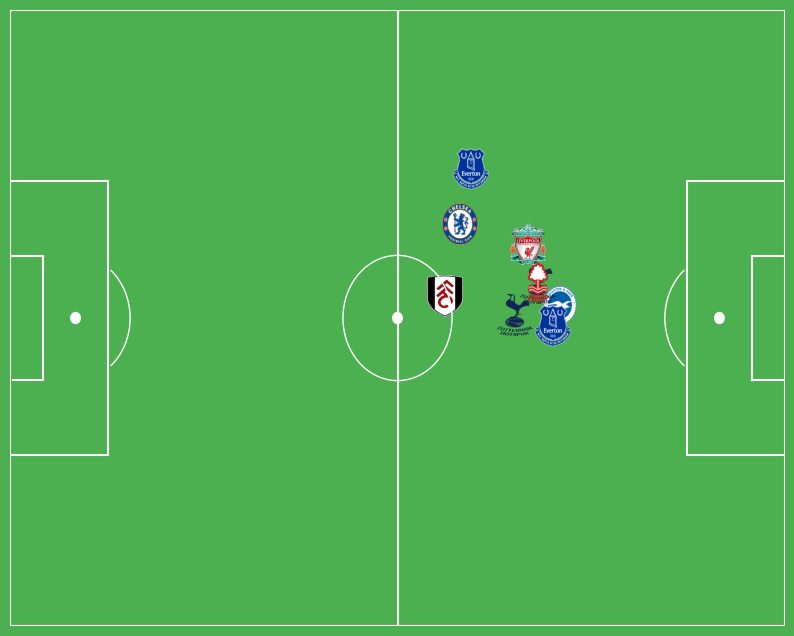

import requests
from bs4 import BeautifulSoup
import json
import pandas as pd
import numpy as np
import matplotlib.pyplot as plt
from matplotlib.patches import Arc
from matplotlib.patches import Circle, Patch
import matplotlib.image as mpimgurl = "https://understat.com/player/843"
# Send an HTTP GET request to the URL
response = requests.get(url)
# Parse the HTML content using BeautifulSoup
soup = BeautifulSoup(response.content, 'html.parser')script_tag = soup.find('script', string=lambda x: x and 'var shotsData' in x)
javascript_content = script_tag.text if script_tag else ""
# Extract data from shotsData
start_index = javascript_content.find("JSON.parse('") + len("JSON.parse('")
end_index = javascript_content.find("')")
# Unescape Unicode and decode the JavaScript string
escaped_json = javascript_content[start_index:end_index]
unescaped_json = bytes(escaped_json, 'utf-8').decode('unicode_escape')
# Parse the JSON data
shots_data = json.loads(unescaped_json)
# Now, shots_data contains the data in var shotsData
print(shots_data)[{'id': '14494', 'minute': '39', 'result': 'SavedShot', 'X': '0.7390000152587891', 'Y': '0.6079999923706054', 'xG': '0.019021300598978996', 'player': 'James Ward-Prowse', 'h_a': 'a', 'player_id': '843', 'situation': 'OpenPlay', 'season': '2014', 'shotType': 'RightFoot', 'match_id': '4756', 'h_team': 'Liverpool', 'a_team': 'Southampton', 'h_goals': '2', 'a_goals': '1', 'date': '2014-08-17 13:30:00', 'player_assisted': 'José Fonte', 'lastAction': 'Pass'}, {'id': '14502', 'minute': '66', 'result': 'BlockedShot', 'X': '0.730999984741211', 'Y': '0.629000015258789', 'xG': '0.015140400268137455', 'player': 'James Ward-Prowse', 'h_a': 'a', 'player_id': '843', 'situation': 'OpenPlay', 'season': '2014', 'shotType': 'RightFoot', 'match_id': '4756', 'h_team': 'Liverpool', 'a_team': 'Southampton', 'h_goals': '2', 'a_goals': '1', 'date': '2014-08-17 13:30:00', 'player_assisted': 'José Fonte', 'lastAction': 'BallRecovery'}, {'id': '14507', 'minute': '85', 'result': 'SavedShot', 'X': '0.8919999694824219', 'Y': '0.69', 'xG': '0.05837570130825043', 'player': 'James Ward-Prowse', 'h_a': 'a', 'player_id': '843', 'situation': 'OpenPlay', 'season': '2014', 'shotType': 'RightFoot', 'match_id': '4756', 'h_team': 'Liverpool', 'a_team': 'Southampton', 'h_goals': '2', 'a_goals': '1', 'date': '2014-08-17 13:30:00', 'player_assisted': 'Graziano Pellè', 'lastAction': 'LayOff'}, {'id': '14810', 'minute': '69', 'result': 'ShotOnPost', 'X': '0.740999984741211', 'Y': '0.7469999694824219', 'xG': '0.03464389964938164', 'player': 'James Ward-Prowse', 'h_a': 'h', 'player_id': '843', 'situation': 'DirectFreekick', 'season': '2014', 'shotType': 'RightFoot', 'match_id': '4762', 'h_team': 'Southampton', 'a_team': 'West Bromwich Albion', 'h_goals': '0', 'a_goals': '0', 'date': '2014-08-23 15:00:00', 'player_assisted': None, 'lastAction': 'Standard'}, {'id': '15138', 'minute': '53', 'result': 'BlockedShot', 'X': '0.7119999694824218', 'Y': '0.27399999618530274', 'xG': '0.014640900306403637', 'player': 'James Ward-Prowse', 'h_a': 'a', 'player_id': '843', 'situation': 'OpenPlay', 'season': '2014', 'shotType': 'RightFoot', 'match_id': '4774', 'h_team': 'West Ham', 'a_team': 'Southampton', 'h_goals': '1', 'a_goals': '3', 'date': '2014-08-30 15:00:00', 'player_assisted': 'José Fonte', 'lastAction': 'Pass'}, {'id': '15140', 'minute': '58', 'result': 'BlockedShot', 'X': '0.6990000152587891', 'Y': '0.58', 'xG': '0.012015599757432938', 'player': 'James Ward-Prowse', 'h_a': 'a', 'player_id': '843', 'situation': 'OpenPlay', 'season': '2014', 'shotType': 'RightFoot', 'match_id': '4774', 'h_team': 'West Ham', 'a_team': 'Southampton', 'h_goals': '1', 'a_goals': '3', 'date': '2014-08-30 15:00:00', 'player_assisted': 'Morgan Schneiderlin', 'lastAction': 'Pass'}, {'id': '15341', 'minute': '80', 'result': 'MissedShots', 'X': '0.7830000305175782', 'Y': '0.6790000152587891', 'xG': '0.020660599693655968', 'player': 'James Ward-Prowse', 'h_a': 'h', 'player_id': '843', 'situation': 'OpenPlay', 'season': '2014', 'shotType': 'RightFoot', 'match_id': '4722', 'h_team': 'Southampton', 'a_team': 'Newcastle United', 'h_goals': '4', 'a_goals': '0', 'date': '2014-09-13 15:00:00', 'player_assisted': 'Victor Wanyama', 'lastAction': 'Pass'}, {'id': '17726', 'minute': '39', 'result': 'SavedShot', 'X': '0.7290000152587891', 'Y': '0.5329999923706055', 'xG': '0.014468500390648842', 'player': 'James Ward-Prowse', 'h_a': 'a', 'player_id': '843', 'situation': 'OpenPlay', 'season': '2014', 'shotType': 'LeftFoot', 'match_id': '4609', 'h_team': 'Burnley', 'a_team': 'Southampton', 'h_goals': '1', 'a_goals': '0', 'date': '2014-12-13 15:00:00', 'player_assisted': None, 'lastAction': 'None'}, {'id': '17735', 'minute': '80', 'result': 'MissedShots', 'X': '0.7340000152587891', 'Y': '0.36400001525878906', 'xG': '0.04518510028719902', 'player': 'James Ward-Prowse', 'h_a': 'a', 'player_id': '843', 'situation': 'DirectFreekick', 'season': '2014', 'shotType': 'RightFoot', 'match_id': '4609', 'h_team': 'Burnley', 'a_team': 'Southampton', 'h_goals': '1', 'a_goals': '0', 'date': '2014-12-13 15:00:00', 'player_assisted': None, 'lastAction': 'Standard'}, {'id': '17555', 'minute': '36', 'result': 'MissedShots', 'X': '0.8130000305175781', 'Y': '0.3770000076293945', 'xG': '0.05491049960255623', 'player': 'James Ward-Prowse', 'h_a': 'a', 'player_id': '843', 'situation': 'OpenPlay', 'season': '2014', 'shotType': 'RightFoot', 'match_id': '4635', 'h_team': 'Crystal Palace', 'a_team': 'Southampton', 'h_goals': '1', 'a_goals': '3', 'date': '2014-12-26 15:00:00', 'player_assisted': 'Sadio Mané', 'lastAction': 'Pass'}, {'id': '17558', 'minute': '41', 'result': 'MissedShots', 'X': '0.9280000305175782', 'Y': '0.49400001525878906', 'xG': '0.0955457016825676', 'player': 'James Ward-Prowse', 'h_a': 'a', 'player_id': '843', 'situation': 'OpenPlay', 'season': '2014', 'shotType': 'Head', 'match_id': '4635', 'h_team': 'Crystal Palace', 'a_team': 'Southampton', 'h_goals': '1', 'a_goals': '3', 'date': '2014-12-26 15:00:00', 'player_assisted': None, 'lastAction': 'None'}, {'id': '19927', 'minute': '39', 'result': 'SavedShot', 'X': '0.895', 'Y': '0.4470000076293945', 'xG': '0.39429599046707153', 'player': 'James Ward-Prowse', 'h_a': 'h', 'player_id': '843', 'situation': 'OpenPlay', 'season': '2014', 'shotType': 'LeftFoot', 'match_id': '4555', 'h_team': 'Southampton', 'a_team': 'Arsenal', 'h_goals': '2', 'a_goals': '0', 'date': '2015-01-01 15:00:00', 'player_assisted': 'Sadio Mané', 'lastAction': 'Pass'}, {'id': '19935', 'minute': '60', 'result': 'MissedShots', 'X': '0.89', 'Y': '0.5770000076293945', 'xG': '0.0989651009440422', 'player': 'James Ward-Prowse', 'h_a': 'h', 'player_id': '843', 'situation': 'OpenPlay', 'season': '2014', 'shotType': 'RightFoot', 'match_id': '4555', 'h_team': 'Southampton', 'a_team': 'Arsenal', 'h_goals': '2', 'a_goals': '0', 'date': '2015-01-01 15:00:00', 'player_assisted': None, 'lastAction': 'Rebound'}, {'id': '19939', 'minute': '69', 'result': 'SavedShot', 'X': '0.9169999694824219', 'Y': '0.5329999923706055', 'xG': '0.12137199938297272', 'player': 'James Ward-Prowse', 'h_a': 'h', 'player_id': '843', 'situation': 'OpenPlay', 'season': '2014', 'shotType': 'Head', 'match_id': '4555', 'h_team': 'Southampton', 'a_team': 'Arsenal', 'h_goals': '2', 'a_goals': '0', 'date': '2015-01-01 15:00:00', 'player_assisted': 'Dusan Tadic', 'lastAction': 'Cross'}, {'id': '23569', 'minute': '6', 'result': 'SavedShot', 'X': '0.9230000305175782', 'Y': '0.4779999923706055', 'xG': '0.3921769857406616', 'player': 'James Ward-Prowse', 'h_a': 'h', 'player_id': '843', 'situation': 'OpenPlay', 'season': '2014', 'shotType': 'RightFoot', 'match_id': '4514', 'h_team': 'Southampton', 'a_team': 'Swansea', 'h_goals': '0', 'a_goals': '1', 'date': '2015-02-01 16:00:00', 'player_assisted': 'Nathaniel Clyne', 'lastAction': 'Cross'}, {'id': '23578', 'minute': '59', 'result': 'SavedShot', 'X': '0.91', 'Y': '0.52', 'xG': '0.11409900337457657', 'player': 'James Ward-Prowse', 'h_a': 'h', 'player_id': '843', 'situation': 'OpenPlay', 'season': '2014', 'shotType': 'Head', 'match_id': '4514', 'h_team': 'Southampton', 'a_team': 'Swansea', 'h_goals': '0', 'a_goals': '1', 'date': '2015-02-01 16:00:00', 'player_assisted': 'Eljero Elia', 'lastAction': 'Cross'}, {'id': '23579', 'minute': '60', 'result': 'SavedShot', 'X': '0.7909999847412109', 'Y': '0.5279999923706055', 'xG': '0.04724929854273796', 'player': 'James Ward-Prowse', 'h_a': 'h', 'player_id': '843', 'situation': 'OpenPlay', 'season': '2014', 'shotType': 'RightFoot', 'match_id': '4514', 'h_team': 'Southampton', 'a_team': 'Swansea', 'h_goals': '0', 'a_goals': '1', 'date': '2015-02-01 16:00:00', 'player_assisted': 'Dusan Tadic', 'lastAction': 'LayOff'}, {'id': '23418', 'minute': '51', 'result': 'MissedShots', 'X': '0.8059999847412109', 'Y': '0.39599998474121095', 'xG': '0.1125129982829094', 'player': 'James Ward-Prowse', 'h_a': 'a', 'player_id': '843', 'situation': 'DirectFreekick', 'season': '2014', 'shotType': 'RightFoot', 'match_id': '4520', 'h_team': 'Queens Park Rangers', 'a_team': 'Southampton', 'h_goals': '0', 'a_goals': '1', 'date': '2015-02-07 15:00:00', 'player_assisted': None, 'lastAction': 'Standard'}, {'id': '23424', 'minute': '67', 'result': 'BlockedShot', 'X': '0.740999984741211', 'Y': '0.46099998474121096', 'xG': '0.020024200901389122', 'player': 'James Ward-Prowse', 'h_a': 'a', 'player_id': '843', 'situation': 'OpenPlay', 'season': '2014', 'shotType': 'LeftFoot', 'match_id': '4520', 'h_team': 'Queens Park Rangers', 'a_team': 'Southampton', 'h_goals': '0', 'a_goals': '1', 'date': '2015-02-07 15:00:00', 'player_assisted': 'Eljero Elia', 'lastAction': 'Pass'}, {'id': '24195', 'minute': '7', 'result': 'MissedShots', 'X': '0.7569999694824219', 'Y': '0.4', 'xG': '0.02395150065422058', 'player': 'James Ward-Prowse', 'h_a': 'h', 'player_id': '843', 'situation': 'OpenPlay', 'season': '2014', 'shotType': 'LeftFoot', 'match_id': '4544', 'h_team': 'Southampton', 'a_team': 'Liverpool', 'h_goals': '0', 'a_goals': '2', 'date': '2015-02-22 16:15:00', 'player_assisted': 'Graziano Pellè', 'lastAction': 'LayOff'}, {'id': '20456', 'minute': '81', 'result': 'SavedShot', 'X': '0.8159999847412109', 'Y': '0.5279999923706055', 'xG': '0.0693110004067421', 'player': 'James Ward-Prowse', 'h_a': 'h', 'player_id': '843', 'situation': 'OpenPlay', 'season': '2014', 'shotType': 'LeftFoot', 'match_id': '4484', 'h_team': 'Southampton', 'a_team': 'Crystal Palace', 'h_goals': '1', 'a_goals': '0', 'date': '2015-03-03 19:45:00', 'player_assisted': 'Sadio Mané', 'lastAction': 'TakeOn'}, {'id': '22387', 'minute': '86', 'result': 'BlockedShot', 'X': '0.860999984741211', 'Y': '0.49900001525878906', 'xG': '0.09775029867887497', 'player': 'James Ward-Prowse', 'h_a': 'a', 'player_id': '843', 'situation': 'OpenPlay', 'season': '2014', 'shotType': 'LeftFoot', 'match_id': '4499', 'h_team': 'Chelsea', 'a_team': 'Southampton', 'h_goals': '1', 'a_goals': '1', 'date': '2015-03-15 13:30:00', 'player_assisted': 'Filip Djuricic', 'lastAction': 'TakeOn'}, {'id': '21630', 'minute': '24', 'result': 'MissedShots', 'X': '0.775', 'Y': '0.445', 'xG': '0.08528690040111542', 'player': 'James Ward-Prowse', 'h_a': 'a', 'player_id': '843', 'situation': 'DirectFreekick', 'season': '2014', 'shotType': 'RightFoot', 'match_id': '4441', 'h_team': 'Everton', 'a_team': 'Southampton', 'h_goals': '1', 'a_goals': '0', 'date': '2015-04-04 15:00:00', 'player_assisted': None, 'lastAction': 'Standard'}, {'id': '21631', 'minute': '27', 'result': 'SavedShot', 'X': '0.7240000152587891', 'Y': '0.5279999923706055', 'xG': '0.018420599400997162', 'player': 'James Ward-Prowse', 'h_a': 'a', 'player_id': '843', 'situation': 'OpenPlay', 'season': '2014', 'shotType': 'RightFoot', 'match_id': '4441', 'h_team': 'Everton', 'a_team': 'Southampton', 'h_goals': '1', 'a_goals': '0', 'date': '2015-04-04 15:00:00', 'player_assisted': 'Ryan Bertrand', 'lastAction': 'Pass'}, {'id': '20775', 'minute': '55', 'result': 'Goal', 'X': '0.885', 'Y': '0.5', 'xG': '0.7611690163612366', 'player': 'James Ward-Prowse', 'h_a': 'h', 'player_id': '843', 'situation': 'Penalty', 'season': '2014', 'shotType': 'RightFoot', 'match_id': '4453', 'h_team': 'Southampton', 'a_team': 'Hull', 'h_goals': '2', 'a_goals': '0', 'date': '2015-04-11 15:00:00', 'player_assisted': None, 'lastAction': 'Standard'}, {'id': '21552', 'minute': '71', 'result': 'BlockedShot', 'X': '0.7969999694824219', 'Y': '0.6880000305175781', 'xG': '0.02618500031530857', 'player': 'James Ward-Prowse', 'h_a': 'a', 'player_id': '843', 'situation': 'OpenPlay', 'season': '2014', 'shotType': 'RightFoot', 'match_id': '4464', 'h_team': 'Stoke', 'a_team': 'Southampton', 'h_goals': '2', 'a_goals': '1', 'date': '2015-04-18 15:00:00', 'player_assisted': 'Morgan Schneiderlin', 'lastAction': 'Chipped'}, {'id': '22985', 'minute': '23', 'result': 'BlockedShot', 'X': '0.72', 'Y': '0.53', 'xG': '0.0157478004693985', 'player': 'James Ward-Prowse', 'h_a': 'h', 'player_id': '843', 'situation': 'OpenPlay', 'season': '2014', 'shotType': 'RightFoot', 'match_id': '4468', 'h_team': 'Southampton', 'a_team': 'Tottenham', 'h_goals': '2', 'a_goals': '2', 'date': '2015-04-25 12:45:00', 'player_assisted': 'Sadio Mané', 'lastAction': 'Pass'}, {'id': '20606', 'minute': '4', 'result': 'BlockedShot', 'X': '0.7480000305175781', 'Y': '0.37099998474121093', 'xG': '0.016632499173283577', 'player': 'James Ward-Prowse', 'h_a': 'h', 'player_id': '843', 'situation': 'OpenPlay', 'season': '2014', 'shotType': 'RightFoot', 'match_id': '4419', 'h_team': 'Southampton', 'a_team': 'Aston Villa', 'h_goals': '6', 'a_goals': '1', 'date': '2015-05-16 12:45:00', 'player_assisted': 'Graziano Pellè', 'lastAction': 'BallRecovery'}, {'id': '20613', 'minute': '17', 'result': 'SavedShot', 'X': '0.8859999847412109', 'Y': '0.32799999237060545', 'xG': '0.12519200146198273', 'player': 'James Ward-Prowse', 'h_a': 'h', 'player_id': '843', 'situation': 'OpenPlay', 'season': '2014', 'shotType': 'RightFoot', 'match_id': '4419', 'h_team': 'Southampton', 'a_team': 'Aston Villa', 'h_goals': '6', 'a_goals': '1', 'date': '2015-05-16 12:45:00', 'player_assisted': 'Nathaniel Clyne', 'lastAction': 'Throughball'}, {'id': '23023', 'minute': '71', 'result': 'BlockedShot', 'X': '0.7280000305175781', 'Y': '0.40200000762939453', 'xG': '0.01763859950006008', 'player': 'James Ward-Prowse', 'h_a': 'a', 'player_id': '843', 'situation': 'OpenPlay', 'season': '2014', 'shotType': 'RightFoot', 'match_id': '4437', 'h_team': 'Manchester City', 'a_team': 'Southampton', 'h_goals': '2', 'a_goals': '0', 'date': '2015-05-24 15:00:00', 'player_assisted': 'Graziano Pellè', 'lastAction': 'Pass'}, {'id': '57672', 'minute': '1', 'result': 'SavedShot', 'X': '0.735', 'Y': '0.5259999847412109', 'xG': '0.054307300597429276', 'player': 'James Ward-Prowse', 'h_a': 'h', 'player_id': '843', 'situation': 'DirectFreekick', 'season': '2015', 'shotType': 'RightFoot', 'match_id': '119', 'h_team': 'Southampton', 'a_team': 'Norwich', 'h_goals': '3', 'a_goals': '0', 'date': '2015-08-30 16:30:00', 'player_assisted': None, 'lastAction': 'Standard'}, {'id': '57697', 'minute': '80', 'result': 'MissedShots', 'X': '0.7519999694824219', 'Y': '0.6959999847412109', 'xG': '0.04466789960861206', 'player': 'James Ward-Prowse', 'h_a': 'h', 'player_id': '843', 'situation': 'DirectFreekick', 'season': '2015', 'shotType': 'RightFoot', 'match_id': '119', 'h_team': 'Southampton', 'a_team': 'Norwich', 'h_goals': '3', 'a_goals': '0', 'date': '2015-08-30 16:30:00', 'player_assisted': None, 'lastAction': 'Standard'}, {'id': '57999', 'minute': '36', 'result': 'BlockedShot', 'X': '0.7290000152587891', 'Y': '0.44400001525878907', 'xG': '0.01788710057735443', 'player': 'James Ward-Prowse', 'h_a': 'a', 'player_id': '843', 'situation': 'OpenPlay', 'season': '2015', 'shotType': 'RightFoot', 'match_id': '125', 'h_team': 'West Bromwich Albion', 'a_team': 'Southampton', 'h_goals': '0', 'a_goals': '0', 'date': '2015-09-12 18:00:00', 'player_assisted': 'Steven Davis', 'lastAction': 'Pass'}, {'id': '58007', 'minute': '63', 'result': 'MissedShots', 'X': '0.835', 'Y': '0.34200000762939453', 'xG': '0.03436319902539253', 'player': 'James Ward-Prowse', 'h_a': 'a', 'player_id': '843', 'situation': 'OpenPlay', 'season': '2015', 'shotType': 'RightFoot', 'match_id': '125', 'h_team': 'West Bromwich Albion', 'a_team': 'Southampton', 'h_goals': '0', 'a_goals': '0', 'date': '2015-09-12 18:00:00', 'player_assisted': 'Dusan Tadic', 'lastAction': 'Pass'}, {'id': '58008', 'minute': '66', 'result': 'MissedShots', 'X': '0.7719999694824219', 'Y': '0.46099998474121096', 'xG': '0.025884900242090225', 'player': 'James Ward-Prowse', 'h_a': 'a', 'player_id': '843', 'situation': 'OpenPlay', 'season': '2015', 'shotType': 'RightFoot', 'match_id': '125', 'h_team': 'West Bromwich Albion', 'a_team': 'Southampton', 'h_goals': '0', 'a_goals': '0', 'date': '2015-09-12 18:00:00', 'player_assisted': 'Graziano Pellè', 'lastAction': 'Pass'}, {'id': '58224', 'minute': '19', 'result': 'SavedShot', 'X': '0.8119999694824219', 'Y': '0.5479999923706055', 'xG': '0.06830289959907532', 'player': 'James Ward-Prowse', 'h_a': 'h', 'player_id': '843', 'situation': 'OpenPlay', 'season': '2015', 'shotType': 'RightFoot', 'match_id': '139', 'h_team': 'Southampton', 'a_team': 'Manchester United', 'h_goals': '2', 'a_goals': '3', 'date': '2015-09-20 19:00:00', 'player_assisted': 'Matt Targett', 'lastAction': 'Pass'}, {'id': '58705', 'minute': '48', 'result': 'MissedShots', 'X': '0.7859999847412109', 'Y': '0.45599998474121095', 'xG': '0.02712409943342209', 'player': 'James Ward-Prowse', 'h_a': 'a', 'player_id': '843', 'situation': 'OpenPlay', 'season': '2015', 'shotType': 'RightFoot', 'match_id': '157', 'h_team': 'Chelsea', 'a_team': 'Southampton', 'h_goals': '1', 'a_goals': '3', 'date': '2015-10-03 20:30:00', 'player_assisted': None, 'lastAction': 'Rebound'}, {'id': '58709', 'minute': '68', 'result': 'MissedShots', 'X': '0.715999984741211', 'Y': '0.57', 'xG': '0.010093100368976593', 'player': 'James Ward-Prowse', 'h_a': 'a', 'player_id': '843', 'situation': 'SetPiece', 'season': '2015', 'shotType': 'RightFoot', 'match_id': '157', 'h_team': 'Chelsea', 'a_team': 'Southampton', 'h_goals': '1', 'a_goals': '3', 'date': '2015-10-03 20:30:00', 'player_assisted': None, 'lastAction': 'None'}, {'id': '52763', 'minute': '26', 'result': 'BlockedShot', 'X': '0.8430000305175781', 'Y': '0.48200000762939454', 'xG': '0.0694516971707344', 'player': 'James Ward-Prowse', 'h_a': 'a', 'player_id': '843', 'situation': 'OpenPlay', 'season': '2015', 'shotType': 'LeftFoot', 'match_id': '196', 'h_team': 'Sunderland', 'a_team': 'Southampton', 'h_goals': '0', 'a_goals': '1', 'date': '2015-11-07 19:00:00', 'player_assisted': 'Graziano Pellè', 'lastAction': 'Pass'}, {'id': '52772', 'minute': '60', 'result': 'BlockedShot', 'X': '0.750999984741211', 'Y': '0.5940000152587891', 'xG': '0.019201699644327164', 'player': 'James Ward-Prowse', 'h_a': 'a', 'player_id': '843', 'situation': 'OpenPlay', 'season': '2015', 'shotType': 'LeftFoot', 'match_id': '196', 'h_team': 'Sunderland', 'a_team': 'Southampton', 'h_goals': '0', 'a_goals': '1', 'date': '2015-11-07 19:00:00', 'player_assisted': 'Sadio Mané', 'lastAction': 'Pass'}, {'id': '52776', 'minute': '83', 'result': 'MissedShots', 'X': '0.81', 'Y': '0.605999984741211', 'xG': '0.05733500048518181', 'player': 'James Ward-Prowse', 'h_a': 'a', 'player_id': '843', 'situation': 'OpenPlay', 'season': '2015', 'shotType': 'LeftFoot', 'match_id': '196', 'h_team': 'Sunderland', 'a_team': 'Southampton', 'h_goals': '0', 'a_goals': '1', 'date': '2015-11-07 19:00:00', 'player_assisted': 'Dusan Tadic', 'lastAction': 'Pass'}, {'id': '56204', 'minute': '28', 'result': 'MissedShots', 'X': '0.789000015258789', 'Y': '0.2720000076293945', 'xG': '0.05372120067477226', 'player': 'James Ward-Prowse', 'h_a': 'a', 'player_id': '843', 'situation': 'DirectFreekick', 'season': '2015', 'shotType': 'RightFoot', 'match_id': '215', 'h_team': 'Manchester City', 'a_team': 'Southampton', 'h_goals': '3', 'a_goals': '1', 'date': '2015-11-28 19:00:00', 'player_assisted': None, 'lastAction': 'Standard'}, {'id': '54764', 'minute': '26', 'result': 'SavedShot', 'X': '0.7669999694824219', 'Y': '0.43400001525878906', 'xG': '0.027876999229192734', 'player': 'James Ward-Prowse', 'h_a': 'h', 'player_id': '843', 'situation': 'OpenPlay', 'season': '2015', 'shotType': 'RightFoot', 'match_id': '227', 'h_team': 'Southampton', 'a_team': 'Aston Villa', 'h_goals': '1', 'a_goals': '1', 'date': '2015-12-05 19:00:00', 'player_assisted': 'Sadio Mané', 'lastAction': 'Pass'}, {'id': '54782', 'minute': '83', 'result': 'BlockedShot', 'X': '0.67', 'Y': '0.49900001525878906', 'xG': '0.011147799901664257', 'player': 'James Ward-Prowse', 'h_a': 'h', 'player_id': '843', 'situation': 'OpenPlay', 'season': '2015', 'shotType': 'RightFoot', 'match_id': '227', 'h_team': 'Southampton', 'a_team': 'Aston Villa', 'h_goals': '1', 'a_goals': '1', 'date': '2015-12-05 19:00:00', 'player_assisted': 'Juanmi', 'lastAction': 'Pass'}, {'id': '52410', 'minute': '91', 'result': 'SavedShot', 'X': '0.8869999694824219', 'Y': '0.44400001525878907', 'xG': '0.3138499855995178', 'player': 'James Ward-Prowse', 'h_a': 'h', 'player_id': '843', 'situation': 'OpenPlay', 'season': '2015', 'shotType': 'RightFoot', 'match_id': '242', 'h_team': 'Southampton', 'a_team': 'Tottenham', 'h_goals': '0', 'a_goals': '2', 'date': '2015-12-19 19:00:00', 'player_assisted': 'Ryan Bertrand', 'lastAction': 'Pass'}, {'id': '55160', 'minute': '24', 'result': 'MissedShots', 'X': '0.7819999694824219', 'Y': '0.43599998474121093', 'xG': '0.04672909900546074', 'player': 'James Ward-Prowse', 'h_a': 'h', 'player_id': '843', 'situation': 'OpenPlay', 'season': '2015', 'shotType': 'LeftFoot', 'match_id': '260', 'h_team': 'Southampton', 'a_team': 'Arsenal', 'h_goals': '4', 'a_goals': '0', 'date': '2015-12-26 23:45:00', 'player_assisted': None, 'lastAction': 'BallRecovery'}, {'id': '55161', 'minute': '26', 'result': 'MissedShots', 'X': '0.795', 'Y': '0.5929999923706055', 'xG': '0.047101300209760666', 'player': 'James Ward-Prowse', 'h_a': 'h', 'player_id': '843', 'situation': 'OpenPlay', 'season': '2015', 'shotType': 'RightFoot', 'match_id': '260', 'h_team': 'Southampton', 'a_team': 'Arsenal', 'h_goals': '4', 'a_goals': '0', 'date': '2015-12-26 23:45:00', 'player_assisted': 'Ryan Bertrand', 'lastAction': 'Pass'}, {'id': '55908', 'minute': '11', 'result': 'SavedShot', 'X': '0.8519999694824218', 'Y': '0.5659999847412109', 'xG': '0.08506549894809723', 'player': 'James Ward-Prowse', 'h_a': 'a', 'player_id': '843', 'situation': 'OpenPlay', 'season': '2015', 'shotType': 'LeftFoot', 'match_id': '276', 'h_team': 'Norwich', 'a_team': 'Southampton', 'h_goals': '1', 'a_goals': '0', 'date': '2016-01-02 19:00:00', 'player_assisted': 'Ryan Bertrand', 'lastAction': 'Pass'}, {'id': '52566', 'minute': '4', 'result': 'Goal', 'X': '0.75', 'Y': '0.72', 'xG': '0.04044799879193306', 'player': 'James Ward-Prowse', 'h_a': 'h', 'player_id': '843', 'situation': 'DirectFreekick', 'season': '2015', 'shotType': 'RightFoot', 'match_id': '294', 'h_team': 'Southampton', 'a_team': 'West Bromwich Albion', 'h_goals': '3', 'a_goals': '0', 'date': '2016-01-16 19:00:00', 'player_assisted': None, 'lastAction': 'Standard'}, {'id': '52572', 'minute': '34', 'result': 'Goal', 'X': '0.885', 'Y': '0.5', 'xG': '0.7611690163612366', 'player': 'James Ward-Prowse', 'h_a': 'h', 'player_id': '843', 'situation': 'Penalty', 'season': '2015', 'shotType': 'RightFoot', 'match_id': '294', 'h_team': 'Southampton', 'a_team': 'West Bromwich Albion', 'h_goals': '3', 'a_goals': '0', 'date': '2016-01-16 19:00:00', 'player_assisted': None, 'lastAction': 'Standard'}, {'id': '53209', 'minute': '71', 'result': 'BlockedShot', 'X': '0.7440000152587891', 'Y': '0.7190000152587891', 'xG': '0.011229099705815315', 'player': 'James Ward-Prowse', 'h_a': 'a', 'player_id': '843', 'situation': 'OpenPlay', 'season': '2015', 'shotType': 'RightFoot', 'match_id': '311', 'h_team': 'Arsenal', 'a_team': 'Southampton', 'h_goals': '0', 'a_goals': '0', 'date': '2016-02-02 23:45:00', 'player_assisted': None, 'lastAction': 'None'}, {'id': '56123', 'minute': '60', 'result': 'BlockedShot', 'X': '0.7530000305175781', 'Y': '0.3129999923706055', 'xG': '0.015181699767708778', 'player': 'James Ward-Prowse', 'h_a': 'a', 'player_id': '843', 'situation': 'OpenPlay', 'season': '2015', 'shotType': 'RightFoot', 'match_id': '332', 'h_team': 'Swansea', 'a_team': 'Southampton', 'h_goals': '0', 'a_goals': '1', 'date': '2016-02-13 19:00:00', 'player_assisted': 'Graziano Pellè', 'lastAction': 'Pass'}, {'id': '60165', 'minute': '68', 'result': 'BlockedShot', 'X': '0.76', 'Y': '0.48700000762939455', 'xG': '0.01856289990246296', 'player': 'James Ward-Prowse', 'h_a': 'h', 'player_id': '843', 'situation': 'OpenPlay', 'season': '2015', 'shotType': 'RightFoot', 'match_id': '360', 'h_team': 'Southampton', 'a_team': 'Sunderland', 'h_goals': '1', 'a_goals': '1', 'date': '2016-03-05 19:00:00', 'player_assisted': None, 'lastAction': 'Rebound'}, {'id': '60179', 'minute': '92', 'result': 'BlockedShot', 'X': '0.7290000152587891', 'Y': '0.415', 'xG': '0.014379399828612804', 'player': 'James Ward-Prowse', 'h_a': 'h', 'player_id': '843', 'situation': 'OpenPlay', 'season': '2015', 'shotType': 'RightFoot', 'match_id': '360', 'h_team': 'Southampton', 'a_team': 'Sunderland', 'h_goals': '1', 'a_goals': '1', 'date': '2016-03-05 19:00:00', 'player_assisted': None, 'lastAction': 'None'}, {'id': '59666', 'minute': '78', 'result': 'MissedShots', 'X': '0.7040000152587891', 'Y': '0.4979999923706055', 'xG': '0.0394895002245903', 'player': 'James Ward-Prowse', 'h_a': 'a', 'player_id': '843', 'situation': 'DirectFreekick', 'season': '2015', 'shotType': 'RightFoot', 'match_id': '370', 'h_team': 'Stoke', 'a_team': 'Southampton', 'h_goals': '1', 'a_goals': '2', 'date': '2016-03-12 19:00:00', 'player_assisted': None, 'lastAction': 'Standard'}, {'id': '59667', 'minute': '87', 'result': 'ShotOnPost', 'X': '0.754000015258789', 'Y': '0.5990000152587891', 'xG': '0.060650698840618134', 'player': 'James Ward-Prowse', 'h_a': 'a', 'player_id': '843', 'situation': 'DirectFreekick', 'season': '2015', 'shotType': 'RightFoot', 'match_id': '370', 'h_team': 'Stoke', 'a_team': 'Southampton', 'h_goals': '1', 'a_goals': '2', 'date': '2016-03-12 19:00:00', 'player_assisted': None, 'lastAction': 'Standard'}, {'id': '57338', 'minute': '83', 'result': 'BlockedShot', 'X': '0.7719999694824219', 'Y': '0.39799999237060546', 'xG': '0.040748000144958496', 'player': 'James Ward-Prowse', 'h_a': 'h', 'player_id': '843', 'situation': 'OpenPlay', 'season': '2015', 'shotType': 'RightFoot', 'match_id': '435', 'h_team': 'Southampton', 'a_team': 'Manchester City', 'h_goals': '4', 'a_goals': '2', 'date': '2016-05-01 19:30:00', 'player_assisted': 'Shane Long', 'lastAction': 'Pass'}, {'id': '56875', 'minute': '92', 'result': 'MissedShots', 'X': '0.8109999847412109', 'Y': '0.36700000762939455', 'xG': '0.04980450123548508', 'player': 'James Ward-Prowse', 'h_a': 'a', 'player_id': '843', 'situation': 'OpenPlay', 'season': '2015', 'shotType': 'RightFoot', 'match_id': '444', 'h_team': 'Tottenham', 'a_team': 'Southampton', 'h_goals': '1', 'a_goals': '2', 'date': '2016-05-08 16:30:00', 'player_assisted': 'Shane Long', 'lastAction': 'Pass'}, {'id': '112321', 'minute': '26', 'result': 'MissedShots', 'X': '0.76', 'Y': '0.7019999694824218', 'xG': '0.016915200278162956', 'player': 'James Ward-Prowse', 'h_a': 'h', 'player_id': '843', 'situation': 'FromCorner', 'season': '2016', 'shotType': 'RightFoot', 'match_id': '466', 'h_team': 'Southampton', 'a_team': 'Watford', 'h_goals': '1', 'a_goals': '1', 'date': '2016-08-13 18:00:00', 'player_assisted': 'Nathan Redmond', 'lastAction': 'Pass'}, {'id': '113070', 'minute': '83', 'result': 'BlockedShot', 'X': '0.8209999847412109', 'Y': '0.28299999237060547', 'xG': '0.07352180033922195', 'player': 'James Ward-Prowse', 'h_a': 'h', 'player_id': '843', 'situation': 'DirectFreekick', 'season': '2016', 'shotType': 'RightFoot', 'match_id': '484', 'h_team': 'Southampton', 'a_team': 'Sunderland', 'h_goals': '1', 'a_goals': '1', 'date': '2016-08-27 18:00:00', 'player_assisted': None, 'lastAction': 'Standard'}, {'id': '113976', 'minute': '85', 'result': 'SavedShot', 'X': '0.8580000305175781', 'Y': '0.3820000076293945', 'xG': '0.10159700363874435', 'player': 'James Ward-Prowse', 'h_a': 'a', 'player_id': '843', 'situation': 'OpenPlay', 'season': '2016', 'shotType': 'RightFoot', 'match_id': '519', 'h_team': 'West Ham', 'a_team': 'Southampton', 'h_goals': '0', 'a_goals': '3', 'date': '2016-09-25 19:00:00', 'player_assisted': 'Cédric Soares', 'lastAction': 'Pass'}, {'id': '113978', 'minute': '91', 'result': 'Goal', 'X': '0.925', 'Y': '0.534000015258789', 'xG': '0.5833050012588501', 'player': 'James Ward-Prowse', 'h_a': 'a', 'player_id': '843', 'situation': 'OpenPlay', 'season': '2016', 'shotType': 'LeftFoot', 'match_id': '519', 'h_team': 'West Ham', 'a_team': 'Southampton', 'h_goals': '0', 'a_goals': '3', 'date': '2016-09-25 19:00:00', 'player_assisted': None, 'lastAction': 'None'}, {'id': '114331', 'minute': '83', 'result': 'MissedShots', 'X': '0.8730000305175781', 'Y': '0.5070000076293946', 'xG': '0.08313640207052231', 'player': 'James Ward-Prowse', 'h_a': 'a', 'player_id': '843', 'situation': 'OpenPlay', 'season': '2016', 'shotType': 'LeftFoot', 'match_id': '528', 'h_team': 'Leicester', 'a_team': 'Southampton', 'h_goals': '0', 'a_goals': '0', 'date': '2016-10-02 17:15:00', 'player_assisted': None, 'lastAction': 'None'}, {'id': '114067', 'minute': '88', 'result': 'SavedShot', 'X': '0.8159999847412109', 'Y': '0.705999984741211', 'xG': '0.039855100214481354', 'player': 'James Ward-Prowse', 'h_a': 'h', 'player_id': '843', 'situation': 'OpenPlay', 'season': '2016', 'shotType': 'RightFoot', 'match_id': '539', 'h_team': 'Southampton', 'a_team': 'Burnley', 'h_goals': '3', 'a_goals': '1', 'date': '2016-10-16 19:00:00', 'player_assisted': 'Steven Davis', 'lastAction': 'Pass'}, {'id': '115581', 'minute': '79', 'result': 'MissedShots', 'X': '0.7880000305175782', 'Y': '0.8019999694824219', 'xG': '0.03823089972138405', 'player': 'James Ward-Prowse', 'h_a': 'a', 'player_id': '843', 'situation': 'DirectFreekick', 'season': '2016', 'shotType': 'RightFoot', 'match_id': '2694', 'h_team': 'Hull', 'a_team': 'Southampton', 'h_goals': '2', 'a_goals': '1', 'date': '2016-11-06 18:15:00', 'player_assisted': None, 'lastAction': 'Standard'}, {'id': '115350', 'minute': '77', 'result': 'MissedShots', 'X': '0.925', 'Y': '0.505', 'xG': '0.5683050155639648', 'player': 'James Ward-Prowse', 'h_a': 'h', 'player_id': '843', 'situation': 'OpenPlay', 'season': '2016', 'shotType': 'RightFoot', 'match_id': '2715', 'h_team': 'Southampton', 'a_team': 'Everton', 'h_goals': '1', 'a_goals': '0', 'date': '2016-11-27 20:30:00', 'player_assisted': 'Charlie Austin', 'lastAction': 'Pass'}, {'id': '115349', 'minute': '77', 'result': 'SavedShot', 'X': '0.730999984741211', 'Y': '0.4809999847412109', 'xG': '0.023487400263547897', 'player': 'James Ward-Prowse', 'h_a': 'h', 'player_id': '843', 'situation': 'OpenPlay', 'season': '2016', 'shotType': 'RightFoot', 'match_id': '2715', 'h_team': 'Southampton', 'a_team': 'Everton', 'h_goals': '1', 'a_goals': '0', 'date': '2016-11-27 20:30:00', 'player_assisted': None, 'lastAction': 'BallRecovery'}, {'id': '115351', 'minute': '79', 'result': 'BlockedShot', 'X': '0.935', 'Y': '0.59', 'xG': '0.3223620057106018', 'player': 'James Ward-Prowse', 'h_a': 'h', 'player_id': '843', 'situation': 'OpenPlay', 'season': '2016', 'shotType': 'RightFoot', 'match_id': '2715', 'h_team': 'Southampton', 'a_team': 'Everton', 'h_goals': '1', 'a_goals': '0', 'date': '2016-11-27 20:30:00', 'player_assisted': 'Cédric Soares', 'lastAction': 'Cross'}, {'id': '115355', 'minute': '89', 'result': 'BlockedShot', 'X': '0.840999984741211', 'Y': '0.41900001525878905', 'xG': '0.08864480257034302', 'player': 'James Ward-Prowse', 'h_a': 'h', 'player_id': '843', 'situation': 'OpenPlay', 'season': '2016', 'shotType': 'RightFoot', 'match_id': '2715', 'h_team': 'Southampton', 'a_team': 'Everton', 'h_goals': '1', 'a_goals': '0', 'date': '2016-11-27 20:30:00', 'player_assisted': 'Jordy Clasie', 'lastAction': 'Pass'}, {'id': '115526', 'minute': '60', 'result': 'BlockedShot', 'X': '0.825', 'Y': '0.5379999923706055', 'xG': '0.04180759936571121', 'player': 'James Ward-Prowse', 'h_a': 'a', 'player_id': '843', 'situation': 'OpenPlay', 'season': '2016', 'shotType': 'LeftFoot', 'match_id': '3106', 'h_team': 'Crystal Palace', 'a_team': 'Southampton', 'h_goals': '3', 'a_goals': '0', 'date': '2016-12-03 19:00:00', 'player_assisted': 'Ryan Bertrand', 'lastAction': 'BallTouch'}, {'id': '115534', 'minute': '76', 'result': 'MissedShots', 'X': '0.855', 'Y': '0.4209999847412109', 'xG': '0.031010299921035767', 'player': 'James Ward-Prowse', 'h_a': 'a', 'player_id': '843', 'situation': 'FromCorner', 'season': '2016', 'shotType': 'Head', 'match_id': '3106', 'h_team': 'Crystal Palace', 'a_team': 'Southampton', 'h_goals': '3', 'a_goals': '0', 'date': '2016-12-03 19:00:00', 'player_assisted': None, 'lastAction': 'None'}, {'id': '117230', 'minute': '32', 'result': 'MissedShots', 'X': '0.905', 'Y': '0.539000015258789', 'xG': '0.09587389975786209', 'player': 'James Ward-Prowse', 'h_a': 'h', 'player_id': '843', 'situation': 'OpenPlay', 'season': '2016', 'shotType': 'Head', 'match_id': '3123', 'h_team': 'Southampton', 'a_team': 'Middlesbrough', 'h_goals': '1', 'a_goals': '0', 'date': '2016-12-11 18:15:00', 'player_assisted': 'Dusan Tadic', 'lastAction': 'Cross'}, {'id': '118227', 'minute': '34', 'result': 'SavedShot', 'X': '0.740999984741211', 'Y': '0.524000015258789', 'xG': '0.058181699365377426', 'player': 'James Ward-Prowse', 'h_a': 'a', 'player_id': '843', 'situation': 'DirectFreekick', 'season': '2016', 'shotType': 'RightFoot', 'match_id': '3133', 'h_team': 'Stoke', 'a_team': 'Southampton', 'h_goals': '0', 'a_goals': '0', 'date': '2016-12-15 00:00:00', 'player_assisted': None, 'lastAction': 'Standard'}, {'id': '118237', 'minute': '79', 'result': 'BlockedShot', 'X': '0.885', 'Y': '0.5640000152587891', 'xG': '0.08003029972314835', 'player': 'James Ward-Prowse', 'h_a': 'a', 'player_id': '843', 'situation': 'FromCorner', 'season': '2016', 'shotType': 'LeftFoot', 'match_id': '3133', 'h_team': 'Stoke', 'a_team': 'Southampton', 'h_goals': '0', 'a_goals': '0', 'date': '2016-12-15 00:00:00', 'player_assisted': None, 'lastAction': 'None'}, {'id': '117183', 'minute': '39', 'result': 'SavedShot', 'X': '0.905', 'Y': '0.5879999923706055', 'xG': '0.04569369927048683', 'player': 'James Ward-Prowse', 'h_a': 'a', 'player_id': '843', 'situation': 'OpenPlay', 'season': '2016', 'shotType': 'Head', 'match_id': '3345', 'h_team': 'Burnley', 'a_team': 'Southampton', 'h_goals': '1', 'a_goals': '0', 'date': '2017-01-14 19:00:00', 'player_assisted': 'Shane Long', 'lastAction': 'Cross'}, {'id': '118629', 'minute': '25', 'result': 'Goal', 'X': '0.8430000305175781', 'Y': '0.3270000076293945', 'xG': '0.04480310156941414', 'player': 'James Ward-Prowse', 'h_a': 'h', 'player_id': '843', 'situation': 'OpenPlay', 'season': '2016', 'shotType': 'RightFoot', 'match_id': '3357', 'h_team': 'Southampton', 'a_team': 'Leicester', 'h_goals': '3', 'a_goals': '0', 'date': '2017-01-22 15:00:00', 'player_assisted': 'Cédric Soares', 'lastAction': 'Pass'}, {'id': '118638', 'minute': '60', 'result': 'MissedShots', 'X': '0.7830000305175782', 'Y': '0.455', 'xG': '0.043262798339128494', 'player': 'James Ward-Prowse', 'h_a': 'h', 'player_id': '843', 'situation': 'OpenPlay', 'season': '2016', 'shotType': 'RightFoot', 'match_id': '3357', 'h_team': 'Southampton', 'a_team': 'Leicester', 'h_goals': '3', 'a_goals': '0', 'date': '2017-01-22 15:00:00', 'player_assisted': 'Nathan Redmond', 'lastAction': 'Pass'}, {'id': '116942', 'minute': '2', 'result': 'SavedShot', 'X': '0.8040000152587891', 'Y': '0.5220000076293946', 'xG': '0.017806099727749825', 'player': 'James Ward-Prowse', 'h_a': 'h', 'player_id': '843', 'situation': 'OpenPlay', 'season': '2016', 'shotType': 'RightFoot', 'match_id': '3376', 'h_team': 'Southampton', 'a_team': 'West Ham', 'h_goals': '1', 'a_goals': '3', 'date': '2017-02-04 15:00:00', 'player_assisted': None, 'lastAction': 'Aerial'}, {'id': '116950', 'minute': '45', 'result': 'SavedShot', 'X': '0.8480000305175781', 'Y': '0.3509999847412109', 'xG': '0.05242060124874115', 'player': 'James Ward-Prowse', 'h_a': 'h', 'player_id': '843', 'situation': 'OpenPlay', 'season': '2016', 'shotType': 'RightFoot', 'match_id': '3376', 'h_team': 'Southampton', 'a_team': 'West Ham', 'h_goals': '1', 'a_goals': '3', 'date': '2017-02-04 15:00:00', 'player_assisted': 'Oriol Romeu', 'lastAction': 'Pass'}, {'id': '116951', 'minute': '47', 'result': 'SavedShot', 'X': '0.8640000152587891', 'Y': '0.845', 'xG': '0.04546229913830757', 'player': 'James Ward-Prowse', 'h_a': 'h', 'player_id': '843', 'situation': 'DirectFreekick', 'season': '2016', 'shotType': 'RightFoot', 'match_id': '3376', 'h_team': 'Southampton', 'a_team': 'West Ham', 'h_goals': '1', 'a_goals': '3', 'date': '2017-02-04 15:00:00', 'player_assisted': None, 'lastAction': 'Standard'}, {'id': '116956', 'minute': '69', 'result': 'SavedShot', 'X': '0.9080000305175782', 'Y': '0.555', 'xG': '0.054201699793338776', 'player': 'James Ward-Prowse', 'h_a': 'h', 'player_id': '843', 'situation': 'OpenPlay', 'season': '2016', 'shotType': 'Head', 'match_id': '3376', 'h_team': 'Southampton', 'a_team': 'West Ham', 'h_goals': '1', 'a_goals': '3', 'date': '2017-02-04 15:00:00', 'player_assisted': 'Cédric Soares', 'lastAction': 'Aerial'}, {'id': '116964', 'minute': '88', 'result': 'MissedShots', 'X': '0.7440000152587891', 'Y': '0.33599998474121096', 'xG': '0.04605479910969734', 'player': 'James Ward-Prowse', 'h_a': 'h', 'player_id': '843', 'situation': 'DirectFreekick', 'season': '2016', 'shotType': 'RightFoot', 'match_id': '3376', 'h_team': 'Southampton', 'a_team': 'West Ham', 'h_goals': '1', 'a_goals': '3', 'date': '2017-02-04 15:00:00', 'player_assisted': None, 'lastAction': 'Standard'}, {'id': '118022', 'minute': '69', 'result': 'MissedShots', 'X': '0.7190000152587891', 'Y': '0.45', 'xG': '0.022403599694371223', 'player': 'James Ward-Prowse', 'h_a': 'a', 'player_id': '843', 'situation': 'OpenPlay', 'season': '2016', 'shotType': 'RightFoot', 'match_id': '3384', 'h_team': 'Sunderland', 'a_team': 'Southampton', 'h_goals': '0', 'a_goals': '4', 'date': '2017-02-11 15:00:00', 'player_assisted': 'Nathan Redmond', 'lastAction': 'Pass'}, {'id': '118024', 'minute': '71', 'result': 'MissedShots', 'X': '0.9059999847412109', 'Y': '0.4620000076293945', 'xG': '0.3217810094356537', 'player': 'James Ward-Prowse', 'h_a': 'a', 'player_id': '843', 'situation': 'OpenPlay', 'season': '2016', 'shotType': 'Head', 'match_id': '3384', 'h_team': 'Sunderland', 'a_team': 'Southampton', 'h_goals': '0', 'a_goals': '4', 'date': '2017-02-11 15:00:00', 'player_assisted': 'Nathan Redmond', 'lastAction': 'Cross'}, {'id': '120077', 'minute': '12', 'result': 'BlockedShot', 'X': '0.8209999847412109', 'Y': '0.43900001525878907', 'xG': '0.04118259996175766', 'player': 'James Ward-Prowse', 'h_a': 'a', 'player_id': '843', 'situation': 'FromCorner', 'season': '2016', 'shotType': 'RightFoot', 'match_id': '3407', 'h_team': 'Watford', 'a_team': 'Southampton', 'h_goals': '3', 'a_goals': '4', 'date': '2017-03-04 15:00:00', 'player_assisted': 'Dusan Tadic', 'lastAction': 'Pass'}, {'id': '120076', 'minute': '12', 'result': 'SavedShot', 'X': '0.909000015258789', 'Y': '0.325', 'xG': '0.06397479772567749', 'player': 'James Ward-Prowse', 'h_a': 'a', 'player_id': '843', 'situation': 'OpenPlay', 'season': '2016', 'shotType': 'RightFoot', 'match_id': '3407', 'h_team': 'Watford', 'a_team': 'Southampton', 'h_goals': '3', 'a_goals': '4', 'date': '2017-03-04 15:00:00', 'player_assisted': 'Dusan Tadic', 'lastAction': 'Pass'}, {'id': '120087', 'minute': '36', 'result': 'MissedShots', 'X': '0.7519999694824219', 'Y': '0.7730000305175782', 'xG': '0.034206099808216095', 'player': 'James Ward-Prowse', 'h_a': 'a', 'player_id': '843', 'situation': 'DirectFreekick', 'season': '2016', 'shotType': 'RightFoot', 'match_id': '3407', 'h_team': 'Watford', 'a_team': 'Southampton', 'h_goals': '3', 'a_goals': '4', 'date': '2017-03-04 15:00:00', 'player_assisted': None, 'lastAction': 'Standard'}, {'id': '120422', 'minute': '51', 'result': 'Goal', 'X': '0.925', 'Y': '0.43900001525878907', 'xG': '0.08741720020771027', 'player': 'James Ward-Prowse', 'h_a': 'a', 'player_id': '843', 'situation': 'OpenPlay', 'season': '2016', 'shotType': 'LeftFoot', 'match_id': '3422', 'h_team': 'Tottenham', 'a_team': 'Southampton', 'h_goals': '2', 'a_goals': '1', 'date': '2017-03-19 14:15:00', 'player_assisted': 'Ryan Bertrand', 'lastAction': 'Cross'}, {'id': '119662', 'minute': '61', 'result': 'MissedShots', 'X': '0.8569999694824219', 'Y': '0.27399999618530274', 'xG': '0.023220600560307503', 'player': 'James Ward-Prowse', 'h_a': 'h', 'player_id': '843', 'situation': 'OpenPlay', 'season': '2016', 'shotType': 'RightFoot', 'match_id': '3437', 'h_team': 'Southampton', 'a_team': 'Bournemouth', 'h_goals': '0', 'a_goals': '0', 'date': '2017-04-01 17:30:00', 'player_assisted': None, 'lastAction': 'Rebound'}, {'id': '119503', 'minute': '33', 'result': 'MissedShots', 'X': '0.91', 'Y': '0.25799999237060545', 'xG': '0.03341339901089668', 'player': 'James Ward-Prowse', 'h_a': 'h', 'player_id': '843', 'situation': 'OpenPlay', 'season': '2016', 'shotType': 'RightFoot', 'match_id': '3447', 'h_team': 'Southampton', 'a_team': 'Crystal Palace', 'h_goals': '3', 'a_goals': '1', 'date': '2017-04-05 19:45:00', 'player_assisted': 'Dusan Tadic', 'lastAction': 'Pass'}, {'id': '119508', 'minute': '49', 'result': 'BlockedShot', 'X': '0.9130000305175782', 'Y': '0.4159999847412109', 'xG': '0.12336400151252747', 'player': 'James Ward-Prowse', 'h_a': 'h', 'player_id': '843', 'situation': 'OpenPlay', 'season': '2016', 'shotType': 'RightFoot', 'match_id': '3447', 'h_team': 'Southampton', 'a_team': 'Crystal Palace', 'h_goals': '3', 'a_goals': '1', 'date': '2017-04-05 19:45:00', 'player_assisted': 'Nathan Redmond', 'lastAction': 'Pass'}, {'id': '119531', 'minute': '84', 'result': 'Goal', 'X': '0.9180000305175782', 'Y': '0.47299999237060547', 'xG': '0.4933130145072937', 'player': 'James Ward-Prowse', 'h_a': 'h', 'player_id': '843', 'situation': 'OpenPlay', 'season': '2016', 'shotType': 'RightFoot', 'match_id': '3447', 'h_team': 'Southampton', 'a_team': 'Crystal Palace', 'h_goals': '3', 'a_goals': '1', 'date': '2017-04-05 19:45:00', 'player_assisted': 'Cédric Soares', 'lastAction': 'Pass'}, {'id': '121310', 'minute': '51', 'result': 'MissedShots', 'X': '0.7819999694824219', 'Y': '0.765', 'xG': '0.043161001056432724', 'player': 'James Ward-Prowse', 'h_a': 'h', 'player_id': '843', 'situation': 'DirectFreekick', 'season': '2016', 'shotType': 'RightFoot', 'match_id': '3462', 'h_team': 'Southampton', 'a_team': 'Manchester City', 'h_goals': '0', 'a_goals': '3', 'date': '2017-04-15 17:30:00', 'player_assisted': None, 'lastAction': 'Standard'}, {'id': '120735', 'minute': '40', 'result': 'BlockedShot', 'X': '0.7759999847412109', 'Y': '0.5609999847412109', 'xG': '0.08547540009021759', 'player': 'James Ward-Prowse', 'h_a': 'a', 'player_id': '843', 'situation': 'DirectFreekick', 'season': '2016', 'shotType': 'RightFoot', 'match_id': '3473', 'h_team': 'Chelsea', 'a_team': 'Southampton', 'h_goals': '4', 'a_goals': '2', 'date': '2017-04-25 19:45:00', 'player_assisted': None, 'lastAction': 'Standard'}, {'id': '118695', 'minute': '68', 'result': 'MissedShots', 'X': '0.9480000305175781', 'Y': '0.47', 'xG': '0.4077329933643341', 'player': 'James Ward-Prowse', 'h_a': 'h', 'player_id': '843', 'situation': 'OpenPlay', 'season': '2016', 'shotType': 'Head', 'match_id': '3390', 'h_team': 'Southampton', 'a_team': 'Arsenal', 'h_goals': '0', 'a_goals': '2', 'date': '2017-05-10 19:45:00', 'player_assisted': 'Ryan Bertrand', 'lastAction': 'Aerial'}, {'id': '119627', 'minute': '18', 'result': 'MissedShots', 'X': '0.7609999847412109', 'Y': '0.6459999847412109', 'xG': '0.057424500584602356', 'player': 'James Ward-Prowse', 'h_a': 'h', 'player_id': '843', 'situation': 'DirectFreekick', 'season': '2016', 'shotType': 'RightFoot', 'match_id': '3412', 'h_team': 'Southampton', 'a_team': 'Manchester United', 'h_goals': '0', 'a_goals': '0', 'date': '2017-05-17 19:45:00', 'player_assisted': None, 'lastAction': 'Standard'}, {'id': '119641', 'minute': '58', 'result': 'SavedShot', 'X': '0.774000015258789', 'Y': '0.5420000076293945', 'xG': '0.029117699712514877', 'player': 'James Ward-Prowse', 'h_a': 'h', 'player_id': '843', 'situation': 'OpenPlay', 'season': '2016', 'shotType': 'RightFoot', 'match_id': '3412', 'h_team': 'Southampton', 'a_team': 'Manchester United', 'h_goals': '0', 'a_goals': '0', 'date': '2017-05-17 19:45:00', 'player_assisted': None, 'lastAction': 'None'}, {'id': '119644', 'minute': '70', 'result': 'BlockedShot', 'X': '0.889000015258789', 'Y': '0.40099998474121096', 'xG': '0.07240030169487', 'player': 'James Ward-Prowse', 'h_a': 'h', 'player_id': '843', 'situation': 'OpenPlay', 'season': '2016', 'shotType': 'RightFoot', 'match_id': '3412', 'h_team': 'Southampton', 'a_team': 'Manchester United', 'h_goals': '0', 'a_goals': '0', 'date': '2017-05-17 19:45:00', 'player_assisted': 'Nathan Redmond', 'lastAction': 'Cross'}, {'id': '112552', 'minute': '19', 'result': 'BlockedShot', 'X': '0.7809999847412109', 'Y': '0.27899999618530275', 'xG': '0.019673099741339684', 'player': 'James Ward-Prowse', 'h_a': 'h', 'player_id': '843', 'situation': 'OpenPlay', 'season': '2016', 'shotType': 'RightFoot', 'match_id': '3517', 'h_team': 'Southampton', 'a_team': 'Stoke', 'h_goals': '0', 'a_goals': '1', 'date': '2017-05-21 15:00:00', 'player_assisted': 'Oriol Romeu', 'lastAction': 'Pass'}, {'id': '112566', 'minute': '72', 'result': 'SavedShot', 'X': '0.9059999847412109', 'Y': '0.5770000076293945', 'xG': '0.09051889926195145', 'player': 'James Ward-Prowse', 'h_a': 'h', 'player_id': '843', 'situation': 'OpenPlay', 'season': '2016', 'shotType': 'RightFoot', 'match_id': '3517', 'h_team': 'Southampton', 'a_team': 'Stoke', 'h_goals': '0', 'a_goals': '1', 'date': '2017-05-21 15:00:00', 'player_assisted': None, 'lastAction': 'Rebound'}, {'id': '158317', 'minute': '19', 'result': 'BlockedShot', 'X': '0.89', 'Y': '0.5359999847412109', 'xG': '0.12201599776744843', 'player': 'James Ward-Prowse', 'h_a': 'h', 'player_id': '843', 'situation': 'OpenPlay', 'season': '2017', 'shotType': 'LeftFoot', 'match_id': '7122', 'h_team': 'Southampton', 'a_team': 'Swansea', 'h_goals': '0', 'a_goals': '0', 'date': '2017-08-12 15:00:00', 'player_assisted': 'Nathan Redmond', 'lastAction': 'Pass'}, {'id': '158318', 'minute': '20', 'result': 'MissedShots', 'X': '0.924000015258789', 'Y': '0.4809999847412109', 'xG': '0.13214999437332153', 'player': 'James Ward-Prowse', 'h_a': 'h', 'player_id': '843', 'situation': 'OpenPlay', 'season': '2017', 'shotType': 'Head', 'match_id': '7122', 'h_team': 'Southampton', 'a_team': 'Swansea', 'h_goals': '0', 'a_goals': '0', 'date': '2017-08-12 15:00:00', 'player_assisted': 'Nathan Redmond', 'lastAction': 'Cross'}, {'id': '158321', 'minute': '24', 'result': 'SavedShot', 'X': '0.7619999694824219', 'Y': '0.525', 'xG': '0.02582640014588833', 'player': 'James Ward-Prowse', 'h_a': 'h', 'player_id': '843', 'situation': 'OpenPlay', 'season': '2017', 'shotType': 'RightFoot', 'match_id': '7122', 'h_team': 'Southampton', 'a_team': 'Swansea', 'h_goals': '0', 'a_goals': '0', 'date': '2017-08-12 15:00:00', 'player_assisted': 'Steven Davis', 'lastAction': 'Pass'}, {'id': '158322', 'minute': '34', 'result': 'BlockedShot', 'X': '0.845999984741211', 'Y': '0.5479999923706055', 'xG': '0.09047289937734604', 'player': 'James Ward-Prowse', 'h_a': 'h', 'player_id': '843', 'situation': 'OpenPlay', 'season': '2017', 'shotType': 'LeftFoot', 'match_id': '7122', 'h_team': 'Southampton', 'a_team': 'Swansea', 'h_goals': '0', 'a_goals': '0', 'date': '2017-08-12 15:00:00', 'player_assisted': 'Oriol Romeu', 'lastAction': 'Pass'}, {'id': '159838', 'minute': '5', 'result': 'ShotOnPost', 'X': '0.740999984741211', 'Y': '0.615', 'xG': '0.05092319846153259', 'player': 'James Ward-Prowse', 'h_a': 'a', 'player_id': '843', 'situation': 'DirectFreekick', 'season': '2017', 'shotType': 'RightFoot', 'match_id': '7211', 'h_team': 'Brighton', 'a_team': 'Southampton', 'h_goals': '1', 'a_goals': '1', 'date': '2017-10-29 13:30:00', 'player_assisted': None, 'lastAction': 'Standard'}, {'id': '161526', 'minute': '49', 'result': 'BlockedShot', 'X': '0.779000015258789', 'Y': '0.7469999694824219', 'xG': '0.013433399610221386', 'player': 'James Ward-Prowse', 'h_a': 'h', 'player_id': '843', 'situation': 'OpenPlay', 'season': '2017', 'shotType': 'RightFoot', 'match_id': '7241', 'h_team': 'Southampton', 'a_team': 'Everton', 'h_goals': '4', 'a_goals': '1', 'date': '2017-11-26 13:30:00', 'player_assisted': None, 'lastAction': 'None'}, {'id': '183022', 'minute': '83', 'result': 'MissedShots', 'X': '0.795', 'Y': '0.655', 'xG': '0.0180612001568079', 'player': 'James Ward-Prowse', 'h_a': 'h', 'player_id': '843', 'situation': 'OpenPlay', 'season': '2017', 'shotType': 'LeftFoot', 'match_id': '7285', 'h_team': 'Southampton', 'a_team': 'Leicester', 'h_goals': '1', 'a_goals': '4', 'date': '2017-12-13 19:45:00', 'player_assisted': None, 'lastAction': 'None'}, {'id': '183218', 'minute': '8', 'result': 'BlockedShot', 'X': '0.7959999847412109', 'Y': '0.39099998474121095', 'xG': '0.03597019985318184', 'player': 'James Ward-Prowse', 'h_a': 'a', 'player_id': '843', 'situation': 'OpenPlay', 'season': '2017', 'shotType': 'RightFoot', 'match_id': '7292', 'h_team': 'Chelsea', 'a_team': 'Southampton', 'h_goals': '1', 'a_goals': '0', 'date': '2017-12-16 15:00:00', 'player_assisted': 'Pierre-Emile Højbjerg', 'lastAction': 'Pass'}, {'id': '183188', 'minute': '83', 'result': 'SavedShot', 'X': '0.7290000152587891', 'Y': '0.45799999237060546', 'xG': '0.020662199705839157', 'player': 'James Ward-Prowse', 'h_a': 'h', 'player_id': '843', 'situation': 'OpenPlay', 'season': '2017', 'shotType': 'RightFoot', 'match_id': '7307', 'h_team': 'Southampton', 'a_team': 'Huddersfield', 'h_goals': '1', 'a_goals': '1', 'date': '2017-12-23 15:00:00', 'player_assisted': 'Nathan Redmond', 'lastAction': 'Pass'}, {'id': '186136', 'minute': '6', 'result': 'SavedShot', 'X': '0.865', 'Y': '0.5179999923706055', 'xG': '0.07826829701662064', 'player': 'James Ward-Prowse', 'h_a': 'a', 'player_id': '843', 'situation': 'OpenPlay', 'season': '2017', 'shotType': 'LeftFoot', 'match_id': '7324', 'h_team': 'Manchester United', 'a_team': 'Southampton', 'h_goals': '0', 'a_goals': '0', 'date': '2017-12-30 17:30:00', 'player_assisted': None, 'lastAction': 'None'}, {'id': '186137', 'minute': '18', 'result': 'SavedShot', 'X': '0.8619999694824219', 'Y': '0.8159999847412109', 'xG': '0.05311359837651253', 'player': 'James Ward-Prowse', 'h_a': 'a', 'player_id': '843', 'situation': 'DirectFreekick', 'season': '2017', 'shotType': 'RightFoot', 'match_id': '7324', 'h_team': 'Manchester United', 'a_team': 'Southampton', 'h_goals': '0', 'a_goals': '0', 'date': '2017-12-30 17:30:00', 'player_assisted': None, 'lastAction': 'Standard'}, {'id': '187443', 'minute': '19', 'result': 'Goal', 'X': '0.865999984741211', 'Y': '0.37900001525878907', 'xG': '0.061387598514556885', 'player': 'James Ward-Prowse', 'h_a': 'a', 'player_id': '843', 'situation': 'OpenPlay', 'season': '2017', 'shotType': 'RightFoot', 'match_id': '7347', 'h_team': 'Watford', 'a_team': 'Southampton', 'h_goals': '2', 'a_goals': '2', 'date': '2018-01-13 15:00:00', 'player_assisted': None, 'lastAction': 'None'}, {'id': '187446', 'minute': '28', 'result': 'MissedShots', 'X': '0.4879999923706055', 'Y': '0.39799999237060546', 'xG': '0.007152399979531765', 'player': 'James Ward-Prowse', 'h_a': 'a', 'player_id': '843', 'situation': 'OpenPlay', 'season': '2017', 'shotType': 'RightFoot', 'match_id': '7347', 'h_team': 'Watford', 'a_team': 'Southampton', 'h_goals': '2', 'a_goals': '2', 'date': '2018-01-13 15:00:00', 'player_assisted': 'Pierre-Emile Højbjerg', 'lastAction': 'Pass'}, {'id': '187451', 'minute': '43', 'result': 'Goal', 'X': '0.89', 'Y': '0.39799999237060546', 'xG': '0.4653970003128052', 'player': 'James Ward-Prowse', 'h_a': 'a', 'player_id': '843', 'situation': 'OpenPlay', 'season': '2017', 'shotType': 'RightFoot', 'match_id': '7347', 'h_team': 'Watford', 'a_team': 'Southampton', 'h_goals': '2', 'a_goals': '2', 'date': '2018-01-13 15:00:00', 'player_assisted': 'Dusan Tadic', 'lastAction': 'Pass'}, {'id': '189355', 'minute': '7', 'result': 'MissedShots', 'X': '0.71', 'Y': '0.539000015258789', 'xG': '0.016418300569057465', 'player': 'James Ward-Prowse', 'h_a': 'h', 'player_id': '843', 'situation': 'OpenPlay', 'season': '2017', 'shotType': 'RightFoot', 'match_id': '7355', 'h_team': 'Southampton', 'a_team': 'Tottenham', 'h_goals': '1', 'a_goals': '1', 'date': '2018-01-21 16:00:00', 'player_assisted': 'Oriol Romeu', 'lastAction': 'Pass'}, {'id': '189368', 'minute': '48', 'result': 'SavedShot', 'X': '0.745999984741211', 'Y': '0.43900001525878907', 'xG': '0.021611299365758896', 'player': 'James Ward-Prowse', 'h_a': 'h', 'player_id': '843', 'situation': 'OpenPlay', 'season': '2017', 'shotType': 'RightFoot', 'match_id': '7355', 'h_team': 'Southampton', 'a_team': 'Tottenham', 'h_goals': '1', 'a_goals': '1', 'date': '2018-01-21 16:00:00', 'player_assisted': 'Pierre-Emile Højbjerg', 'lastAction': 'Pass'}, {'id': '194206', 'minute': '44', 'result': 'BlockedShot', 'X': '0.845', 'Y': '0.534000015258789', 'xG': '0.0762844979763031', 'player': 'James Ward-Prowse', 'h_a': 'h', 'player_id': '843', 'situation': 'OpenPlay', 'season': '2017', 'shotType': 'RightFoot', 'match_id': '7363', 'h_team': 'Southampton', 'a_team': 'Brighton', 'h_goals': '1', 'a_goals': '1', 'date': '2018-01-31 19:45:00', 'player_assisted': 'Dusan Tadic', 'lastAction': 'Pass'}, {'id': '194214', 'minute': '71', 'result': 'BlockedShot', 'X': '0.7819999694824219', 'Y': '0.5770000076293945', 'xG': '0.03280710056424141', 'player': 'James Ward-Prowse', 'h_a': 'h', 'player_id': '843', 'situation': 'OpenPlay', 'season': '2017', 'shotType': 'RightFoot', 'match_id': '7363', 'h_team': 'Southampton', 'a_team': 'Brighton', 'h_goals': '1', 'a_goals': '1', 'date': '2018-01-31 19:45:00', 'player_assisted': 'Steven Davis', 'lastAction': 'Pass'}, {'id': '194215', 'minute': '72', 'result': 'BlockedShot', 'X': '0.8069999694824219', 'Y': '0.519000015258789', 'xG': '0.14321200549602509', 'player': 'James Ward-Prowse', 'h_a': 'h', 'player_id': '843', 'situation': 'DirectFreekick', 'season': '2017', 'shotType': 'RightFoot', 'match_id': '7363', 'h_team': 'Southampton', 'a_team': 'Brighton', 'h_goals': '1', 'a_goals': '1', 'date': '2018-01-31 19:45:00', 'player_assisted': None, 'lastAction': 'Standard'}, {'id': '193813', 'minute': '54', 'result': 'Goal', 'X': '0.8090000152587891', 'Y': '0.5359999847412109', 'xG': '0.14451999962329865', 'player': 'James Ward-Prowse', 'h_a': 'a', 'player_id': '843', 'situation': 'DirectFreekick', 'season': '2017', 'shotType': 'RightFoot', 'match_id': '7378', 'h_team': 'West Bromwich Albion', 'a_team': 'Southampton', 'h_goals': '2', 'a_goals': '3', 'date': '2018-02-03 15:00:00', 'player_assisted': None, 'lastAction': 'Standard'}, {'id': '193815', 'minute': '68', 'result': 'MissedShots', 'X': '0.7390000152587891', 'Y': '0.5709999847412109', 'xG': '0.05420929938554764', 'player': 'James Ward-Prowse', 'h_a': 'a', 'player_id': '843', 'situation': 'DirectFreekick', 'season': '2017', 'shotType': 'RightFoot', 'match_id': '7378', 'h_team': 'West Bromwich Albion', 'a_team': 'Southampton', 'h_goals': '2', 'a_goals': '3', 'date': '2018-02-03 15:00:00', 'player_assisted': None, 'lastAction': 'Standard'}, {'id': '193947', 'minute': '28', 'result': 'SavedShot', 'X': '0.935', 'Y': '0.40799999237060547', 'xG': '0.0628046989440918', 'player': 'James Ward-Prowse', 'h_a': 'h', 'player_id': '843', 'situation': 'OpenPlay', 'season': '2017', 'shotType': 'Head', 'match_id': '7384', 'h_team': 'Southampton', 'a_team': 'Liverpool', 'h_goals': '0', 'a_goals': '2', 'date': '2018-02-11 16:30:00', 'player_assisted': 'Dusan Tadic', 'lastAction': 'Cross'}, {'id': '193949', 'minute': '39', 'result': 'SavedShot', 'X': '0.9030000305175782', 'Y': '0.38799999237060545', 'xG': '0.029538899660110474', 'player': 'James Ward-Prowse', 'h_a': 'h', 'player_id': '843', 'situation': 'OpenPlay', 'season': '2017', 'shotType': 'Head', 'match_id': '7384', 'h_team': 'Southampton', 'a_team': 'Liverpool', 'h_goals': '0', 'a_goals': '2', 'date': '2018-02-11 16:30:00', 'player_assisted': 'Ryan Bertrand', 'lastAction': 'Cross'}, {'id': '206869', 'minute': '7', 'result': 'BlockedShot', 'X': '0.9', 'Y': '0.5790000152587891', 'xG': '0.37874099612236023', 'player': 'James Ward-Prowse', 'h_a': 'a', 'player_id': '843', 'situation': 'OpenPlay', 'season': '2017', 'shotType': 'LeftFoot', 'match_id': '7439', 'h_team': 'Arsenal', 'a_team': 'Southampton', 'h_goals': '3', 'a_goals': '2', 'date': '2018-04-08 13:15:00', 'player_assisted': 'Dusan Tadic', 'lastAction': 'Pass'}, {'id': '206879', 'minute': '42', 'result': 'MissedShots', 'X': '0.7730000305175782', 'Y': '0.5370000076293945', 'xG': '0.028768600896000862', 'player': 'James Ward-Prowse', 'h_a': 'a', 'player_id': '843', 'situation': 'OpenPlay', 'season': '2017', 'shotType': 'RightFoot', 'match_id': '7439', 'h_team': 'Arsenal', 'a_team': 'Southampton', 'h_goals': '3', 'a_goals': '2', 'date': '2018-04-08 13:15:00', 'player_assisted': 'Pierre-Emile Højbjerg', 'lastAction': 'BallRecovery'}, {'id': '209332', 'minute': '37', 'result': 'SavedShot', 'X': '0.784000015258789', 'Y': '0.485', 'xG': '0.049019500613212585', 'player': 'James Ward-Prowse', 'h_a': 'h', 'player_id': '843', 'situation': 'OpenPlay', 'season': '2017', 'shotType': 'RightFoot', 'match_id': '7455', 'h_team': 'Southampton', 'a_team': 'Chelsea', 'h_goals': '2', 'a_goals': '3', 'date': '2018-04-14 11:30:00', 'player_assisted': None, 'lastAction': 'None'}, {'id': '213488', 'minute': '83', 'result': 'SavedShot', 'X': '0.7709999847412109', 'Y': '0.24899999618530275', 'xG': '0.04228689894080162', 'player': 'James Ward-Prowse', 'h_a': 'a', 'player_id': '843', 'situation': 'DirectFreekick', 'season': '2017', 'shotType': 'RightFoot', 'match_id': '7486', 'h_team': 'Everton', 'a_team': 'Southampton', 'h_goals': '1', 'a_goals': '1', 'date': '2018-05-05 17:30:00', 'player_assisted': None, 'lastAction': 'Standard'}, {'id': '215563', 'minute': '69', 'result': 'SavedShot', 'X': '0.915', 'Y': '0.47200000762939454', 'xG': '0.05866819992661476', 'player': 'James Ward-Prowse', 'h_a': 'h', 'player_id': '843', 'situation': 'OpenPlay', 'season': '2017', 'shotType': 'Head', 'match_id': '7498', 'h_team': 'Southampton', 'a_team': 'Manchester City', 'h_goals': '0', 'a_goals': '1', 'date': '2018-05-13 15:00:00', 'player_assisted': None, 'lastAction': 'Aerial'}, {'id': '233080', 'minute': '78', 'result': 'SavedShot', 'X': '0.889000015258789', 'Y': '0.82', 'xG': '0.05757720023393631', 'player': 'James Ward-Prowse', 'h_a': 'a', 'player_id': '843', 'situation': 'DirectFreekick', 'season': '2018', 'shotType': 'RightFoot', 'match_id': '9211', 'h_team': 'Everton', 'a_team': 'Southampton', 'h_goals': '2', 'a_goals': '1', 'date': '2018-08-18 17:00:00', 'player_assisted': None, 'lastAction': 'Standard'}, {'id': '249933', 'minute': '48', 'result': 'SavedShot', 'X': '0.845', 'Y': '0.3029999923706055', 'xG': '0.03818659856915474', 'player': 'James Ward-Prowse', 'h_a': 'a', 'player_id': '843', 'situation': 'OpenPlay', 'season': '2018', 'shotType': 'RightFoot', 'match_id': '9300', 'h_team': 'Manchester City', 'a_team': 'Southampton', 'h_goals': '6', 'a_goals': '1', 'date': '2018-11-04 15:00:00', 'player_assisted': 'Cédric Soares', 'lastAction': 'Pass'}, {'id': '250993', 'minute': '67', 'result': 'BlockedShot', 'X': '0.9030000305175782', 'Y': '0.605999984741211', 'xG': '0.10344400256872177', 'player': 'James Ward-Prowse', 'h_a': 'a', 'player_id': '843', 'situation': 'OpenPlay', 'season': '2018', 'shotType': 'LeftFoot', 'match_id': '9346', 'h_team': 'Tottenham', 'a_team': 'Southampton', 'h_goals': '3', 'a_goals': '1', 'date': '2018-12-05 20:00:00', 'player_assisted': 'Steven Davis', 'lastAction': 'Pass'}, {'id': '250994', 'minute': '69', 'result': 'BlockedShot', 'X': '0.7959999847412109', 'Y': '0.6819999694824219', 'xG': '0.021794600412249565', 'player': 'James Ward-Prowse', 'h_a': 'a', 'player_id': '843', 'situation': 'OpenPlay', 'season': '2018', 'shotType': 'RightFoot', 'match_id': '9346', 'h_team': 'Tottenham', 'a_team': 'Southampton', 'h_goals': '3', 'a_goals': '1', 'date': '2018-12-05 20:00:00', 'player_assisted': None, 'lastAction': 'Dispossessed'}, {'id': '250998', 'minute': '74', 'result': 'SavedShot', 'X': '0.919000015258789', 'Y': '0.48700000762939455', 'xG': '0.4039120078086853', 'player': 'James Ward-Prowse', 'h_a': 'a', 'player_id': '843', 'situation': 'OpenPlay', 'season': '2018', 'shotType': 'LeftFoot', 'match_id': '9346', 'h_team': 'Tottenham', 'a_team': 'Southampton', 'h_goals': '3', 'a_goals': '1', 'date': '2018-12-05 20:00:00', 'player_assisted': None, 'lastAction': 'Rebound'}, {'id': '263760', 'minute': '44', 'result': 'OwnGoal', 'X': '0.06300000190734863', 'Y': '0.34', 'xG': '0', 'player': 'James Ward-Prowse', 'h_a': 'h', 'player_id': '843', 'situation': 'OpenPlay', 'season': '2018', 'shotType': 'RightFoot', 'match_id': '9389', 'h_team': 'Southampton', 'a_team': 'Manchester City', 'h_goals': '1', 'a_goals': '3', 'date': '2018-12-30 14:15:00', 'player_assisted': None, 'lastAction': 'Interception'}, {'id': '274298', 'minute': '10', 'result': 'MissedShots', 'X': '0.7169999694824218', 'Y': '0.66', 'xG': '0.01318180002272129', 'player': 'James Ward-Prowse', 'h_a': 'a', 'player_id': '843', 'situation': 'OpenPlay', 'season': '2018', 'shotType': 'RightFoot', 'match_id': '9403', 'h_team': 'Chelsea', 'a_team': 'Southampton', 'h_goals': '0', 'a_goals': '0', 'date': '2019-01-02 19:45:00', 'player_assisted': 'Stuart Armstrong', 'lastAction': 'Pass'}, {'id': '274313', 'minute': '62', 'result': 'BlockedShot', 'X': '0.7930000305175782', 'Y': '0.6930000305175781', 'xG': '0.06523700058460236', 'player': 'James Ward-Prowse', 'h_a': 'a', 'player_id': '843', 'situation': 'DirectFreekick', 'season': '2018', 'shotType': 'RightFoot', 'match_id': '9403', 'h_team': 'Chelsea', 'a_team': 'Southampton', 'h_goals': '0', 'a_goals': '0', 'date': '2019-01-02 19:45:00', 'player_assisted': None, 'lastAction': 'Standard'}, {'id': '274481', 'minute': '10', 'result': 'Goal', 'X': '0.885', 'Y': '0.5', 'xG': '0.7611690163612366', 'player': 'James Ward-Prowse', 'h_a': 'a', 'player_id': '843', 'situation': 'Penalty', 'season': '2018', 'shotType': 'RightFoot', 'match_id': '9410', 'h_team': 'Leicester', 'a_team': 'Southampton', 'h_goals': '1', 'a_goals': '2', 'date': '2019-01-12 15:00:00', 'player_assisted': None, 'lastAction': 'Standard'}, {'id': '274724', 'minute': '1', 'result': 'MissedShots', 'X': '0.9719999694824218', 'Y': '0.38799999237060545', 'xG': '0.07827959954738617', 'player': 'James Ward-Prowse', 'h_a': 'h', 'player_id': '843', 'situation': 'OpenPlay', 'season': '2018', 'shotType': 'LeftFoot', 'match_id': '9419', 'h_team': 'Southampton', 'a_team': 'Everton', 'h_goals': '2', 'a_goals': '1', 'date': '2019-01-19 15:00:00', 'player_assisted': 'Danny Ings', 'lastAction': 'Chipped'}, {'id': '274725', 'minute': '5', 'result': 'BlockedShot', 'X': '0.8780000305175781', 'Y': '0.5970000076293945', 'xG': '0.10159900039434433', 'player': 'James Ward-Prowse', 'h_a': 'h', 'player_id': '843', 'situation': 'OpenPlay', 'season': '2018', 'shotType': 'LeftFoot', 'match_id': '9419', 'h_team': 'Southampton', 'a_team': 'Everton', 'h_goals': '2', 'a_goals': '1', 'date': '2019-01-19 15:00:00', 'player_assisted': 'Matt Targett', 'lastAction': 'Pass'}, {'id': '274733', 'minute': '49', 'result': 'Goal', 'X': '0.755', 'Y': '0.5059999847412109', 'xG': '0.012226499617099762', 'player': 'James Ward-Prowse', 'h_a': 'h', 'player_id': '843', 'situation': 'OpenPlay', 'season': '2018', 'shotType': 'RightFoot', 'match_id': '9419', 'h_team': 'Southampton', 'a_team': 'Everton', 'h_goals': '2', 'a_goals': '1', 'date': '2019-01-19 15:00:00', 'player_assisted': None, 'lastAction': 'Aerial'}, {'id': '275072', 'minute': '76', 'result': 'Goal', 'X': '0.9219999694824219', 'Y': '0.3970000076293945', 'xG': '0.3661099970340729', 'player': 'James Ward-Prowse', 'h_a': 'h', 'player_id': '843', 'situation': 'OpenPlay', 'season': '2018', 'shotType': 'RightFoot', 'match_id': '9433', 'h_team': 'Southampton', 'a_team': 'Crystal Palace', 'h_goals': '1', 'a_goals': '1', 'date': '2019-01-30 19:45:00', 'player_assisted': 'Matt Targett', 'lastAction': 'Pass'}, {'id': '275189', 'minute': '53', 'result': 'SavedShot', 'X': '0.8880000305175781', 'Y': '0.47299999237060547', 'xG': '0.06476230174303055', 'player': 'James Ward-Prowse', 'h_a': 'a', 'player_id': '843', 'situation': 'OpenPlay', 'season': '2018', 'shotType': 'Head', 'match_id': '9445', 'h_team': 'Burnley', 'a_team': 'Southampton', 'h_goals': '1', 'a_goals': '1', 'date': '2019-02-02 15:00:00', 'player_assisted': 'Matt Targett', 'lastAction': 'Cross'}, {'id': '275480', 'minute': '84', 'result': 'SavedShot', 'X': '0.71', 'Y': '0.3370000076293945', 'xG': '0.03445670008659363', 'player': 'James Ward-Prowse', 'h_a': 'h', 'player_id': '843', 'situation': 'DirectFreekick', 'season': '2018', 'shotType': 'RightFoot', 'match_id': '9453', 'h_team': 'Southampton', 'a_team': 'Cardiff', 'h_goals': '1', 'a_goals': '2', 'date': '2019-02-09 15:00:00', 'player_assisted': None, 'lastAction': 'Standard'}, {'id': '275854', 'minute': '51', 'result': 'MissedShots', 'X': '0.815', 'Y': '0.5359999847412109', 'xG': '0.05131649971008301', 'player': 'James Ward-Prowse', 'h_a': 'a', 'player_id': '843', 'situation': 'OpenPlay', 'season': '2018', 'shotType': 'RightFoot', 'match_id': '9466', 'h_team': 'Arsenal', 'a_team': 'Southampton', 'h_goals': '2', 'a_goals': '0', 'date': '2019-02-24 14:05:00', 'player_assisted': None, 'lastAction': 'BallRecovery'}, {'id': '275858', 'minute': '75', 'result': 'BlockedShot', 'X': '0.8969999694824219', 'Y': '0.40200000762939453', 'xG': '0.05145379900932312', 'player': 'James Ward-Prowse', 'h_a': 'a', 'player_id': '843', 'situation': 'OpenPlay', 'season': '2018', 'shotType': 'RightFoot', 'match_id': '9466', 'h_team': 'Arsenal', 'a_team': 'Southampton', 'h_goals': '2', 'a_goals': '0', 'date': '2019-02-24 14:05:00', 'player_assisted': 'Pierre-Emile Højbjerg', 'lastAction': 'Cross'}, {'id': '276002', 'minute': '40', 'result': 'Goal', 'X': '0.9119999694824219', 'Y': '0.445', 'xG': '0.42350101470947266', 'player': 'James Ward-Prowse', 'h_a': 'h', 'player_id': '843', 'situation': 'OpenPlay', 'season': '2018', 'shotType': 'RightFoot', 'match_id': '9472', 'h_team': 'Southampton', 'a_team': 'Fulham', 'h_goals': '2', 'a_goals': '0', 'date': '2019-02-27 19:45:00', 'player_assisted': None, 'lastAction': 'Rebound'}, {'id': '276007', 'minute': '47', 'result': 'BlockedShot', 'X': '0.85', 'Y': '0.34900001525878904', 'xG': '0.07911030203104019', 'player': 'James Ward-Prowse', 'h_a': 'h', 'player_id': '843', 'situation': 'OpenPlay', 'season': '2018', 'shotType': 'RightFoot', 'match_id': '9472', 'h_team': 'Southampton', 'a_team': 'Fulham', 'h_goals': '2', 'a_goals': '0', 'date': '2019-02-27 19:45:00', 'player_assisted': 'Nathan Redmond', 'lastAction': 'Pass'}, {'id': '276012', 'minute': '72', 'result': 'SavedShot', 'X': '0.879000015258789', 'Y': '0.610999984741211', 'xG': '0.08874980360269547', 'player': 'James Ward-Prowse', 'h_a': 'h', 'player_id': '843', 'situation': 'OpenPlay', 'season': '2018', 'shotType': 'RightFoot', 'match_id': '9472', 'h_team': 'Southampton', 'a_team': 'Fulham', 'h_goals': '2', 'a_goals': '0', 'date': '2019-02-27 19:45:00', 'player_assisted': 'Shane Long', 'lastAction': 'HeadPass'}, {'id': '276180', 'minute': '74', 'result': 'Goal', 'X': '0.779000015258789', 'Y': '0.6120000076293945', 'xG': '0.07775980234146118', 'player': 'James Ward-Prowse', 'h_a': 'a', 'player_id': '843', 'situation': 'DirectFreekick', 'season': '2018', 'shotType': 'RightFoot', 'match_id': '9481', 'h_team': 'Manchester United', 'a_team': 'Southampton', 'h_goals': '3', 'a_goals': '2', 'date': '2019-03-02 15:00:00', 'player_assisted': None, 'lastAction': 'Standard'}, {'id': '284511', 'minute': '25', 'result': 'BlockedShot', 'X': '0.7609999847412109', 'Y': '0.4909999847412109', 'xG': '0.02691509947180748', 'player': 'James Ward-Prowse', 'h_a': 'h', 'player_id': '843', 'situation': 'OpenPlay', 'season': '2018', 'shotType': 'RightFoot', 'match_id': '9487', 'h_team': 'Southampton', 'a_team': 'Tottenham', 'h_goals': '2', 'a_goals': '1', 'date': '2019-03-09 15:00:00', 'player_assisted': 'Oriol Romeu', 'lastAction': 'Pass'}, {'id': '284529', 'minute': '80', 'result': 'Goal', 'X': '0.765', 'Y': '0.500999984741211', 'xG': '0.07835149765014648', 'player': 'James Ward-Prowse', 'h_a': 'h', 'player_id': '843', 'situation': 'DirectFreekick', 'season': '2018', 'shotType': 'RightFoot', 'match_id': '9487', 'h_team': 'Southampton', 'a_team': 'Tottenham', 'h_goals': '2', 'a_goals': '1', 'date': '2019-03-09 15:00:00', 'player_assisted': None, 'lastAction': 'Standard'}, {'id': '291751', 'minute': '79', 'result': 'BlockedShot', 'X': '0.7559999847412109', 'Y': '0.3820000076293945', 'xG': '0.025032900273799896', 'player': 'James Ward-Prowse', 'h_a': 'h', 'player_id': '843', 'situation': 'FromCorner', 'season': '2018', 'shotType': 'LeftFoot', 'match_id': '9520', 'h_team': 'Southampton', 'a_team': 'Liverpool', 'h_goals': '1', 'a_goals': '3', 'date': '2019-04-05 20:00:00', 'player_assisted': None, 'lastAction': 'TakeOn'}, {'id': '295442', 'minute': '21', 'result': 'BlockedShot', 'X': '0.8580000305175781', 'Y': '0.42900001525878906', 'xG': '0.09457360208034515', 'player': 'James Ward-Prowse', 'h_a': 'a', 'player_id': '843', 'situation': 'OpenPlay', 'season': '2018', 'shotType': 'RightFoot', 'match_id': '9539', 'h_team': 'Newcastle United', 'a_team': 'Southampton', 'h_goals': '3', 'a_goals': '1', 'date': '2019-04-20 17:30:00', 'player_assisted': 'Nathan Redmond', 'lastAction': 'Pass'}, {'id': '295445', 'minute': '32', 'result': 'BlockedShot', 'X': '0.8959999847412109', 'Y': '0.3509999847412109', 'xG': '0.051198601722717285', 'player': 'James Ward-Prowse', 'h_a': 'a', 'player_id': '843', 'situation': 'OpenPlay', 'season': '2018', 'shotType': 'RightFoot', 'match_id': '9539', 'h_team': 'Newcastle United', 'a_team': 'Southampton', 'h_goals': '3', 'a_goals': '1', 'date': '2019-04-20 17:30:00', 'player_assisted': None, 'lastAction': 'None'}, {'id': '295450', 'minute': '52', 'result': 'SavedShot', 'X': '0.735999984741211', 'Y': '0.534000015258789', 'xG': '0.05463910102844238', 'player': 'James Ward-Prowse', 'h_a': 'a', 'player_id': '843', 'situation': 'DirectFreekick', 'season': '2018', 'shotType': 'RightFoot', 'match_id': '9539', 'h_team': 'Newcastle United', 'a_team': 'Southampton', 'h_goals': '3', 'a_goals': '1', 'date': '2019-04-20 17:30:00', 'player_assisted': None, 'lastAction': 'Standard'}, {'id': '296519', 'minute': '77', 'result': 'SavedShot', 'X': '0.8909999847412109', 'Y': '0.8140000152587891', 'xG': '0.06009810045361519', 'player': 'James Ward-Prowse', 'h_a': 'a', 'player_id': '843', 'situation': 'DirectFreekick', 'season': '2018', 'shotType': 'RightFoot', 'match_id': '9499', 'h_team': 'Watford', 'a_team': 'Southampton', 'h_goals': '1', 'a_goals': '1', 'date': '2019-04-23 19:45:00', 'player_assisted': None, 'lastAction': 'Standard'}, {'id': '297393', 'minute': '2', 'result': 'BlockedShot', 'X': '0.75', 'Y': '0.5920000076293945', 'xG': '0.02140429988503456', 'player': 'James Ward-Prowse', 'h_a': 'h', 'player_id': '843', 'situation': 'FromCorner', 'season': '2018', 'shotType': 'RightFoot', 'match_id': '9549', 'h_team': 'Southampton', 'a_team': 'Bournemouth', 'h_goals': '3', 'a_goals': '3', 'date': '2019-04-27 15:00:00', 'player_assisted': None, 'lastAction': 'Rebound'}, {'id': '297407', 'minute': '54', 'result': 'Goal', 'X': '0.785', 'Y': '0.435', 'xG': '0.033907901495695114', 'player': 'James Ward-Prowse', 'h_a': 'h', 'player_id': '843', 'situation': 'OpenPlay', 'season': '2018', 'shotType': 'LeftFoot', 'match_id': '9549', 'h_team': 'Southampton', 'a_team': 'Bournemouth', 'h_goals': '3', 'a_goals': '3', 'date': '2019-04-27 15:00:00', 'player_assisted': 'Pierre-Emile Højbjerg', 'lastAction': 'Pass'}, {'id': '301417', 'minute': '20', 'result': 'BlockedShot', 'X': '0.7830000305175782', 'Y': '0.6329999923706054', 'xG': '0.045819900929927826', 'player': 'James Ward-Prowse', 'h_a': 'h', 'player_id': '843', 'situation': 'OpenPlay', 'season': '2018', 'shotType': 'RightFoot', 'match_id': '9569', 'h_team': 'Southampton', 'a_team': 'Huddersfield', 'h_goals': '1', 'a_goals': '1', 'date': '2019-05-12 14:00:00', 'player_assisted': 'Nathan Redmond', 'lastAction': 'Pass'}, {'id': '301422', 'minute': '46', 'result': 'SavedShot', 'X': '0.715', 'Y': '0.46700000762939453', 'xG': '0.016212299466133118', 'player': 'James Ward-Prowse', 'h_a': 'h', 'player_id': '843', 'situation': 'OpenPlay', 'season': '2018', 'shotType': 'RightFoot', 'match_id': '9569', 'h_team': 'Southampton', 'a_team': 'Huddersfield', 'h_goals': '1', 'a_goals': '1', 'date': '2019-05-12 14:00:00', 'player_assisted': 'Danny Ings', 'lastAction': 'Pass'}, {'id': '309963', 'minute': '12', 'result': 'SavedShot', 'X': '0.7380000305175781', 'Y': '0.44599998474121094', 'xG': '0.017030300572514534', 'player': 'James Ward-Prowse', 'h_a': 'a', 'player_id': '843', 'situation': 'OpenPlay', 'season': '2019', 'shotType': 'RightFoot', 'match_id': '11646', 'h_team': 'Burnley', 'a_team': 'Southampton', 'h_goals': '3', 'a_goals': '0', 'date': '2019-08-10 15:00:00', 'player_assisted': None, 'lastAction': 'None'}, {'id': '309964', 'minute': '20', 'result': 'BlockedShot', 'X': '0.8069999694824219', 'Y': '0.48400001525878905', 'xG': '0.04709719866514206', 'player': 'James Ward-Prowse', 'h_a': 'a', 'player_id': '843', 'situation': 'OpenPlay', 'season': '2019', 'shotType': 'RightFoot', 'match_id': '11646', 'h_team': 'Burnley', 'a_team': 'Southampton', 'h_goals': '3', 'a_goals': '0', 'date': '2019-08-10 15:00:00', 'player_assisted': None, 'lastAction': 'None'}, {'id': '312519', 'minute': '45', 'result': 'MissedShots', 'X': '0.7340000152587891', 'Y': '0.37', 'xG': '0.04583989828824997', 'player': 'James Ward-Prowse', 'h_a': 'a', 'player_id': '843', 'situation': 'DirectFreekick', 'season': '2019', 'shotType': 'RightFoot', 'match_id': '11666', 'h_team': 'Brighton', 'a_team': 'Southampton', 'h_goals': '0', 'a_goals': '2', 'date': '2019-08-24 15:00:00', 'player_assisted': None, 'lastAction': 'Standard'}, {'id': '312537', 'minute': '94', 'result': 'MissedShots', 'X': '0.769000015258789', 'Y': '0.3940000152587891', 'xG': '0.07050400227308273', 'player': 'James Ward-Prowse', 'h_a': 'a', 'player_id': '843', 'situation': 'DirectFreekick', 'season': '2019', 'shotType': 'RightFoot', 'match_id': '11666', 'h_team': 'Brighton', 'a_team': 'Southampton', 'h_goals': '0', 'a_goals': '2', 'date': '2019-08-24 15:00:00', 'player_assisted': None, 'lastAction': 'Standard'}, {'id': '320097', 'minute': '5', 'result': 'MissedShots', 'X': '0.885', 'Y': '0.575', 'xG': '0.08218040317296982', 'player': 'James Ward-Prowse', 'h_a': 'h', 'player_id': '843', 'situation': 'OpenPlay', 'season': '2019', 'shotType': 'RightFoot', 'match_id': '11693', 'h_team': 'Southampton', 'a_team': 'Bournemouth', 'h_goals': '1', 'a_goals': '3', 'date': '2019-09-20 19:00:00', 'player_assisted': 'Cédric Soares', 'lastAction': 'Cross'}, {'id': '320102', 'minute': '27', 'result': 'MissedShots', 'X': '0.7980000305175782', 'Y': '0.32799999237060545', 'xG': '0.025243299081921577', 'player': 'James Ward-Prowse', 'h_a': 'h', 'player_id': '843', 'situation': 'OpenPlay', 'season': '2019', 'shotType': 'RightFoot', 'match_id': '11693', 'h_team': 'Southampton', 'a_team': 'Bournemouth', 'h_goals': '1', 'a_goals': '3', 'date': '2019-09-20 19:00:00', 'player_assisted': 'Oriol Romeu', 'lastAction': 'BallRecovery'}, {'id': '320111', 'minute': '48', 'result': 'MissedShots', 'X': '0.875999984741211', 'Y': '0.4420000076293945', 'xG': '0.06270910054445267', 'player': 'James Ward-Prowse', 'h_a': 'h', 'player_id': '843', 'situation': 'OpenPlay', 'season': '2019', 'shotType': 'RightFoot', 'match_id': '11693', 'h_team': 'Southampton', 'a_team': 'Bournemouth', 'h_goals': '1', 'a_goals': '3', 'date': '2019-09-20 19:00:00', 'player_assisted': 'Cédric Soares', 'lastAction': 'Cross'}, {'id': '320112', 'minute': '52', 'result': 'Goal', 'X': '0.885', 'Y': '0.5', 'xG': '0.7611690163612366', 'player': 'James Ward-Prowse', 'h_a': 'h', 'player_id': '843', 'situation': 'Penalty', 'season': '2019', 'shotType': 'RightFoot', 'match_id': '11693', 'h_team': 'Southampton', 'a_team': 'Bournemouth', 'h_goals': '1', 'a_goals': '3', 'date': '2019-09-20 19:00:00', 'player_assisted': None, 'lastAction': 'Standard'}, {'id': '320114', 'minute': '60', 'result': 'MissedShots', 'X': '0.7780000305175782', 'Y': '0.4779999923706055', 'xG': '0.025046100839972496', 'player': 'James Ward-Prowse', 'h_a': 'h', 'player_id': '843', 'situation': 'OpenPlay', 'season': '2019', 'shotType': 'RightFoot', 'match_id': '11693', 'h_team': 'Southampton', 'a_team': 'Bournemouth', 'h_goals': '1', 'a_goals': '3', 'date': '2019-09-20 19:00:00', 'player_assisted': 'Che Adams', 'lastAction': 'Pass'}, {'id': '320116', 'minute': '68', 'result': 'MissedShots', 'X': '0.750999984741211', 'Y': '0.61', 'xG': '0.018102699890732765', 'player': 'James Ward-Prowse', 'h_a': 'h', 'player_id': '843', 'situation': 'OpenPlay', 'season': '2019', 'shotType': 'RightFoot', 'match_id': '11693', 'h_team': 'Southampton', 'a_team': 'Bournemouth', 'h_goals': '1', 'a_goals': '3', 'date': '2019-09-20 19:00:00', 'player_assisted': 'Sofiane Boufal', 'lastAction': 'Pass'}, {'id': '320119', 'minute': '81', 'result': 'MissedShots', 'X': '0.895', 'Y': '0.41200000762939454', 'xG': '0.09666349738836288', 'player': 'James Ward-Prowse', 'h_a': 'h', 'player_id': '843', 'situation': 'OpenPlay', 'season': '2019', 'shotType': 'RightFoot', 'match_id': '11693', 'h_team': 'Southampton', 'a_team': 'Bournemouth', 'h_goals': '1', 'a_goals': '3', 'date': '2019-09-20 19:00:00', 'player_assisted': 'Danny Ings', 'lastAction': 'Pass'}, {'id': '322691', 'minute': '56', 'result': 'SavedShot', 'X': '0.7340000152587891', 'Y': '0.49700000762939456', 'xG': '0.05408230051398277', 'player': 'James Ward-Prowse', 'h_a': 'a', 'player_id': '843', 'situation': 'DirectFreekick', 'season': '2019', 'shotType': 'RightFoot', 'match_id': '11704', 'h_team': 'Tottenham', 'a_team': 'Southampton', 'h_goals': '2', 'a_goals': '1', 'date': '2019-09-28 14:00:00', 'player_assisted': None, 'lastAction': 'Standard'}, {'id': '324692', 'minute': '58', 'result': 'MissedShots', 'X': '0.7830000305175782', 'Y': '0.455', 'xG': '0.09665480256080627', 'player': 'James Ward-Prowse', 'h_a': 'h', 'player_id': '843', 'situation': 'DirectFreekick', 'season': '2019', 'shotType': 'RightFoot', 'match_id': '11718', 'h_team': 'Southampton', 'a_team': 'Chelsea', 'h_goals': '1', 'a_goals': '4', 'date': '2019-10-06 14:00:00', 'player_assisted': None, 'lastAction': 'Standard'}, {'id': '325679', 'minute': '72', 'result': 'SavedShot', 'X': '0.895', 'Y': '0.500999984741211', 'xG': '0.1519239991903305', 'player': 'James Ward-Prowse', 'h_a': 'a', 'player_id': '843', 'situation': 'OpenPlay', 'season': '2019', 'shotType': 'LeftFoot', 'match_id': '11732', 'h_team': 'Wolverhampton Wanderers', 'a_team': 'Southampton', 'h_goals': '1', 'a_goals': '1', 'date': '2019-10-19 15:00:00', 'player_assisted': 'Pierre-Emile Højbjerg', 'lastAction': 'Pass'}, {'id': '325681', 'minute': '87', 'result': 'SavedShot', 'X': '0.735999984741211', 'Y': '0.4370000076293945', 'xG': '0.05305179953575134', 'player': 'James Ward-Prowse', 'h_a': 'a', 'player_id': '843', 'situation': 'DirectFreekick', 'season': '2019', 'shotType': 'RightFoot', 'match_id': '11732', 'h_team': 'Wolverhampton Wanderers', 'a_team': 'Southampton', 'h_goals': '1', 'a_goals': '1', 'date': '2019-10-19 15:00:00', 'player_assisted': None, 'lastAction': 'Standard'}, {'id': '326852', 'minute': '66', 'result': 'SavedShot', 'X': '0.749000015258789', 'Y': '0.30700000762939456', 'xG': '0.0439630001783371', 'player': 'James Ward-Prowse', 'h_a': 'h', 'player_id': '843', 'situation': 'DirectFreekick', 'season': '2019', 'shotType': 'RightFoot', 'match_id': '11740', 'h_team': 'Southampton', 'a_team': 'Leicester', 'h_goals': '0', 'a_goals': '9', 'date': '2019-10-25 20:00:00', 'player_assisted': None, 'lastAction': 'Standard'}, {'id': '326853', 'minute': '67', 'result': 'BlockedShot', 'X': '0.725', 'Y': '0.41', 'xG': '0.012068700045347214', 'player': 'James Ward-Prowse', 'h_a': 'h', 'player_id': '843', 'situation': 'OpenPlay', 'season': '2019', 'shotType': 'RightFoot', 'match_id': '11740', 'h_team': 'Southampton', 'a_team': 'Leicester', 'h_goals': '0', 'a_goals': '9', 'date': '2019-10-25 20:00:00', 'player_assisted': 'Pierre-Emile Højbjerg', 'lastAction': 'Pass'}, {'id': '329199', 'minute': '12', 'result': 'Goal', 'X': '0.970999984741211', 'Y': '0.485', 'xG': '0.8681849837303162', 'player': 'James Ward-Prowse', 'h_a': 'a', 'player_id': '843', 'situation': 'OpenPlay', 'season': '2019', 'shotType': 'RightFoot', 'match_id': '11749', 'h_team': 'Manchester City', 'a_team': 'Southampton', 'h_goals': '2', 'a_goals': '1', 'date': '2019-11-02 15:00:00', 'player_assisted': None, 'lastAction': 'Rebound'}, {'id': '330677', 'minute': '65', 'result': 'SavedShot', 'X': '0.8580000305175781', 'Y': '0.825999984741211', 'xG': '0.049298498779535294', 'player': 'James Ward-Prowse', 'h_a': 'h', 'player_id': '843', 'situation': 'DirectFreekick', 'season': '2019', 'shotType': 'RightFoot', 'match_id': '11758', 'h_team': 'Southampton', 'a_team': 'Everton', 'h_goals': '1', 'a_goals': '2', 'date': '2019-11-09 15:00:00', 'player_assisted': None, 'lastAction': 'Standard'}, {'id': '332317', 'minute': '15', 'result': 'SavedShot', 'X': '0.7730000305175782', 'Y': '0.555', 'xG': '0.03465009853243828', 'player': 'James Ward-Prowse', 'h_a': 'a', 'player_id': '843', 'situation': 'OpenPlay', 'season': '2019', 'shotType': 'RightFoot', 'match_id': '11763', 'h_team': 'Arsenal', 'a_team': 'Southampton', 'h_goals': '2', 'a_goals': '2', 'date': '2019-11-23 15:00:00', 'player_assisted': 'Nathan Redmond', 'lastAction': 'Pass'}, {'id': '332323', 'minute': '40', 'result': 'MissedShots', 'X': '0.48', 'Y': '0.43400001525878906', 'xG': '0.007038940209895372', 'player': 'James Ward-Prowse', 'h_a': 'a', 'player_id': '843', 'situation': 'OpenPlay', 'season': '2019', 'shotType': 'RightFoot', 'match_id': '11763', 'h_team': 'Arsenal', 'a_team': 'Southampton', 'h_goals': '2', 'a_goals': '2', 'date': '2019-11-23 15:00:00', 'player_assisted': None, 'lastAction': 'BallRecovery'}, {'id': '332334', 'minute': '70', 'result': 'Goal', 'X': '0.9580000305175781', 'Y': '0.5370000076293945', 'xG': '0.6502900123596191', 'player': 'James Ward-Prowse', 'h_a': 'a', 'player_id': '843', 'situation': 'SetPiece', 'season': '2019', 'shotType': 'LeftFoot', 'match_id': '11763', 'h_team': 'Arsenal', 'a_team': 'Southampton', 'h_goals': '2', 'a_goals': '2', 'date': '2019-11-23 15:00:00', 'player_assisted': None, 'lastAction': 'Rebound'}, {'id': '332333', 'minute': '70', 'result': 'SavedShot', 'X': '0.885', 'Y': '0.5', 'xG': '0.7611690163612366', 'player': 'James Ward-Prowse', 'h_a': 'a', 'player_id': '843', 'situation': 'Penalty', 'season': '2019', 'shotType': 'RightFoot', 'match_id': '11763', 'h_team': 'Arsenal', 'a_team': 'Southampton', 'h_goals': '2', 'a_goals': '2', 'date': '2019-11-23 15:00:00', 'player_assisted': None, 'lastAction': 'Standard'}, {'id': '333808', 'minute': '43', 'result': 'MissedShots', 'X': '0.9130000305175782', 'Y': '0.40599998474121096', 'xG': '0.08221419900655746', 'player': 'James Ward-Prowse', 'h_a': 'h', 'player_id': '843', 'situation': 'OpenPlay', 'season': '2019', 'shotType': 'RightFoot', 'match_id': '11778', 'h_team': 'Southampton', 'a_team': 'Watford', 'h_goals': '2', 'a_goals': '1', 'date': '2019-11-30 17:30:00', 'player_assisted': 'Cédric Soares', 'lastAction': 'Cross'}, {'id': '333810', 'minute': '59', 'result': 'BlockedShot', 'X': '0.7290000152587891', 'Y': '0.46599998474121096', 'xG': '0.05057860165834427', 'player': 'James Ward-Prowse', 'h_a': 'h', 'player_id': '843', 'situation': 'DirectFreekick', 'season': '2019', 'shotType': 'RightFoot', 'match_id': '11778', 'h_team': 'Southampton', 'a_team': 'Watford', 'h_goals': '2', 'a_goals': '1', 'date': '2019-11-30 17:30:00', 'player_assisted': None, 'lastAction': 'Standard'}, {'id': '333815', 'minute': '82', 'result': 'Goal', 'X': '0.7980000305175782', 'Y': '0.6569999694824219', 'xG': '0.08078709989786148', 'player': 'James Ward-Prowse', 'h_a': 'h', 'player_id': '843', 'situation': 'DirectFreekick', 'season': '2019', 'shotType': 'RightFoot', 'match_id': '11778', 'h_team': 'Southampton', 'a_team': 'Watford', 'h_goals': '2', 'a_goals': '1', 'date': '2019-11-30 17:30:00', 'player_assisted': None, 'lastAction': 'Standard'}, {'id': '336311', 'minute': '69', 'result': 'BlockedShot', 'X': '0.784000015258789', 'Y': '0.3189999961853027', 'xG': '0.06325490027666092', 'player': 'James Ward-Prowse', 'h_a': 'a', 'player_id': '843', 'situation': 'DirectFreekick', 'season': '2019', 'shotType': 'RightFoot', 'match_id': '11798', 'h_team': 'Newcastle United', 'a_team': 'Southampton', 'h_goals': '2', 'a_goals': '1', 'date': '2019-12-08 14:00:00', 'player_assisted': None, 'lastAction': 'Standard'}, {'id': '336315', 'minute': '75', 'result': 'MissedShots', 'X': '0.9119999694824219', 'Y': '0.8169999694824219', 'xG': '0.06265600025653839', 'player': 'James Ward-Prowse', 'h_a': 'a', 'player_id': '843', 'situation': 'DirectFreekick', 'season': '2019', 'shotType': 'RightFoot', 'match_id': '11798', 'h_team': 'Newcastle United', 'a_team': 'Southampton', 'h_goals': '2', 'a_goals': '1', 'date': '2019-12-08 14:00:00', 'player_assisted': None, 'lastAction': 'Standard'}, {'id': '337168', 'minute': '48', 'result': 'MissedShots', 'X': '0.9259999847412109', 'Y': '0.48400001525878905', 'xG': '0.054806899279356', 'player': 'James Ward-Prowse', 'h_a': 'h', 'player_id': '843', 'situation': 'OpenPlay', 'season': '2019', 'shotType': 'Head', 'match_id': '11811', 'h_team': 'Southampton', 'a_team': 'West Ham', 'h_goals': '0', 'a_goals': '1', 'date': '2019-12-14 17:30:00', 'player_assisted': 'Cédric Soares', 'lastAction': 'Aerial'}, {'id': '337180', 'minute': '89', 'result': 'SavedShot', 'X': '0.7680000305175781', 'Y': '0.764000015258789', 'xG': '0.03928679972887039', 'player': 'James Ward-Prowse', 'h_a': 'h', 'player_id': '843', 'situation': 'DirectFreekick', 'season': '2019', 'shotType': 'RightFoot', 'match_id': '11811', 'h_team': 'Southampton', 'a_team': 'West Ham', 'h_goals': '0', 'a_goals': '1', 'date': '2019-12-14 17:30:00', 'player_assisted': None, 'lastAction': 'Standard'}, {'id': '338680', 'minute': '3', 'result': 'SavedShot', 'X': '0.7819999694824219', 'Y': '0.6719999694824219', 'xG': '0.06440690159797668', 'player': 'James Ward-Prowse', 'h_a': 'a', 'player_id': '843', 'situation': 'DirectFreekick', 'season': '2019', 'shotType': 'RightFoot', 'match_id': '11813', 'h_team': 'Aston Villa', 'a_team': 'Southampton', 'h_goals': '1', 'a_goals': '3', 'date': '2019-12-21 15:00:00', 'player_assisted': None, 'lastAction': 'Standard'}, {'id': '338702', 'minute': '67', 'result': 'SavedShot', 'X': '0.7709999847412109', 'Y': '0.775', 'xG': '0.0383898988366127', 'player': 'James Ward-Prowse', 'h_a': 'a', 'player_id': '843', 'situation': 'DirectFreekick', 'season': '2019', 'shotType': 'RightFoot', 'match_id': '11813', 'h_team': 'Aston Villa', 'a_team': 'Southampton', 'h_goals': '1', 'a_goals': '3', 'date': '2019-12-21 15:00:00', 'player_assisted': None, 'lastAction': 'Standard'}, {'id': '339792', 'minute': '46', 'result': 'BlockedShot', 'X': '0.794000015258789', 'Y': '0.624000015258789', 'xG': '0.03074819967150688', 'player': 'James Ward-Prowse', 'h_a': 'h', 'player_id': '843', 'situation': 'OpenPlay', 'season': '2019', 'shotType': 'RightFoot', 'match_id': '11840', 'h_team': 'Southampton', 'a_team': 'Crystal Palace', 'h_goals': '1', 'a_goals': '1', 'date': '2019-12-28 15:00:00', 'player_assisted': None, 'lastAction': 'None'}, {'id': '339803', 'minute': '86', 'result': 'SavedShot', 'X': '0.759000015258789', 'Y': '0.6519999694824219', 'xG': '0.05521940067410469', 'player': 'James Ward-Prowse', 'h_a': 'h', 'player_id': '843', 'situation': 'DirectFreekick', 'season': '2019', 'shotType': 'RightFoot', 'match_id': '11840', 'h_team': 'Southampton', 'a_team': 'Crystal Palace', 'h_goals': '1', 'a_goals': '1', 'date': '2019-12-28 15:00:00', 'player_assisted': None, 'lastAction': 'Standard'}, {'id': '351709', 'minute': '35', 'result': 'BlockedShot', 'X': '0.779000015258789', 'Y': '0.595999984741211', 'xG': '0.08162529766559601', 'player': 'James Ward-Prowse', 'h_a': 'a', 'player_id': '843', 'situation': 'DirectFreekick', 'season': '2019', 'shotType': 'RightFoot', 'match_id': '11861', 'h_team': 'Leicester', 'a_team': 'Southampton', 'h_goals': '1', 'a_goals': '2', 'date': '2020-01-11 15:00:00', 'player_assisted': None, 'lastAction': 'Standard'}, {'id': '352559', 'minute': '68', 'result': 'MissedShots', 'X': '0.805', 'Y': '0.36700000762939455', 'xG': '0.020068900659680367', 'player': 'James Ward-Prowse', 'h_a': 'a', 'player_id': '843', 'situation': 'OpenPlay', 'season': '2019', 'shotType': 'LeftFoot', 'match_id': '11887', 'h_team': 'Liverpool', 'a_team': 'Southampton', 'h_goals': '4', 'a_goals': '0', 'date': '2020-02-01 15:00:00', 'player_assisted': 'Danny Ings', 'lastAction': 'Chipped'}, {'id': '352997', 'minute': '4', 'result': 'BlockedShot', 'X': '0.9330000305175781', 'Y': '0.93', 'xG': '0.034739501774311066', 'player': 'James Ward-Prowse', 'h_a': 'h', 'player_id': '843', 'situation': 'DirectFreekick', 'season': '2019', 'shotType': 'RightFoot', 'match_id': '11908', 'h_team': 'Southampton', 'a_team': 'Aston Villa', 'h_goals': '2', 'a_goals': '0', 'date': '2020-02-22 15:00:00', 'player_assisted': None, 'lastAction': 'Standard'}, {'id': '365033', 'minute': '46', 'result': 'SavedShot', 'X': '0.8590000152587891', 'Y': '0.8109999847412109', 'xG': '0.053942300379276276', 'player': 'James Ward-Prowse', 'h_a': 'a', 'player_id': '843', 'situation': 'DirectFreekick', 'season': '2019', 'shotType': 'RightFoot', 'match_id': '11937', 'h_team': 'Norwich', 'a_team': 'Southampton', 'h_goals': '0', 'a_goals': '3', 'date': '2020-06-19 17:00:00', 'player_assisted': None, 'lastAction': 'Standard'}, {'id': '365041', 'minute': '59', 'result': 'BlockedShot', 'X': '0.8690000152587891', 'Y': '0.41', 'xG': '0.11139000207185745', 'player': 'James Ward-Prowse', 'h_a': 'a', 'player_id': '843', 'situation': 'OpenPlay', 'season': '2019', 'shotType': 'RightFoot', 'match_id': '11937', 'h_team': 'Norwich', 'a_team': 'Southampton', 'h_goals': '0', 'a_goals': '3', 'date': '2020-06-19 17:00:00', 'player_assisted': None, 'lastAction': 'Rebound'}, {'id': '365042', 'minute': '62', 'result': 'BlockedShot', 'X': '0.8330000305175781', 'Y': '0.49700000762939456', 'xG': '0.10197799652814865', 'player': 'James Ward-Prowse', 'h_a': 'a', 'player_id': '843', 'situation': 'OpenPlay', 'season': '2019', 'shotType': 'RightFoot', 'match_id': '11937', 'h_team': 'Norwich', 'a_team': 'Southampton', 'h_goals': '0', 'a_goals': '3', 'date': '2020-06-19 17:00:00', 'player_assisted': 'Ryan Bertrand', 'lastAction': 'Pass'}, {'id': '365053', 'minute': '92', 'result': 'SavedShot', 'X': '0.71', 'Y': '0.67', 'xG': '0.033956099301576614', 'player': 'James Ward-Prowse', 'h_a': 'a', 'player_id': '843', 'situation': 'DirectFreekick', 'season': '2019', 'shotType': 'RightFoot', 'match_id': '11937', 'h_team': 'Norwich', 'a_team': 'Southampton', 'h_goals': '0', 'a_goals': '3', 'date': '2020-06-19 17:00:00', 'player_assisted': None, 'lastAction': 'Standard'}, {'id': '366552', 'minute': '23', 'result': 'SavedShot', 'X': '0.8009999847412109', 'Y': '0.76', 'xG': '0.01685510016977787', 'player': 'James Ward-Prowse', 'h_a': 'h', 'player_id': '843', 'situation': 'OpenPlay', 'season': '2019', 'shotType': 'RightFoot', 'match_id': '11952', 'h_team': 'Southampton', 'a_team': 'Arsenal', 'h_goals': '0', 'a_goals': '2', 'date': '2020-06-25 17:00:00', 'player_assisted': 'Stuart Armstrong', 'lastAction': 'Pass'}, {'id': '366554', 'minute': '50', 'result': 'MissedShots', 'X': '0.7609999847412109', 'Y': '0.5120000076293946', 'xG': '0.02115830034017563', 'player': 'James Ward-Prowse', 'h_a': 'h', 'player_id': '843', 'situation': 'OpenPlay', 'season': '2019', 'shotType': 'RightFoot', 'match_id': '11952', 'h_team': 'Southampton', 'a_team': 'Arsenal', 'h_goals': '0', 'a_goals': '2', 'date': '2020-06-25 17:00:00', 'player_assisted': 'Pierre-Emile Højbjerg', 'lastAction': 'Pass'}, {'id': '367399', 'minute': '23', 'result': 'MissedShots', 'X': '0.96', 'Y': '0.5770000076293945', 'xG': '0.3668369948863983', 'player': 'James Ward-Prowse', 'h_a': 'a', 'player_id': '843', 'situation': 'OpenPlay', 'season': '2019', 'shotType': 'LeftFoot', 'match_id': '11961', 'h_team': 'Watford', 'a_team': 'Southampton', 'h_goals': '1', 'a_goals': '3', 'date': '2020-06-28 15:30:00', 'player_assisted': 'Oriol Romeu', 'lastAction': 'Chipped'}, {'id': '367412', 'minute': '81', 'result': 'Goal', 'X': '0.8009999847412109', 'Y': '0.51', 'xG': '0.13120199739933014', 'player': 'James Ward-Prowse', 'h_a': 'a', 'player_id': '843', 'situation': 'DirectFreekick', 'season': '2019', 'shotType': 'RightFoot', 'match_id': '11961', 'h_team': 'Watford', 'a_team': 'Southampton', 'h_goals': '1', 'a_goals': '3', 'date': '2020-06-28 15:30:00', 'player_assisted': None, 'lastAction': 'Standard'}, {'id': '367416', 'minute': '95', 'result': 'SavedShot', 'X': '0.7809999847412109', 'Y': '0.6630000305175782', 'xG': '0.06611839681863785', 'player': 'James Ward-Prowse', 'h_a': 'a', 'player_id': '843', 'situation': 'DirectFreekick', 'season': '2019', 'shotType': 'RightFoot', 'match_id': '11961', 'h_team': 'Watford', 'a_team': 'Southampton', 'h_goals': '1', 'a_goals': '3', 'date': '2020-06-28 15:30:00', 'player_assisted': None, 'lastAction': 'Standard'}, {'id': '370072', 'minute': '15', 'result': 'BlockedShot', 'X': '0.8290000152587891', 'Y': '0.42700000762939455', 'xG': '0.054145701229572296', 'player': 'James Ward-Prowse', 'h_a': 'a', 'player_id': '843', 'situation': 'OpenPlay', 'season': '2019', 'shotType': 'RightFoot', 'match_id': '11978', 'h_team': 'Everton', 'a_team': 'Southampton', 'h_goals': '1', 'a_goals': '1', 'date': '2020-07-09 17:00:00', 'player_assisted': 'Danny Ings', 'lastAction': 'Pass'}, {'id': '370078', 'minute': '25', 'result': 'SavedShot', 'X': '0.755', 'Y': '0.7419999694824219', 'xG': '0.0388885997235775', 'player': 'James Ward-Prowse', 'h_a': 'a', 'player_id': '843', 'situation': 'DirectFreekick', 'season': '2019', 'shotType': 'RightFoot', 'match_id': '11978', 'h_team': 'Everton', 'a_team': 'Southampton', 'h_goals': '1', 'a_goals': '1', 'date': '2020-07-09 17:00:00', 'player_assisted': None, 'lastAction': 'Standard'}, {'id': '370080', 'minute': '27', 'result': 'ShotOnPost', 'X': '0.885', 'Y': '0.5', 'xG': '0.7611690163612366', 'player': 'James Ward-Prowse', 'h_a': 'a', 'player_id': '843', 'situation': 'Penalty', 'season': '2019', 'shotType': 'RightFoot', 'match_id': '11978', 'h_team': 'Everton', 'a_team': 'Southampton', 'h_goals': '1', 'a_goals': '1', 'date': '2020-07-09 17:00:00', 'player_assisted': None, 'lastAction': 'Standard'}, {'id': '370088', 'minute': '47', 'result': 'BlockedShot', 'X': '0.7719999694824219', 'Y': '0.3270000076293945', 'xG': '0.05826110020279884', 'player': 'James Ward-Prowse', 'h_a': 'a', 'player_id': '843', 'situation': 'DirectFreekick', 'season': '2019', 'shotType': 'RightFoot', 'match_id': '11978', 'h_team': 'Everton', 'a_team': 'Southampton', 'h_goals': '1', 'a_goals': '1', 'date': '2020-07-09 17:00:00', 'player_assisted': None, 'lastAction': 'Standard'}, {'id': '370090', 'minute': '48', 'result': 'BlockedShot', 'X': '0.7819999694824219', 'Y': '0.6359999847412109', 'xG': '0.014552799984812737', 'player': 'James Ward-Prowse', 'h_a': 'a', 'player_id': '843', 'situation': 'FromCorner', 'season': '2019', 'shotType': 'RightFoot', 'match_id': '11978', 'h_team': 'Everton', 'a_team': 'Southampton', 'h_goals': '1', 'a_goals': '1', 'date': '2020-07-09 17:00:00', 'player_assisted': None, 'lastAction': 'Aerial'}, {'id': '372150', 'minute': '14', 'result': 'BlockedShot', 'X': '0.8469999694824218', 'Y': '0.5459999847412109', 'xG': '0.07293339818716049', 'player': 'James Ward-Prowse', 'h_a': 'h', 'player_id': '843', 'situation': 'OpenPlay', 'season': '2019', 'shotType': 'RightFoot', 'match_id': '12002', 'h_team': 'Southampton', 'a_team': 'Brighton', 'h_goals': '1', 'a_goals': '1', 'date': '2020-07-16 19:15:00', 'player_assisted': 'Michael Obafemi', 'lastAction': 'Pass'}, {'id': '372162', 'minute': '59', 'result': 'SavedShot', 'X': '0.705999984741211', 'Y': '0.515', 'xG': '0.012660100124776363', 'player': 'James Ward-Prowse', 'h_a': 'h', 'player_id': '843', 'situation': 'OpenPlay', 'season': '2019', 'shotType': 'LeftFoot', 'match_id': '12002', 'h_team': 'Southampton', 'a_team': 'Brighton', 'h_goals': '1', 'a_goals': '1', 'date': '2020-07-16 19:15:00', 'player_assisted': None, 'lastAction': 'None'}, {'id': '372171', 'minute': '78', 'result': 'BlockedShot', 'X': '0.6990000152587891', 'Y': '0.49700000762939456', 'xG': '0.037670399993658066', 'player': 'James Ward-Prowse', 'h_a': 'h', 'player_id': '843', 'situation': 'DirectFreekick', 'season': '2019', 'shotType': 'RightFoot', 'match_id': '12002', 'h_team': 'Southampton', 'a_team': 'Brighton', 'h_goals': '1', 'a_goals': '1', 'date': '2020-07-16 19:15:00', 'player_assisted': None, 'lastAction': 'Standard'}, {'id': '372429', 'minute': '27', 'result': 'SavedShot', 'X': '0.8859999847412109', 'Y': '0.504000015258789', 'xG': '0.16439199447631836', 'player': 'James Ward-Prowse', 'h_a': 'a', 'player_id': '843', 'situation': 'OpenPlay', 'season': '2019', 'shotType': 'Head', 'match_id': '12004', 'h_team': 'Bournemouth', 'a_team': 'Southampton', 'h_goals': '0', 'a_goals': '2', 'date': '2020-07-19 13:00:00', 'player_assisted': 'Oriol Romeu', 'lastAction': 'Cross'}, {'id': '372435', 'minute': '54', 'result': 'SavedShot', 'X': '0.74', 'Y': '0.515', 'xG': '0.02745259925723076', 'player': 'James Ward-Prowse', 'h_a': 'a', 'player_id': '843', 'situation': 'OpenPlay', 'season': '2019', 'shotType': 'LeftFoot', 'match_id': '12004', 'h_team': 'Bournemouth', 'a_team': 'Southampton', 'h_goals': '0', 'a_goals': '2', 'date': '2020-07-19 13:00:00', 'player_assisted': 'Oriol Romeu', 'lastAction': 'Pass'}, {'id': '373793', 'minute': '22', 'result': 'BlockedShot', 'X': '0.8730000305175781', 'Y': '0.51', 'xG': '0.12308400124311447', 'player': 'James Ward-Prowse', 'h_a': 'h', 'player_id': '843', 'situation': 'OpenPlay', 'season': '2019', 'shotType': 'RightFoot', 'match_id': '12015', 'h_team': 'Southampton', 'a_team': 'Sheffield United', 'h_goals': '3', 'a_goals': '1', 'date': '2020-07-26 15:00:00', 'player_assisted': None, 'lastAction': 'TakeOn'}, {'id': '376525', 'minute': '73', 'result': 'MissedShots', 'X': '0.7859999847412109', 'Y': '0.77', 'xG': '0.043417900800704956', 'player': 'James Ward-Prowse', 'h_a': 'a', 'player_id': '843', 'situation': 'DirectFreekick', 'season': '2020', 'shotType': 'RightFoot', 'match_id': '14087', 'h_team': 'Crystal Palace', 'a_team': 'Southampton', 'h_goals': '1', 'a_goals': '0', 'date': '2020-09-12 14:00:00', 'player_assisted': None, 'lastAction': 'Standard'}, {'id': '376528', 'minute': '86', 'result': 'MissedShots', 'X': '0.715', 'Y': '0.59', 'xG': '0.04113470017910004', 'player': 'James Ward-Prowse', 'h_a': 'a', 'player_id': '843', 'situation': 'DirectFreekick', 'season': '2020', 'shotType': 'RightFoot', 'match_id': '14087', 'h_team': 'Crystal Palace', 'a_team': 'Southampton', 'h_goals': '1', 'a_goals': '0', 'date': '2020-09-12 14:00:00', 'player_assisted': None, 'lastAction': 'Standard'}, {'id': '377881', 'minute': '19', 'result': 'SavedShot', 'X': '0.9019999694824219', 'Y': '0.44799999237060545', 'xG': '0.11791999638080597', 'player': 'James Ward-Prowse', 'h_a': 'h', 'player_id': '843', 'situation': 'OpenPlay', 'season': '2020', 'shotType': 'RightFoot', 'match_id': '14100', 'h_team': 'Southampton', 'a_team': 'Tottenham', 'h_goals': '2', 'a_goals': '5', 'date': '2020-09-20 11:00:00', 'player_assisted': None, 'lastAction': 'Rebound'}, {'id': '377889', 'minute': '49', 'result': 'SavedShot', 'X': '0.7280000305175781', 'Y': '0.4279999923706055', 'xG': '0.018159599974751472', 'player': 'James Ward-Prowse', 'h_a': 'h', 'player_id': '843', 'situation': 'OpenPlay', 'season': '2020', 'shotType': 'RightFoot', 'match_id': '14100', 'h_team': 'Southampton', 'a_team': 'Tottenham', 'h_goals': '2', 'a_goals': '5', 'date': '2020-09-20 11:00:00', 'player_assisted': 'Oriol Romeu', 'lastAction': 'Pass'}, {'id': '377899', 'minute': '85', 'result': 'SavedShot', 'X': '0.710999984741211', 'Y': '0.4370000076293945', 'xG': '0.04093509912490845', 'player': 'James Ward-Prowse', 'h_a': 'h', 'player_id': '843', 'situation': 'DirectFreekick', 'season': '2020', 'shotType': 'RightFoot', 'match_id': '14100', 'h_team': 'Southampton', 'a_team': 'Tottenham', 'h_goals': '2', 'a_goals': '5', 'date': '2020-09-20 11:00:00', 'player_assisted': None, 'lastAction': 'Standard'}, {'id': '383918', 'minute': '26', 'result': 'Goal', 'X': '0.899000015258789', 'Y': '0.36200000762939455', 'xG': '0.09319490194320679', 'player': 'James Ward-Prowse', 'h_a': 'h', 'player_id': '843', 'situation': 'OpenPlay', 'season': '2020', 'shotType': 'RightFoot', 'match_id': '14492', 'h_team': 'Southampton', 'a_team': 'Everton', 'h_goals': '2', 'a_goals': '0', 'date': '2020-10-25 14:00:00', 'player_assisted': 'Danny Ings', 'lastAction': 'Pass'}, {'id': '384953', 'minute': '32', 'result': 'Goal', 'X': '0.769000015258789', 'Y': '0.5459999847412109', 'xG': '0.07998579740524292', 'player': 'James Ward-Prowse', 'h_a': 'a', 'player_id': '843', 'situation': 'DirectFreekick', 'season': '2020', 'shotType': 'RightFoot', 'match_id': '14495', 'h_team': 'Aston Villa', 'a_team': 'Southampton', 'h_goals': '3', 'a_goals': '4', 'date': '2020-11-01 12:00:00', 'player_assisted': None, 'lastAction': 'Standard'}, {'id': '384954', 'minute': '44', 'result': 'Goal', 'X': '0.8069999694824219', 'Y': '0.504000015258789', 'xG': '0.1443769931793213', 'player': 'James Ward-Prowse', 'h_a': 'a', 'player_id': '843', 'situation': 'DirectFreekick', 'season': '2020', 'shotType': 'RightFoot', 'match_id': '14495', 'h_team': 'Aston Villa', 'a_team': 'Southampton', 'h_goals': '3', 'a_goals': '4', 'date': '2020-11-01 12:00:00', 'player_assisted': None, 'lastAction': 'Standard'}, {'id': '384959', 'minute': '58', 'result': 'MissedShots', 'X': '0.8040000152587891', 'Y': '0.5179999923706055', 'xG': '0.06830540299415588', 'player': 'James Ward-Prowse', 'h_a': 'a', 'player_id': '843', 'situation': 'OpenPlay', 'season': '2020', 'shotType': 'LeftFoot', 'match_id': '14495', 'h_team': 'Aston Villa', 'a_team': 'Southampton', 'h_goals': '3', 'a_goals': '4', 'date': '2020-11-01 12:00:00', 'player_assisted': 'Ryan Bertrand', 'lastAction': 'Pass'}, {'id': '389417', 'minute': '32', 'result': 'Goal', 'X': '0.8119999694824219', 'Y': '0.720999984741211', 'xG': '0.06691060215234756', 'player': 'James Ward-Prowse', 'h_a': 'h', 'player_id': '843', 'situation': 'DirectFreekick', 'season': '2020', 'shotType': 'RightFoot', 'match_id': '14534', 'h_team': 'Southampton', 'a_team': 'Manchester United', 'h_goals': '2', 'a_goals': '3', 'date': '2020-11-29 14:00:00', 'player_assisted': None, 'lastAction': 'Standard'}, {'id': '391920', 'minute': '38', 'result': 'SavedShot', 'X': '0.7909999847412109', 'Y': '0.6959999847412109', 'xG': '0.02445410005748272', 'player': 'James Ward-Prowse', 'h_a': 'h', 'player_id': '843', 'situation': 'OpenPlay', 'season': '2020', 'shotType': 'RightFoot', 'match_id': '14551', 'h_team': 'Southampton', 'a_team': 'Sheffield United', 'h_goals': '3', 'a_goals': '0', 'date': '2020-12-13 12:00:00', 'player_assisted': 'Danny Ings', 'lastAction': 'Pass'}, {'id': '391925', 'minute': '68', 'result': 'MissedShots', 'X': '0.7030000305175781', 'Y': '0.4159999847412109', 'xG': '0.03710789978504181', 'player': 'James Ward-Prowse', 'h_a': 'h', 'player_id': '843', 'situation': 'DirectFreekick', 'season': '2020', 'shotType': 'RightFoot', 'match_id': '14551', 'h_team': 'Southampton', 'a_team': 'Sheffield United', 'h_goals': '3', 'a_goals': '0', 'date': '2020-12-13 12:00:00', 'player_assisted': None, 'lastAction': 'Standard'}, {'id': '393078', 'minute': '65', 'result': 'MissedShots', 'X': '0.7340000152587891', 'Y': '0.485', 'xG': '0.017777299508452415', 'player': 'James Ward-Prowse', 'h_a': 'a', 'player_id': '843', 'situation': 'OpenPlay', 'season': '2020', 'shotType': 'RightFoot', 'match_id': '14555', 'h_team': 'Arsenal', 'a_team': 'Southampton', 'h_goals': '1', 'a_goals': '1', 'date': '2020-12-16 18:00:00', 'player_assisted': None, 'lastAction': 'None'}, {'id': '393080', 'minute': '77', 'result': 'BlockedShot', 'X': '0.8909999847412109', 'Y': '0.5459999847412109', 'xG': '0.12318000197410583', 'player': 'James Ward-Prowse', 'h_a': 'a', 'player_id': '843', 'situation': 'OpenPlay', 'season': '2020', 'shotType': 'RightFoot', 'match_id': '14555', 'h_team': 'Arsenal', 'a_team': 'Southampton', 'h_goals': '1', 'a_goals': '1', 'date': '2020-12-16 18:00:00', 'player_assisted': 'Moussa Djenepo', 'lastAction': 'Pass'}, {'id': '395619', 'minute': '26', 'result': 'SavedShot', 'X': '0.740999984741211', 'Y': '0.6559999847412109', 'xG': '0.045828599482774734', 'player': 'James Ward-Prowse', 'h_a': 'a', 'player_id': '843', 'situation': 'DirectFreekick', 'season': '2020', 'shotType': 'RightFoot', 'match_id': '14577', 'h_team': 'Fulham', 'a_team': 'Southampton', 'h_goals': '0', 'a_goals': '0', 'date': '2020-12-26 15:00:00', 'player_assisted': None, 'lastAction': 'Standard'}, {'id': '395909', 'minute': '43', 'result': 'MissedShots', 'X': '0.8109999847412109', 'Y': '0.59', 'xG': '0.1275559961795807', 'player': 'James Ward-Prowse', 'h_a': 'h', 'player_id': '843', 'situation': 'DirectFreekick', 'season': '2020', 'shotType': 'RightFoot', 'match_id': '14588', 'h_team': 'Southampton', 'a_team': 'West Ham', 'h_goals': '0', 'a_goals': '0', 'date': '2020-12-29 18:00:00', 'player_assisted': None, 'lastAction': 'Standard'}, {'id': '399176', 'minute': '77', 'result': 'MissedShots', 'X': '0.8480000305175781', 'Y': '0.4520000076293945', 'xG': '0.07967209815979004', 'player': 'James Ward-Prowse', 'h_a': 'a', 'player_id': '843', 'situation': 'OpenPlay', 'season': '2020', 'shotType': 'RightFoot', 'match_id': '14619', 'h_team': 'Leicester', 'a_team': 'Southampton', 'h_goals': '2', 'a_goals': '0', 'date': '2021-01-16 20:00:00', 'player_assisted': 'Stuart Armstrong', 'lastAction': 'Pass'}, {'id': '401195', 'minute': '85', 'result': 'SavedShot', 'X': '0.7930000305175782', 'Y': '0.3629999923706055', 'xG': '0.08343909680843353', 'player': 'James Ward-Prowse', 'h_a': 'h', 'player_id': '843', 'situation': 'DirectFreekick', 'season': '2020', 'shotType': 'RightFoot', 'match_id': '14632', 'h_team': 'Southampton', 'a_team': 'Arsenal', 'h_goals': '1', 'a_goals': '3', 'date': '2021-01-26 20:15:00', 'player_assisted': None, 'lastAction': 'Standard'}, {'id': '401901', 'minute': '52', 'result': 'BlockedShot', 'X': '0.7959999847412109', 'Y': '0.43099998474121093', 'xG': '0.11041799932718277', 'player': 'James Ward-Prowse', 'h_a': 'h', 'player_id': '843', 'situation': 'DirectFreekick', 'season': '2020', 'shotType': 'RightFoot', 'match_id': '14641', 'h_team': 'Southampton', 'a_team': 'Aston Villa', 'h_goals': '0', 'a_goals': '1', 'date': '2021-01-30 20:00:00', 'player_assisted': None, 'lastAction': 'Standard'}, {'id': '402471', 'minute': '16', 'result': 'MissedShots', 'X': '0.7280000305175781', 'Y': '0.47', 'xG': '0.016576699912548065', 'player': 'James Ward-Prowse', 'h_a': 'a', 'player_id': '843', 'situation': 'OpenPlay', 'season': '2020', 'shotType': 'RightFoot', 'match_id': '14651', 'h_team': 'Manchester United', 'a_team': 'Southampton', 'h_goals': '9', 'a_goals': '0', 'date': '2021-02-02 20:15:00', 'player_assisted': 'Che Adams', 'lastAction': 'Pass'}, {'id': '402474', 'minute': '27', 'result': 'SavedShot', 'X': '0.82', 'Y': '0.5670000076293945', 'xG': '0.15800899267196655', 'player': 'James Ward-Prowse', 'h_a': 'a', 'player_id': '843', 'situation': 'DirectFreekick', 'season': '2020', 'shotType': 'RightFoot', 'match_id': '14651', 'h_team': 'Manchester United', 'a_team': 'Southampton', 'h_goals': '9', 'a_goals': '0', 'date': '2021-02-02 20:15:00', 'player_assisted': None, 'lastAction': 'Standard'}, {'id': '403258', 'minute': '47', 'result': 'Goal', 'X': '0.7419999694824219', 'Y': '0.65', 'xG': '0.047049298882484436', 'player': 'James Ward-Prowse', 'h_a': 'a', 'player_id': '843', 'situation': 'DirectFreekick', 'season': '2020', 'shotType': 'RightFoot', 'match_id': '14661', 'h_team': 'Newcastle United', 'a_team': 'Southampton', 'h_goals': '3', 'a_goals': '2', 'date': '2021-02-06 15:00:00', 'player_assisted': None, 'lastAction': 'Standard'}, {'id': '404642', 'minute': '78', 'result': 'SavedShot', 'X': '0.75', 'Y': '0.5209999847412109', 'xG': '0.02124059945344925', 'player': 'James Ward-Prowse', 'h_a': 'h', 'player_id': '843', 'situation': 'OpenPlay', 'season': '2020', 'shotType': 'RightFoot', 'match_id': '14672', 'h_team': 'Southampton', 'a_team': 'Wolverhampton Wanderers', 'h_goals': '1', 'a_goals': '2', 'date': '2021-02-14 12:00:00', 'player_assisted': None, 'lastAction': 'None'}, {'id': '406373', 'minute': '72', 'result': 'SavedShot', 'X': '0.7390000152587891', 'Y': '0.6170000076293946', 'xG': '0.014666499570012093', 'player': 'James Ward-Prowse', 'h_a': 'a', 'player_id': '843', 'situation': 'OpenPlay', 'season': '2020', 'shotType': 'RightFoot', 'match_id': '14608', 'h_team': 'Leeds', 'a_team': 'Southampton', 'h_goals': '3', 'a_goals': '0', 'date': '2021-02-23 20:00:00', 'player_assisted': 'Danny Ings', 'lastAction': 'BlockedPass'}, {'id': '408574', 'minute': '31', 'result': 'Goal', 'X': '0.885', 'Y': '0.5', 'xG': '0.7611690163612366', 'player': 'James Ward-Prowse', 'h_a': 'a', 'player_id': '843', 'situation': 'Penalty', 'season': '2020', 'shotType': 'RightFoot', 'match_id': '14701', 'h_team': 'Sheffield United', 'a_team': 'Southampton', 'h_goals': '0', 'a_goals': '2', 'date': '2021-03-06 15:00:00', 'player_assisted': None, 'lastAction': 'Standard'}, {'id': '409497', 'minute': '24', 'result': 'Goal', 'X': '0.885', 'Y': '0.5', 'xG': '0.7611690163612366', 'player': 'James Ward-Prowse', 'h_a': 'a', 'player_id': '843', 'situation': 'Penalty', 'season': '2020', 'shotType': 'RightFoot', 'match_id': '14761', 'h_team': 'Manchester City', 'a_team': 'Southampton', 'h_goals': '5', 'a_goals': '2', 'date': '2021-03-10 18:00:00', 'player_assisted': None, 'lastAction': 'Standard'}, {'id': '409500', 'minute': '32', 'result': 'SavedShot', 'X': '0.6840000152587891', 'Y': '0.4209999847412109', 'xG': '0.010723399929702282', 'player': 'James Ward-Prowse', 'h_a': 'a', 'player_id': '843', 'situation': 'OpenPlay', 'season': '2020', 'shotType': 'RightFoot', 'match_id': '14761', 'h_team': 'Manchester City', 'a_team': 'Southampton', 'h_goals': '5', 'a_goals': '2', 'date': '2021-03-10 18:00:00', 'player_assisted': 'Che Adams', 'lastAction': 'Pass'}, {'id': '409501', 'minute': '35', 'result': 'MissedShots', 'X': '0.7190000152587891', 'Y': '0.5729999923706055', 'xG': '0.04379979893565178', 'player': 'James Ward-Prowse', 'h_a': 'a', 'player_id': '843', 'situation': 'DirectFreekick', 'season': '2020', 'shotType': 'RightFoot', 'match_id': '14761', 'h_team': 'Manchester City', 'a_team': 'Southampton', 'h_goals': '5', 'a_goals': '2', 'date': '2021-03-10 18:00:00', 'player_assisted': None, 'lastAction': 'Standard'}, {'id': '409517', 'minute': '82', 'result': 'SavedShot', 'X': '0.7090000152587891', 'Y': '0.415', 'xG': '0.039139699190855026', 'player': 'James Ward-Prowse', 'h_a': 'a', 'player_id': '843', 'situation': 'DirectFreekick', 'season': '2020', 'shotType': 'RightFoot', 'match_id': '14761', 'h_team': 'Manchester City', 'a_team': 'Southampton', 'h_goals': '5', 'a_goals': '2', 'date': '2021-03-10 18:00:00', 'player_assisted': None, 'lastAction': 'Standard'}, {'id': '410284', 'minute': '52', 'result': 'SavedShot', 'X': '0.8419999694824218', 'Y': '0.6220000076293946', 'xG': '0.05239139869809151', 'player': 'James Ward-Prowse', 'h_a': 'h', 'player_id': '843', 'situation': 'OpenPlay', 'season': '2020', 'shotType': 'RightFoot', 'match_id': '14713', 'h_team': 'Southampton', 'a_team': 'Brighton', 'h_goals': '1', 'a_goals': '2', 'date': '2021-03-14 12:00:00', 'player_assisted': None, 'lastAction': 'None'}, {'id': '410286', 'minute': '60', 'result': 'BlockedShot', 'X': '0.8130000305175781', 'Y': '0.48700000762939455', 'xG': '0.15801000595092773', 'player': 'James Ward-Prowse', 'h_a': 'h', 'player_id': '843', 'situation': 'DirectFreekick', 'season': '2020', 'shotType': 'RightFoot', 'match_id': '14713', 'h_team': 'Southampton', 'a_team': 'Brighton', 'h_goals': '1', 'a_goals': '2', 'date': '2021-03-14 12:00:00', 'player_assisted': None, 'lastAction': 'Standard'}, {'id': '412910', 'minute': '59', 'result': 'BlockedShot', 'X': '0.8090000152587891', 'Y': '0.42900001525878906', 'xG': '0.05227530002593994', 'player': 'James Ward-Prowse', 'h_a': 'h', 'player_id': '843', 'situation': 'OpenPlay', 'season': '2020', 'shotType': 'RightFoot', 'match_id': '14733', 'h_team': 'Southampton', 'a_team': 'Burnley', 'h_goals': '3', 'a_goals': '2', 'date': '2021-04-04 11:00:00', 'player_assisted': 'Nathan Redmond', 'lastAction': 'Pass'}, {'id': '414909', 'minute': '93', 'result': 'SavedShot', 'X': '0.885', 'Y': '0.5', 'xG': '0.7611690163612366', 'player': 'James Ward-Prowse', 'h_a': 'a', 'player_id': '843', 'situation': 'Penalty', 'season': '2020', 'shotType': 'RightFoot', 'match_id': '14743', 'h_team': 'West Bromwich Albion', 'a_team': 'Southampton', 'h_goals': '3', 'a_goals': '0', 'date': '2021-04-12 17:00:00', 'player_assisted': None, 'lastAction': 'Standard'}, {'id': '414910', 'minute': '94', 'result': 'MissedShots', 'X': '0.779000015258789', 'Y': '0.355', 'xG': '0.06938660144805908', 'player': 'James Ward-Prowse', 'h_a': 'a', 'player_id': '843', 'situation': 'DirectFreekick', 'season': '2020', 'shotType': 'RightFoot', 'match_id': '14743', 'h_team': 'West Bromwich Albion', 'a_team': 'Southampton', 'h_goals': '3', 'a_goals': '0', 'date': '2021-04-12 17:00:00', 'player_assisted': None, 'lastAction': 'Standard'}, {'id': '418372', 'minute': '60', 'result': 'Goal', 'X': '0.885', 'Y': '0.5', 'xG': '0.7611690163612366', 'player': 'James Ward-Prowse', 'h_a': 'h', 'player_id': '843', 'situation': 'Penalty', 'season': '2020', 'shotType': 'RightFoot', 'match_id': '14772', 'h_team': 'Southampton', 'a_team': 'Leicester', 'h_goals': '1', 'a_goals': '1', 'date': '2021-04-30 19:00:00', 'player_assisted': None, 'lastAction': 'Standard'}, {'id': '420360', 'minute': '68', 'result': 'SavedShot', 'X': '0.735', 'Y': '0.44099998474121094', 'xG': '0.010490800254046917', 'player': 'James Ward-Prowse', 'h_a': 'a', 'player_id': '843', 'situation': 'OpenPlay', 'season': '2020', 'shotType': 'RightFoot', 'match_id': '14780', 'h_team': 'Liverpool', 'a_team': 'Southampton', 'h_goals': '2', 'a_goals': '0', 'date': '2021-05-08 19:15:00', 'player_assisted': None, 'lastAction': 'Aerial'}, {'id': '421155', 'minute': '46', 'result': 'MissedShots', 'X': '0.7440000152587891', 'Y': '0.549000015258789', 'xG': '0.05898730084300041', 'player': 'James Ward-Prowse', 'h_a': 'h', 'player_id': '843', 'situation': 'DirectFreekick', 'season': '2020', 'shotType': 'RightFoot', 'match_id': '14753', 'h_team': 'Southampton', 'a_team': 'Crystal Palace', 'h_goals': '3', 'a_goals': '1', 'date': '2021-05-11 21:00:00', 'player_assisted': None, 'lastAction': 'Standard'}, {'id': '421167', 'minute': '79', 'result': 'SavedShot', 'X': '0.8469999694824218', 'Y': '0.610999984741211', 'xG': '0.040494099259376526', 'player': 'James Ward-Prowse', 'h_a': 'h', 'player_id': '843', 'situation': 'OpenPlay', 'season': '2020', 'shotType': 'LeftFoot', 'match_id': '14753', 'h_team': 'Southampton', 'a_team': 'Crystal Palace', 'h_goals': '3', 'a_goals': '1', 'date': '2021-05-11 21:00:00', 'player_assisted': None, 'lastAction': 'Rebound'}, {'id': '421985', 'minute': '35', 'result': 'SavedShot', 'X': '0.8109999847412109', 'Y': '0.455', 'xG': '0.14648699760437012', 'player': 'James Ward-Prowse', 'h_a': 'h', 'player_id': '843', 'situation': 'DirectFreekick', 'season': '2020', 'shotType': 'RightFoot', 'match_id': '14792', 'h_team': 'Southampton', 'a_team': 'Fulham', 'h_goals': '3', 'a_goals': '1', 'date': '2021-05-15 14:00:00', 'player_assisted': None, 'lastAction': 'Standard'}, {'id': '423139', 'minute': '39', 'result': 'BlockedShot', 'X': '0.7069999694824218', 'Y': '0.33099998474121095', 'xG': '0.01168929971754551', 'player': 'James Ward-Prowse', 'h_a': 'h', 'player_id': '843', 'situation': 'OpenPlay', 'season': '2020', 'shotType': 'RightFoot', 'match_id': '14802', 'h_team': 'Southampton', 'a_team': 'Leeds', 'h_goals': '0', 'a_goals': '2', 'date': '2021-05-18 17:00:00', 'player_assisted': None, 'lastAction': 'BallRecovery'}, {'id': '423140', 'minute': '46', 'result': 'ShotOnPost', 'X': '0.7230000305175781', 'Y': '0.6329999923706054', 'xG': '0.04101400077342987', 'player': 'James Ward-Prowse', 'h_a': 'h', 'player_id': '843', 'situation': 'DirectFreekick', 'season': '2020', 'shotType': 'RightFoot', 'match_id': '14802', 'h_team': 'Southampton', 'a_team': 'Leeds', 'h_goals': '0', 'a_goals': '2', 'date': '2021-05-18 17:00:00', 'player_assisted': None, 'lastAction': 'Standard'}, {'id': '423144', 'minute': '63', 'result': 'BlockedShot', 'X': '0.7830000305175782', 'Y': '0.36', 'xG': '0.026280000805854797', 'player': 'James Ward-Prowse', 'h_a': 'h', 'player_id': '843', 'situation': 'OpenPlay', 'season': '2020', 'shotType': 'RightFoot', 'match_id': '14802', 'h_team': 'Southampton', 'a_team': 'Leeds', 'h_goals': '0', 'a_goals': '2', 'date': '2021-05-18 17:00:00', 'player_assisted': 'Jack Stephens', 'lastAction': 'Pass'}, {'id': '424125', 'minute': '20', 'result': 'BlockedShot', 'X': '0.7330000305175781', 'Y': '0.3579999923706055', 'xG': '0.014875099994242191', 'player': 'James Ward-Prowse', 'h_a': 'a', 'player_id': '843', 'situation': 'OpenPlay', 'season': '2020', 'shotType': 'LeftFoot', 'match_id': '14813', 'h_team': 'West Ham', 'a_team': 'Southampton', 'h_goals': '3', 'a_goals': '0', 'date': '2021-05-23 15:00:00', 'player_assisted': 'Kyle Walker-Peters', 'lastAction': 'Pass'}, {'id': '427514', 'minute': '0', 'result': 'SavedShot', 'X': '0.7240000152587891', 'Y': '0.7090000152587891', 'xG': '0.03432229906320572', 'player': 'James Ward-Prowse', 'h_a': 'h', 'player_id': '843', 'situation': 'DirectFreekick', 'season': '2021', 'shotType': 'RightFoot', 'match_id': '16392', 'h_team': 'Southampton', 'a_team': 'Manchester United', 'h_goals': '1', 'a_goals': '1', 'date': '2021-08-22 13:00:00', 'player_assisted': None, 'lastAction': 'Standard'}, {'id': '427536', 'minute': '78', 'result': 'SavedShot', 'X': '0.71', 'Y': '0.385', 'xG': '0.03775139898061752', 'player': 'James Ward-Prowse', 'h_a': 'h', 'player_id': '843', 'situation': 'DirectFreekick', 'season': '2021', 'shotType': 'RightFoot', 'match_id': '16392', 'h_team': 'Southampton', 'a_team': 'Manchester United', 'h_goals': '1', 'a_goals': '1', 'date': '2021-08-22 13:00:00', 'player_assisted': None, 'lastAction': 'Standard'}, {'id': '428732', 'minute': '13', 'result': 'MissedShots', 'X': '0.7559999847412109', 'Y': '0.4159999847412109', 'xG': '0.01837339997291565', 'player': 'James Ward-Prowse', 'h_a': 'a', 'player_id': '843', 'situation': 'OpenPlay', 'season': '2021', 'shotType': 'LeftFoot', 'match_id': '16397', 'h_team': 'Newcastle United', 'a_team': 'Southampton', 'h_goals': '2', 'a_goals': '2', 'date': '2021-08-28 14:00:00', 'player_assisted': 'Valentino Livramento', 'lastAction': 'Pass'}, {'id': '428739', 'minute': '38', 'result': 'SavedShot', 'X': '0.8719999694824219', 'Y': '0.8540000152587891', 'xG': '0.04458490014076233', 'player': 'James Ward-Prowse', 'h_a': 'a', 'player_id': '843', 'situation': 'DirectFreekick', 'season': '2021', 'shotType': 'RightFoot', 'match_id': '16397', 'h_team': 'Newcastle United', 'a_team': 'Southampton', 'h_goals': '2', 'a_goals': '2', 'date': '2021-08-28 14:00:00', 'player_assisted': None, 'lastAction': 'Standard'}, {'id': '428756', 'minute': '81', 'result': 'BlockedShot', 'X': '0.8130000305175781', 'Y': '0.4209999847412109', 'xG': '0.042836401611566544', 'player': 'James Ward-Prowse', 'h_a': 'a', 'player_id': '843', 'situation': 'OpenPlay', 'season': '2021', 'shotType': 'RightFoot', 'match_id': '16397', 'h_team': 'Newcastle United', 'a_team': 'Southampton', 'h_goals': '2', 'a_goals': '2', 'date': '2021-08-28 14:00:00', 'player_assisted': 'Mohamed Elyounoussi', 'lastAction': 'Pass'}, {'id': '428757', 'minute': '88', 'result': 'MissedShots', 'X': '0.750999984741211', 'Y': '0.5', 'xG': '0.01959490031003952', 'player': 'James Ward-Prowse', 'h_a': 'a', 'player_id': '843', 'situation': 'OpenPlay', 'season': '2021', 'shotType': 'RightFoot', 'match_id': '16397', 'h_team': 'Newcastle United', 'a_team': 'Southampton', 'h_goals': '2', 'a_goals': '2', 'date': '2021-08-28 14:00:00', 'player_assisted': 'Valentino Livramento', 'lastAction': 'Pass'}, {'id': '428760', 'minute': '95', 'result': 'Goal', 'X': '0.885', 'Y': '0.5', 'xG': '0.7611690163612366', 'player': 'James Ward-Prowse', 'h_a': 'a', 'player_id': '843', 'situation': 'Penalty', 'season': '2021', 'shotType': 'RightFoot', 'match_id': '16397', 'h_team': 'Newcastle United', 'a_team': 'Southampton', 'h_goals': '2', 'a_goals': '2', 'date': '2021-08-28 14:00:00', 'player_assisted': None, 'lastAction': 'Standard'}, {'id': '434101', 'minute': '69', 'result': 'SavedShot', 'X': '0.7290000152587891', 'Y': '0.7780000305175782', 'xG': '0.02954139932990074', 'player': 'James Ward-Prowse', 'h_a': 'h', 'player_id': '843', 'situation': 'DirectFreekick', 'season': '2021', 'shotType': 'RightFoot', 'match_id': '16433', 'h_team': 'Southampton', 'a_team': 'Wolverhampton Wanderers', 'h_goals': '0', 'a_goals': '1', 'date': '2021-09-26 13:00:00', 'player_assisted': None, 'lastAction': 'Standard'}, {'id': '434882', 'minute': '20', 'result': 'MissedShots', 'X': '0.7659999847412109', 'Y': '0.5359999847412109', 'xG': '0.021903200075030327', 'player': 'James Ward-Prowse', 'h_a': 'a', 'player_id': '843', 'situation': 'OpenPlay', 'season': '2021', 'shotType': 'RightFoot', 'match_id': '16438', 'h_team': 'Chelsea', 'a_team': 'Southampton', 'h_goals': '3', 'a_goals': '1', 'date': '2021-10-02 14:00:00', 'player_assisted': 'Theo Walcott', 'lastAction': 'Pass'}, {'id': '434891', 'minute': '60', 'result': 'Goal', 'X': '0.885', 'Y': '0.5', 'xG': '0.7611690163612366', 'player': 'James Ward-Prowse', 'h_a': 'a', 'player_id': '843', 'situation': 'Penalty', 'season': '2021', 'shotType': 'RightFoot', 'match_id': '16438', 'h_team': 'Chelsea', 'a_team': 'Southampton', 'h_goals': '3', 'a_goals': '1', 'date': '2021-10-02 14:00:00', 'player_assisted': None, 'lastAction': 'Standard'}, {'id': '440767', 'minute': '33', 'result': 'SavedShot', 'X': '0.7669999694824219', 'Y': '0.42700000762939455', 'xG': '0.03318890184164047', 'player': 'James Ward-Prowse', 'h_a': 'h', 'player_id': '843', 'situation': 'OpenPlay', 'season': '2021', 'shotType': 'RightFoot', 'match_id': '16484', 'h_team': 'Southampton', 'a_team': 'Aston Villa', 'h_goals': '1', 'a_goals': '0', 'date': '2021-11-05 20:00:00', 'player_assisted': 'Stuart Armstrong', 'lastAction': 'Pass'}, {'id': '442642', 'minute': '14', 'result': 'SavedShot', 'X': '0.835', 'Y': '0.625999984741211', 'xG': '0.039144501090049744', 'player': 'James Ward-Prowse', 'h_a': 'a', 'player_id': '843', 'situation': 'OpenPlay', 'season': '2021', 'shotType': 'LeftFoot', 'match_id': '16492', 'h_team': 'Norwich', 'a_team': 'Southampton', 'h_goals': '2', 'a_goals': '1', 'date': '2021-11-20 15:00:00', 'player_assisted': None, 'lastAction': 'Rebound'}, {'id': '442650', 'minute': '39', 'result': 'MissedShots', 'X': '0.7169999694824218', 'Y': '0.5690000152587891', 'xG': '0.01487599965184927', 'player': 'James Ward-Prowse', 'h_a': 'a', 'player_id': '843', 'situation': 'OpenPlay', 'season': '2021', 'shotType': 'RightFoot', 'match_id': '16492', 'h_team': 'Norwich', 'a_team': 'Southampton', 'h_goals': '2', 'a_goals': '1', 'date': '2021-11-20 15:00:00', 'player_assisted': None, 'lastAction': 'BallRecovery'}, {'id': '446177', 'minute': '52', 'result': 'MissedShots', 'X': '0.8669999694824219', 'Y': '0.8959999847412109', 'xG': '0.03533089905977249', 'player': 'James Ward-Prowse', 'h_a': 'h', 'player_id': '843', 'situation': 'DirectFreekick', 'season': '2021', 'shotType': 'RightFoot', 'match_id': '16521', 'h_team': 'Southampton', 'a_team': 'Brighton', 'h_goals': '1', 'a_goals': '1', 'date': '2021-12-04 15:00:00', 'player_assisted': None, 'lastAction': 'Standard'}, {'id': '446185', 'minute': '99', 'result': 'BlockedShot', 'X': '0.7859999847412109', 'Y': '0.40400001525878904', 'xG': '0.026224300265312195', 'player': 'James Ward-Prowse', 'h_a': 'h', 'player_id': '843', 'situation': 'OpenPlay', 'season': '2021', 'shotType': 'RightFoot', 'match_id': '16521', 'h_team': 'Southampton', 'a_team': 'Brighton', 'h_goals': '1', 'a_goals': '1', 'date': '2021-12-04 15:00:00', 'player_assisted': 'Valentino Livramento', 'lastAction': 'Pass'}, {'id': '447731', 'minute': '12', 'result': 'SavedShot', 'X': '0.7190000152587891', 'Y': '0.425', 'xG': '0.04368659853935242', 'player': 'James Ward-Prowse', 'h_a': 'a', 'player_id': '843', 'situation': 'DirectFreekick', 'season': '2021', 'shotType': 'RightFoot', 'match_id': '16526', 'h_team': 'Arsenal', 'a_team': 'Southampton', 'h_goals': '3', 'a_goals': '0', 'date': '2021-12-11 15:00:00', 'player_assisted': None, 'lastAction': 'Standard'}, {'id': '447732', 'minute': '17', 'result': 'MissedShots', 'X': '0.8190000152587891', 'Y': '0.7290000152587891', 'xG': '0.06772500276565552', 'player': 'James Ward-Prowse', 'h_a': 'a', 'player_id': '843', 'situation': 'DirectFreekick', 'season': '2021', 'shotType': 'RightFoot', 'match_id': '16526', 'h_team': 'Arsenal', 'a_team': 'Southampton', 'h_goals': '3', 'a_goals': '0', 'date': '2021-12-11 15:00:00', 'player_assisted': None, 'lastAction': 'Standard'}, {'id': '447736', 'minute': '45', 'result': 'BlockedShot', 'X': '0.8040000152587891', 'Y': '0.759000015258789', 'xG': '0.05189869925379753', 'player': 'James Ward-Prowse', 'h_a': 'a', 'player_id': '843', 'situation': 'DirectFreekick', 'season': '2021', 'shotType': 'RightFoot', 'match_id': '16526', 'h_team': 'Arsenal', 'a_team': 'Southampton', 'h_goals': '3', 'a_goals': '0', 'date': '2021-12-11 15:00:00', 'player_assisted': None, 'lastAction': 'Standard'}, {'id': '449088', 'minute': '31', 'result': 'Goal', 'X': '0.7369999694824219', 'Y': '0.5270000076293946', 'xG': '0.05550780147314072', 'player': 'James Ward-Prowse', 'h_a': 'a', 'player_id': '843', 'situation': 'DirectFreekick', 'season': '2021', 'shotType': 'RightFoot', 'match_id': '16542', 'h_team': 'Crystal Palace', 'a_team': 'Southampton', 'h_goals': '2', 'a_goals': '2', 'date': '2021-12-15 19:30:00', 'player_assisted': None, 'lastAction': 'Standard'}, {'id': '449090', 'minute': '37', 'result': 'BlockedShot', 'X': '0.784000015258789', 'Y': '0.35400001525878905', 'xG': '0.03584429994225502', 'player': 'James Ward-Prowse', 'h_a': 'a', 'player_id': '843', 'situation': 'OpenPlay', 'season': '2021', 'shotType': 'RightFoot', 'match_id': '16542', 'h_team': 'Crystal Palace', 'a_team': 'Southampton', 'h_goals': '2', 'a_goals': '2', 'date': '2021-12-15 19:30:00', 'player_assisted': None, 'lastAction': 'None'}, {'id': '449091', 'minute': '40', 'result': 'MissedShots', 'X': '0.7980000305175782', 'Y': '0.6309999847412109', 'xG': '0.035916298627853394', 'player': 'James Ward-Prowse', 'h_a': 'a', 'player_id': '843', 'situation': 'OpenPlay', 'season': '2021', 'shotType': 'RightFoot', 'match_id': '16542', 'h_team': 'Crystal Palace', 'a_team': 'Southampton', 'h_goals': '2', 'a_goals': '2', 'date': '2021-12-15 19:30:00', 'player_assisted': 'Kyle Walker-Peters', 'lastAction': 'Pass'}, {'id': '449100', 'minute': '74', 'result': 'BlockedShot', 'X': '0.795', 'Y': '0.6120000076293945', 'xG': '0.03318740054965019', 'player': 'James Ward-Prowse', 'h_a': 'a', 'player_id': '843', 'situation': 'OpenPlay', 'season': '2021', 'shotType': 'RightFoot', 'match_id': '16542', 'h_team': 'Crystal Palace', 'a_team': 'Southampton', 'h_goals': '2', 'a_goals': '2', 'date': '2021-12-15 19:30:00', 'player_assisted': None, 'lastAction': 'None'}, {'id': '450637', 'minute': '60', 'result': 'Goal', 'X': '0.885', 'Y': '0.5', 'xG': '0.7611690163612366', 'player': 'James Ward-Prowse', 'h_a': 'a', 'player_id': '843', 'situation': 'Penalty', 'season': '2021', 'shotType': 'RightFoot', 'match_id': '16564', 'h_team': 'West Ham', 'a_team': 'Southampton', 'h_goals': '2', 'a_goals': '3', 'date': '2021-12-26 15:00:00', 'player_assisted': None, 'lastAction': 'Standard'}, {'id': '450723', 'minute': '24', 'result': 'Goal', 'X': '0.8569999694824219', 'Y': '0.6459999847412109', 'xG': '0.053774598985910416', 'player': 'James Ward-Prowse', 'h_a': 'h', 'player_id': '843', 'situation': 'OpenPlay', 'season': '2021', 'shotType': 'RightFoot', 'match_id': '16575', 'h_team': 'Southampton', 'a_team': 'Tottenham', 'h_goals': '1', 'a_goals': '1', 'date': '2021-12-28 15:00:00', 'player_assisted': None, 'lastAction': 'None'}, {'id': '450730', 'minute': '53', 'result': 'SavedShot', 'X': '0.7980000305175782', 'Y': '0.285', 'xG': '0.016808100044727325', 'player': 'James Ward-Prowse', 'h_a': 'h', 'player_id': '843', 'situation': 'OpenPlay', 'season': '2021', 'shotType': 'LeftFoot', 'match_id': '16575', 'h_team': 'Southampton', 'a_team': 'Tottenham', 'h_goals': '1', 'a_goals': '1', 'date': '2021-12-28 15:00:00', 'player_assisted': 'Stuart Armstrong', 'lastAction': 'Pass'}, {'id': '452935', 'minute': '13', 'result': 'BlockedShot', 'X': '0.7469999694824219', 'Y': '0.445', 'xG': '0.02583179995417595', 'player': 'James Ward-Prowse', 'h_a': 'h', 'player_id': '843', 'situation': 'OpenPlay', 'season': '2021', 'shotType': 'RightFoot', 'match_id': '16551', 'h_team': 'Southampton', 'a_team': 'Brentford', 'h_goals': '4', 'a_goals': '1', 'date': '2022-01-11 21:45:00', 'player_assisted': 'Ibrahima Diallo', 'lastAction': 'Pass'}, {'id': '453279', 'minute': '47', 'result': 'SavedShot', 'X': '0.7240000152587891', 'Y': '0.5370000076293945', 'xG': '0.017208199948072433', 'player': 'James Ward-Prowse', 'h_a': 'a', 'player_id': '843', 'situation': 'OpenPlay', 'season': '2021', 'shotType': 'RightFoot', 'match_id': '16595', 'h_team': 'Wolverhampton Wanderers', 'a_team': 'Southampton', 'h_goals': '3', 'a_goals': '1', 'date': '2022-01-15 15:00:00', 'player_assisted': 'Mohammed Salisu', 'lastAction': 'Pass'}, {'id': '453284', 'minute': '70', 'result': 'MissedShots', 'X': '0.685', 'Y': '0.8809999847412109', 'xG': '0.021476199850440025', 'player': 'James Ward-Prowse', 'h_a': 'a', 'player_id': '843', 'situation': 'DirectFreekick', 'season': '2021', 'shotType': 'RightFoot', 'match_id': '16595', 'h_team': 'Wolverhampton Wanderers', 'a_team': 'Southampton', 'h_goals': '3', 'a_goals': '1', 'date': '2022-01-15 15:00:00', 'player_assisted': None, 'lastAction': 'Standard'}, {'id': '453286', 'minute': '83', 'result': 'Goal', 'X': '0.7090000152587891', 'Y': '0.5829999923706055', 'xG': '0.039241500198841095', 'player': 'James Ward-Prowse', 'h_a': 'a', 'player_id': '843', 'situation': 'DirectFreekick', 'season': '2021', 'shotType': 'RightFoot', 'match_id': '16595', 'h_team': 'Wolverhampton Wanderers', 'a_team': 'Southampton', 'h_goals': '3', 'a_goals': '1', 'date': '2022-01-15 15:00:00', 'player_assisted': None, 'lastAction': 'Standard'}, {'id': '456611', 'minute': '20', 'result': 'SavedShot', 'X': '0.7440000152587891', 'Y': '0.6309999847412109', 'xG': '0.016670899465680122', 'player': 'James Ward-Prowse', 'h_a': 'a', 'player_id': '843', 'situation': 'OpenPlay', 'season': '2021', 'shotType': 'RightFoot', 'match_id': '16613', 'h_team': 'Tottenham', 'a_team': 'Southampton', 'h_goals': '2', 'a_goals': '3', 'date': '2022-02-09 19:45:00', 'player_assisted': 'Mohamed Elyounoussi', 'lastAction': 'Pass'}, {'id': '456630', 'minute': '67', 'result': 'BlockedShot', 'X': '0.7340000152587891', 'Y': '0.5179999923706055', 'xG': '0.01519909966737032', 'player': 'James Ward-Prowse', 'h_a': 'a', 'player_id': '843', 'situation': 'OpenPlay', 'season': '2021', 'shotType': 'RightFoot', 'match_id': '16613', 'h_team': 'Tottenham', 'a_team': 'Southampton', 'h_goals': '2', 'a_goals': '3', 'date': '2022-02-09 19:45:00', 'player_assisted': None, 'lastAction': 'None'}, {'id': '456804', 'minute': '8', 'result': 'BlockedShot', 'X': '0.8569999694824219', 'Y': '0.4590000152587891', 'xG': '0.08266119658946991', 'player': 'James Ward-Prowse', 'h_a': 'a', 'player_id': '843', 'situation': 'OpenPlay', 'season': '2021', 'shotType': 'RightFoot', 'match_id': '16621', 'h_team': 'Manchester United', 'a_team': 'Southampton', 'h_goals': '1', 'a_goals': '1', 'date': '2022-02-12 12:30:00', 'player_assisted': 'Che Adams', 'lastAction': 'BallTouch'}, {'id': '458332', 'minute': '17', 'result': 'SavedShot', 'X': '0.73', 'Y': '0.3129999923706055', 'xG': '0.038131799548864365', 'player': 'James Ward-Prowse', 'h_a': 'h', 'player_id': '843', 'situation': 'DirectFreekick', 'season': '2021', 'shotType': 'RightFoot', 'match_id': '16633', 'h_team': 'Southampton', 'a_team': 'Everton', 'h_goals': '2', 'a_goals': '0', 'date': '2022-02-19 15:00:00', 'player_assisted': None, 'lastAction': 'Standard'}, {'id': '459383', 'minute': '20', 'result': 'MissedShots', 'X': '0.7780000305175782', 'Y': '0.5720000076293945', 'xG': '0.031851399689912796', 'player': 'James Ward-Prowse', 'h_a': 'h', 'player_id': '843', 'situation': 'OpenPlay', 'season': '2021', 'shotType': 'RightFoot', 'match_id': '16644', 'h_team': 'Southampton', 'a_team': 'Norwich', 'h_goals': '2', 'a_goals': '0', 'date': '2022-02-25 20:00:00', 'player_assisted': None, 'lastAction': 'None'}, {'id': '459411', 'minute': '83', 'result': 'MissedShots', 'X': '0.715999984741211', 'Y': '0.4279999923706055', 'xG': '0.042560700327157974', 'player': 'James Ward-Prowse', 'h_a': 'h', 'player_id': '843', 'situation': 'DirectFreekick', 'season': '2021', 'shotType': 'RightFoot', 'match_id': '16644', 'h_team': 'Southampton', 'a_team': 'Norwich', 'h_goals': '2', 'a_goals': '0', 'date': '2022-02-25 20:00:00', 'player_assisted': None, 'lastAction': 'Standard'}, {'id': '461053', 'minute': '65', 'result': 'BlockedShot', 'X': '0.8209999847412109', 'Y': '0.42400001525878905', 'xG': '0.048047199845314026', 'player': 'James Ward-Prowse', 'h_a': 'a', 'player_id': '843', 'situation': 'OpenPlay', 'season': '2021', 'shotType': 'RightFoot', 'match_id': '16646', 'h_team': 'Aston Villa', 'a_team': 'Southampton', 'h_goals': '4', 'a_goals': '0', 'date': '2022-03-05 15:00:00', 'player_assisted': 'Valentino Livramento', 'lastAction': 'Pass'}, {'id': '461056', 'minute': '79', 'result': 'BlockedShot', 'X': '0.7769999694824219', 'Y': '0.745', 'xG': '0.045354798436164856', 'player': 'James Ward-Prowse', 'h_a': 'a', 'player_id': '843', 'situation': 'DirectFreekick', 'season': '2021', 'shotType': 'RightFoot', 'match_id': '16646', 'h_team': 'Aston Villa', 'a_team': 'Southampton', 'h_goals': '4', 'a_goals': '0', 'date': '2022-03-05 15:00:00', 'player_assisted': None, 'lastAction': 'Standard'}, {'id': '463112', 'minute': '85', 'result': 'MissedShots', 'X': '0.8190000152587891', 'Y': '0.6919999694824219', 'xG': '0.08319339901208878', 'player': 'James Ward-Prowse', 'h_a': 'h', 'player_id': '843', 'situation': 'DirectFreekick', 'season': '2021', 'shotType': 'RightFoot', 'match_id': '16664', 'h_team': 'Southampton', 'a_team': 'Watford', 'h_goals': '1', 'a_goals': '2', 'date': '2022-03-13 14:00:00', 'player_assisted': None, 'lastAction': 'Standard'}, {'id': '465280', 'minute': '26', 'result': 'BlockedShot', 'X': '0.764000015258789', 'Y': '0.4540000152587891', 'xG': '0.026556700468063354', 'player': 'James Ward-Prowse', 'h_a': 'a', 'player_id': '843', 'situation': 'OpenPlay', 'season': '2021', 'shotType': 'RightFoot', 'match_id': '16681', 'h_team': 'Leeds', 'a_team': 'Southampton', 'h_goals': '1', 'a_goals': '1', 'date': '2022-04-02 14:00:00', 'player_assisted': 'Armando Broja', 'lastAction': 'Pass'}, {'id': '465286', 'minute': '48', 'result': 'Goal', 'X': '0.7780000305175782', 'Y': '0.64', 'xG': '0.06991259753704071', 'player': 'James Ward-Prowse', 'h_a': 'a', 'player_id': '843', 'situation': 'DirectFreekick', 'season': '2021', 'shotType': 'RightFoot', 'match_id': '16681', 'h_team': 'Leeds', 'a_team': 'Southampton', 'h_goals': '1', 'a_goals': '1', 'date': '2022-04-02 14:00:00', 'player_assisted': None, 'lastAction': 'Standard'}, {'id': '468180', 'minute': '91', 'result': 'SavedShot', 'X': '0.8269999694824218', 'Y': '0.805', 'xG': '0.04737510159611702', 'player': 'James Ward-Prowse', 'h_a': 'h', 'player_id': '843', 'situation': 'DirectFreekick', 'season': '2021', 'shotType': 'RightFoot', 'match_id': '16700', 'h_team': 'Southampton', 'a_team': 'Arsenal', 'h_goals': '1', 'a_goals': '0', 'date': '2022-04-16 14:00:00', 'player_assisted': None, 'lastAction': 'Standard'}, {'id': '469697', 'minute': '70', 'result': 'SavedShot', 'X': '0.745', 'Y': '0.33799999237060546', 'xG': '0.046764399856328964', 'player': 'James Ward-Prowse', 'h_a': 'a', 'player_id': '843', 'situation': 'DirectFreekick', 'season': '2021', 'shotType': 'RightFoot', 'match_id': '16667', 'h_team': 'Burnley', 'a_team': 'Southampton', 'h_goals': '2', 'a_goals': '0', 'date': '2022-04-21 18:45:00', 'player_assisted': None, 'lastAction': 'Standard'}, {'id': '470475', 'minute': '48', 'result': 'Goal', 'X': '0.7440000152587891', 'Y': '0.49400001525878906', 'xG': '0.06059899926185608', 'player': 'James Ward-Prowse', 'h_a': 'a', 'player_id': '843', 'situation': 'DirectFreekick', 'season': '2021', 'shotType': 'RightFoot', 'match_id': '16713', 'h_team': 'Brighton', 'a_team': 'Southampton', 'h_goals': '2', 'a_goals': '2', 'date': '2022-04-24 13:00:00', 'player_assisted': None, 'lastAction': 'Standard'}, {'id': '470477', 'minute': '50', 'result': 'BlockedShot', 'X': '0.7659999847412109', 'Y': '0.3629999923706055', 'xG': '0.020670399069786072', 'player': 'James Ward-Prowse', 'h_a': 'a', 'player_id': '843', 'situation': 'OpenPlay', 'season': '2021', 'shotType': 'RightFoot', 'match_id': '16713', 'h_team': 'Brighton', 'a_team': 'Southampton', 'h_goals': '2', 'a_goals': '2', 'date': '2022-04-24 13:00:00', 'player_assisted': 'Nathan Redmond', 'lastAction': 'Pass'}, {'id': '470476', 'minute': '50', 'result': 'BlockedShot', 'X': '0.7580000305175781', 'Y': '0.6270000076293946', 'xG': '0.020291900262236595', 'player': 'James Ward-Prowse', 'h_a': 'a', 'player_id': '843', 'situation': 'OpenPlay', 'season': '2021', 'shotType': 'RightFoot', 'match_id': '16713', 'h_team': 'Brighton', 'a_team': 'Southampton', 'h_goals': '2', 'a_goals': '2', 'date': '2022-04-24 13:00:00', 'player_assisted': 'Nathan Tella', 'lastAction': 'Pass'}, {'id': '470480', 'minute': '53', 'result': 'Goal', 'X': '0.7880000305175782', 'Y': '0.4979999923706055', 'xG': '0.036666400730609894', 'player': 'James Ward-Prowse', 'h_a': 'a', 'player_id': '843', 'situation': 'OpenPlay', 'season': '2021', 'shotType': 'RightFoot', 'match_id': '16713', 'h_team': 'Brighton', 'a_team': 'Southampton', 'h_goals': '2', 'a_goals': '2', 'date': '2022-04-24 13:00:00', 'player_assisted': 'Oriol Romeu', 'lastAction': 'Pass'}, {'id': '470488', 'minute': '88', 'result': 'MissedShots', 'X': '0.7659999847412109', 'Y': '0.5270000076293946', 'xG': '0.025919899344444275', 'player': 'James Ward-Prowse', 'h_a': 'a', 'player_id': '843', 'situation': 'OpenPlay', 'season': '2021', 'shotType': 'RightFoot', 'match_id': '16713', 'h_team': 'Brighton', 'a_team': 'Southampton', 'h_goals': '2', 'a_goals': '2', 'date': '2022-04-24 13:00:00', 'player_assisted': None, 'lastAction': 'None'}, {'id': '471635', 'minute': '70', 'result': 'MissedShots', 'X': '0.7869999694824219', 'Y': '0.40700000762939453', 'xG': '0.03173710033297539', 'player': 'James Ward-Prowse', 'h_a': 'h', 'player_id': '843', 'situation': 'OpenPlay', 'season': '2021', 'shotType': 'RightFoot', 'match_id': '16720', 'h_team': 'Southampton', 'a_team': 'Crystal Palace', 'h_goals': '1', 'a_goals': '2', 'date': '2022-04-30 14:00:00', 'player_assisted': 'Oriol Romeu', 'lastAction': 'Pass'}, {'id': '474713', 'minute': '21', 'result': 'SavedShot', 'X': '0.759000015258789', 'Y': '0.585999984741211', 'xG': '0.01551089994609356', 'player': 'James Ward-Prowse', 'h_a': 'a', 'player_id': '843', 'situation': 'OpenPlay', 'season': '2021', 'shotType': 'RightFoot', 'match_id': '16734', 'h_team': 'Brentford', 'a_team': 'Southampton', 'h_goals': '3', 'a_goals': '0', 'date': '2022-05-07 14:00:00', 'player_assisted': None, 'lastAction': 'None'}, {'id': '474716', 'minute': '30', 'result': 'BlockedShot', 'X': '0.8159999847412109', 'Y': '0.5070000076293946', 'xG': '0.1660580039024353', 'player': 'James Ward-Prowse', 'h_a': 'a', 'player_id': '843', 'situation': 'DirectFreekick', 'season': '2021', 'shotType': 'RightFoot', 'match_id': '16734', 'h_team': 'Brentford', 'a_team': 'Southampton', 'h_goals': '3', 'a_goals': '0', 'date': '2022-05-07 14:00:00', 'player_assisted': None, 'lastAction': 'Standard'}, {'id': '474729', 'minute': '74', 'result': 'BlockedShot', 'X': '0.7290000152587891', 'Y': '0.625999984741211', 'xG': '0.04406990110874176', 'player': 'James Ward-Prowse', 'h_a': 'a', 'player_id': '843', 'situation': 'DirectFreekick', 'season': '2021', 'shotType': 'RightFoot', 'match_id': '16734', 'h_team': 'Brentford', 'a_team': 'Southampton', 'h_goals': '3', 'a_goals': '0', 'date': '2022-05-07 14:00:00', 'player_assisted': None, 'lastAction': 'Standard'}, {'id': '476915', 'minute': '50', 'result': 'BlockedShot', 'X': '0.72', 'Y': '0.649000015258789', 'xG': '0.03854620084166527', 'player': 'James Ward-Prowse', 'h_a': 'h', 'player_id': '843', 'situation': 'DirectFreekick', 'season': '2021', 'shotType': 'RightFoot', 'match_id': '16740', 'h_team': 'Southampton', 'a_team': 'Liverpool', 'h_goals': '1', 'a_goals': '2', 'date': '2022-05-17 18:45:00', 'player_assisted': None, 'lastAction': 'Standard'}, {'id': '477882', 'minute': '29', 'result': 'MissedShots', 'X': '0.7630000305175781', 'Y': '0.47700000762939454', 'xG': '0.025944599881768227', 'player': 'James Ward-Prowse', 'h_a': 'a', 'player_id': '843', 'situation': 'OpenPlay', 'season': '2021', 'shotType': 'RightFoot', 'match_id': '16752', 'h_team': 'Leicester', 'a_team': 'Southampton', 'h_goals': '4', 'a_goals': '1', 'date': '2022-05-22 15:00:00', 'player_assisted': 'Mohamed Elyounoussi', 'lastAction': 'Pass'}, {'id': '477892', 'minute': '78', 'result': 'Goal', 'X': '0.885', 'Y': '0.5', 'xG': '0.7611690163612366', 'player': 'James Ward-Prowse', 'h_a': 'a', 'player_id': '843', 'situation': 'Penalty', 'season': '2021', 'shotType': 'RightFoot', 'match_id': '16752', 'h_team': 'Leicester', 'a_team': 'Southampton', 'h_goals': '4', 'a_goals': '1', 'date': '2022-05-22 15:00:00', 'player_assisted': None, 'lastAction': 'Standard'}, {'id': '477894', 'minute': '84', 'result': 'MissedShots', 'X': '0.7809999847412109', 'Y': '0.34700000762939454', 'xG': '0.06874839961528778', 'player': 'James Ward-Prowse', 'h_a': 'a', 'player_id': '843', 'situation': 'DirectFreekick', 'season': '2021', 'shotType': 'RightFoot', 'match_id': '16752', 'h_team': 'Leicester', 'a_team': 'Southampton', 'h_goals': '4', 'a_goals': '1', 'date': '2022-05-22 15:00:00', 'player_assisted': None, 'lastAction': 'Standard'}, {'id': '479322', 'minute': '11', 'result': 'Goal', 'X': '0.8469999694824218', 'Y': '0.45299999237060545', 'xG': '0.04496359825134277', 'player': 'James Ward-Prowse', 'h_a': 'a', 'player_id': '843', 'situation': 'OpenPlay', 'season': '2022', 'shotType': 'RightFoot', 'match_id': '18207', 'h_team': 'Tottenham', 'a_team': 'Southampton', 'h_goals': '4', 'a_goals': '1', 'date': '2022-08-06 14:00:00', 'player_assisted': 'Moussa Djenepo', 'lastAction': 'Chipped'}, {'id': '479335', 'minute': '58', 'result': 'MissedShots', 'X': '0.795', 'Y': '0.38599998474121094', 'xG': '0.012899099849164486', 'player': 'James Ward-Prowse', 'h_a': 'a', 'player_id': '843', 'situation': 'OpenPlay', 'season': '2022', 'shotType': 'RightFoot', 'match_id': '18207', 'h_team': 'Tottenham', 'a_team': 'Southampton', 'h_goals': '4', 'a_goals': '1', 'date': '2022-08-06 14:00:00', 'player_assisted': 'Jan Bednarek', 'lastAction': 'Aerial'}, {'id': '480351', 'minute': '86', 'result': 'MissedShots', 'X': '0.705', 'Y': '0.6469999694824219', 'xG': '0.034206800162792206', 'player': 'James Ward-Prowse', 'h_a': 'h', 'player_id': '843', 'situation': 'DirectFreekick', 'season': '2022', 'shotType': 'RightFoot', 'match_id': '18215', 'h_team': 'Southampton', 'a_team': 'Leeds', 'h_goals': '2', 'a_goals': '2', 'date': '2022-08-13 14:00:00', 'player_assisted': None, 'lastAction': 'Standard'}, {'id': '485922', 'minute': '47', 'result': 'BlockedShot', 'X': '0.815', 'Y': '0.51', 'xG': '0.044934701174497604', 'player': 'James Ward-Prowse', 'h_a': 'a', 'player_id': '843', 'situation': 'OpenPlay', 'season': '2022', 'shotType': 'RightFoot', 'match_id': '18256', 'h_team': 'Wolverhampton Wanderers', 'a_team': 'Southampton', 'h_goals': '1', 'a_goals': '0', 'date': '2022-09-03 14:00:00', 'player_assisted': 'Joe Ayodele-Aribo', 'lastAction': 'Pass'}, {'id': '485925', 'minute': '59', 'result': 'SavedShot', 'X': '0.7869999694824219', 'Y': '0.3970000076293945', 'xG': '0.08820980042219162', 'player': 'James Ward-Prowse', 'h_a': 'a', 'player_id': '843', 'situation': 'DirectFreekick', 'season': '2022', 'shotType': 'RightFoot', 'match_id': '18256', 'h_team': 'Wolverhampton Wanderers', 'a_team': 'Southampton', 'h_goals': '1', 'a_goals': '0', 'date': '2022-09-03 14:00:00', 'player_assisted': None, 'lastAction': 'Standard'}, {'id': '488469', 'minute': '25', 'result': 'BlockedShot', 'X': '0.8080000305175781', 'Y': '0.565', 'xG': '0.049834299832582474', 'player': 'James Ward-Prowse', 'h_a': 'a', 'player_id': '843', 'situation': 'OpenPlay', 'season': '2022', 'shotType': 'RightFoot', 'match_id': '18272', 'h_team': 'Aston Villa', 'a_team': 'Southampton', 'h_goals': '1', 'a_goals': '0', 'date': '2022-09-16 19:00:00', 'player_assisted': 'Romain Perraud', 'lastAction': 'BallTouch'}, {'id': '488478', 'minute': '47', 'result': 'BlockedShot', 'X': '0.715', 'Y': '0.580999984741211', 'xG': '0.013204500079154968', 'player': 'James Ward-Prowse', 'h_a': 'a', 'player_id': '843', 'situation': 'OpenPlay', 'season': '2022', 'shotType': 'RightFoot', 'match_id': '18272', 'h_team': 'Aston Villa', 'a_team': 'Southampton', 'h_goals': '1', 'a_goals': '0', 'date': '2022-09-16 19:00:00', 'player_assisted': None, 'lastAction': 'None'}, {'id': '490122', 'minute': '53', 'result': 'BlockedShot', 'X': '0.8209999847412109', 'Y': '0.48200000762939454', 'xG': '0.04611850157380104', 'player': 'James Ward-Prowse', 'h_a': 'h', 'player_id': '843', 'situation': 'OpenPlay', 'season': '2022', 'shotType': 'RightFoot', 'match_id': '18290', 'h_team': 'Southampton', 'a_team': 'Everton', 'h_goals': '1', 'a_goals': '2', 'date': '2022-10-01 14:00:00', 'player_assisted': None, 'lastAction': 'Rebound'}, {'id': '490136', 'minute': '83', 'result': 'BlockedShot', 'X': '0.7369999694824219', 'Y': '0.575999984741211', 'xG': '0.05264069885015488', 'player': 'James Ward-Prowse', 'h_a': 'h', 'player_id': '843', 'situation': 'DirectFreekick', 'season': '2022', 'shotType': 'RightFoot', 'match_id': '18290', 'h_team': 'Southampton', 'a_team': 'Everton', 'h_goals': '1', 'a_goals': '2', 'date': '2022-10-01 14:00:00', 'player_assisted': None, 'lastAction': 'Standard'}, {'id': '494403', 'minute': '76', 'result': 'MissedShots', 'X': '0.7909999847412109', 'Y': '0.5659999847412109', 'xG': '0.048723701387643814', 'player': 'James Ward-Prowse', 'h_a': 'a', 'player_id': '843', 'situation': 'OpenPlay', 'season': '2022', 'shotType': 'LeftFoot', 'match_id': '18313', 'h_team': 'Bournemouth', 'a_team': 'Southampton', 'h_goals': '0', 'a_goals': '1', 'date': '2022-10-19 18:30:00', 'player_assisted': 'Adam Armstrong', 'lastAction': 'Pass'}, {'id': '496502', 'minute': '68', 'result': 'MissedShots', 'X': '0.7290000152587891', 'Y': '0.46700000762939453', 'xG': '0.019171399995684624', 'player': 'James Ward-Prowse', 'h_a': 'a', 'player_id': '843', 'situation': 'OpenPlay', 'season': '2022', 'shotType': 'RightFoot', 'match_id': '18336', 'h_team': 'Crystal Palace', 'a_team': 'Southampton', 'h_goals': '1', 'a_goals': '0', 'date': '2022-10-29 14:00:00', 'player_assisted': 'Che Adams', 'lastAction': 'Pass'}, {'id': '498652', 'minute': '46', 'result': 'SavedShot', 'X': '0.715', 'Y': '0.59', 'xG': '0.04113470017910004', 'player': 'James Ward-Prowse', 'h_a': 'h', 'player_id': '843', 'situation': 'DirectFreekick', 'season': '2022', 'shotType': 'RightFoot', 'match_id': '18348', 'h_team': 'Southampton', 'a_team': 'Newcastle United', 'h_goals': '1', 'a_goals': '4', 'date': '2022-11-06 14:00:00', 'player_assisted': None, 'lastAction': 'Standard'}, {'id': '500939', 'minute': '25', 'result': 'MissedShots', 'X': '0.764000015258789', 'Y': '0.61', 'xG': '0.06591960042715073', 'player': 'James Ward-Prowse', 'h_a': 'h', 'player_id': '843', 'situation': 'DirectFreekick', 'season': '2022', 'shotType': 'RightFoot', 'match_id': '18371', 'h_team': 'Southampton', 'a_team': 'Brighton', 'h_goals': '1', 'a_goals': '3', 'date': '2022-12-26 15:00:00', 'player_assisted': None, 'lastAction': 'Standard'}, {'id': '500955', 'minute': '72', 'result': 'Goal', 'X': '0.9219999694824219', 'Y': '0.46900001525878904', 'xG': '0.3684599995613098', 'player': 'James Ward-Prowse', 'h_a': 'h', 'player_id': '843', 'situation': 'SetPiece', 'season': '2022', 'shotType': 'Head', 'match_id': '18371', 'h_team': 'Southampton', 'a_team': 'Brighton', 'h_goals': '1', 'a_goals': '3', 'date': '2022-12-26 15:00:00', 'player_assisted': None, 'lastAction': 'Rebound'}, {'id': '500954', 'minute': '72', 'result': 'SavedShot', 'X': '0.885', 'Y': '0.5', 'xG': '0.7611690163612366', 'player': 'James Ward-Prowse', 'h_a': 'h', 'player_id': '843', 'situation': 'Penalty', 'season': '2022', 'shotType': 'RightFoot', 'match_id': '18371', 'h_team': 'Southampton', 'a_team': 'Brighton', 'h_goals': '1', 'a_goals': '3', 'date': '2022-12-26 15:00:00', 'player_assisted': None, 'lastAction': 'Standard'}, {'id': '501712', 'minute': '31', 'result': 'OwnGoal', 'X': '0.10800000190734864', 'Y': '0.46', 'xG': '0', 'player': 'James Ward-Prowse', 'h_a': 'a', 'player_id': '843', 'situation': 'FromCorner', 'season': '2022', 'shotType': 'RightFoot', 'match_id': '18374', 'h_team': 'Fulham', 'a_team': 'Southampton', 'h_goals': '2', 'a_goals': '1', 'date': '2022-12-31 15:00:00', 'player_assisted': None, 'lastAction': 'None'}, {'id': '501716', 'minute': '55', 'result': 'Goal', 'X': '0.7290000152587891', 'Y': '0.4809999847412109', 'xG': '0.05098289996385574', 'player': 'James Ward-Prowse', 'h_a': 'a', 'player_id': '843', 'situation': 'DirectFreekick', 'season': '2022', 'shotType': 'RightFoot', 'match_id': '18374', 'h_team': 'Fulham', 'a_team': 'Southampton', 'h_goals': '2', 'a_goals': '1', 'date': '2022-12-31 15:00:00', 'player_assisted': None, 'lastAction': 'Standard'}, {'id': '502453', 'minute': '18', 'result': 'MissedShots', 'X': '0.7709999847412109', 'Y': '0.5740000152587891', 'xG': '0.07811550050973892', 'player': 'James Ward-Prowse', 'h_a': 'h', 'player_id': '843', 'situation': 'DirectFreekick', 'season': '2022', 'shotType': 'RightFoot', 'match_id': '18391', 'h_team': 'Southampton', 'a_team': 'Nottingham Forest', 'h_goals': '0', 'a_goals': '1', 'date': '2023-01-04 19:30:00', 'player_assisted': None, 'lastAction': 'Standard'}, {'id': '503614', 'minute': '45', 'result': 'Goal', 'X': '0.91', 'Y': '0.4370000076293945', 'xG': '0.3953999876976013', 'player': 'James Ward-Prowse', 'h_a': 'a', 'player_id': '843', 'situation': 'OpenPlay', 'season': '2022', 'shotType': 'RightFoot', 'match_id': '18396', 'h_team': 'Everton', 'a_team': 'Southampton', 'h_goals': '1', 'a_goals': '2', 'date': '2023-01-14 15:00:00', 'player_assisted': 'Che Adams', 'lastAction': 'TakeOn'}, {'id': '503613', 'minute': '46', 'result': 'SavedShot', 'X': '0.8490000152587891', 'Y': '0.6179999923706054', 'xG': '0.10672999918460846', 'player': 'James Ward-Prowse', 'h_a': 'a', 'player_id': '843', 'situation': 'OpenPlay', 'season': '2022', 'shotType': 'RightFoot', 'match_id': '18396', 'h_team': 'Everton', 'a_team': 'Southampton', 'h_goals': '1', 'a_goals': '2', 'date': '2023-01-14 15:00:00', 'player_assisted': 'Samuel Edozie', 'lastAction': 'Pass'}, {'id': '503619', 'minute': '63', 'result': 'SavedShot', 'X': '0.7240000152587891', 'Y': '0.524000015258789', 'xG': '0.015800699591636658', 'player': 'James Ward-Prowse', 'h_a': 'a', 'player_id': '843', 'situation': 'OpenPlay', 'season': '2022', 'shotType': 'RightFoot', 'match_id': '18396', 'h_team': 'Everton', 'a_team': 'Southampton', 'h_goals': '1', 'a_goals': '2', 'date': '2023-01-14 15:00:00', 'player_assisted': 'Carlos Alcaraz', 'lastAction': 'Pass'}, {'id': '503623', 'minute': '73', 'result': 'BlockedShot', 'X': '0.7240000152587891', 'Y': '0.5029999923706054', 'xG': '0.048454400151968', 'player': 'James Ward-Prowse', 'h_a': 'a', 'player_id': '843', 'situation': 'DirectFreekick', 'season': '2022', 'shotType': 'RightFoot', 'match_id': '18396', 'h_team': 'Everton', 'a_team': 'Southampton', 'h_goals': '1', 'a_goals': '2', 'date': '2023-01-14 15:00:00', 'player_assisted': None, 'lastAction': 'Standard'}, {'id': '503624', 'minute': '77', 'result': 'Goal', 'X': '0.7730000305175782', 'Y': '0.6669999694824219', 'xG': '0.06016780063509941', 'player': 'James Ward-Prowse', 'h_a': 'a', 'player_id': '843', 'situation': 'DirectFreekick', 'season': '2022', 'shotType': 'RightFoot', 'match_id': '18396', 'h_team': 'Everton', 'a_team': 'Southampton', 'h_goals': '1', 'a_goals': '2', 'date': '2023-01-14 15:00:00', 'player_assisted': None, 'lastAction': 'Standard'}, {'id': '507077', 'minute': '56', 'result': 'MissedShots', 'X': '0.7919999694824219', 'Y': '0.3940000152587891', 'xG': '0.029519300907850266', 'player': 'James Ward-Prowse', 'h_a': 'a', 'player_id': '843', 'situation': 'OpenPlay', 'season': '2022', 'shotType': 'RightFoot', 'match_id': '18413', 'h_team': 'Brentford', 'a_team': 'Southampton', 'h_goals': '3', 'a_goals': '0', 'date': '2023-02-04 15:00:00', 'player_assisted': 'James Bree', 'lastAction': 'Pass'}, {'id': '507085', 'minute': '74', 'result': 'MissedShots', 'X': '0.7380000305175781', 'Y': '0.47', 'xG': '0.016550499945878983', 'player': 'James Ward-Prowse', 'h_a': 'a', 'player_id': '843', 'situation': 'OpenPlay', 'season': '2022', 'shotType': 'RightFoot', 'match_id': '18413', 'h_team': 'Brentford', 'a_team': 'Southampton', 'h_goals': '3', 'a_goals': '0', 'date': '2023-02-04 15:00:00', 'player_assisted': 'Paul Onuachu', 'lastAction': 'BallTouch'}, {'id': '508409', 'minute': '64', 'result': 'BlockedShot', 'X': '0.755', 'Y': '0.38599998474121094', 'xG': '0.019068099558353424', 'player': 'James Ward-Prowse', 'h_a': 'h', 'player_id': '843', 'situation': 'SetPiece', 'season': '2022', 'shotType': 'RightFoot', 'match_id': '18430', 'h_team': 'Southampton', 'a_team': 'Wolverhampton Wanderers', 'h_goals': '1', 'a_goals': '2', 'date': '2023-02-11 15:00:00', 'player_assisted': 'Romain Perraud', 'lastAction': 'Pass'}, {'id': '509666', 'minute': '45', 'result': 'Goal', 'X': '0.754000015258789', 'Y': '0.5870000076293945', 'xG': '0.06223990023136139', 'player': 'James Ward-Prowse', 'h_a': 'a', 'player_id': '843', 'situation': 'DirectFreekick', 'season': '2022', 'shotType': 'RightFoot', 'match_id': '18435', 'h_team': 'Chelsea', 'a_team': 'Southampton', 'h_goals': '0', 'a_goals': '1', 'date': '2023-02-18 15:00:00', 'player_assisted': None, 'lastAction': 'Standard'}, {'id': '510851', 'minute': '65', 'result': 'SavedShot', 'X': '0.7230000305175781', 'Y': '0.5020000076293946', 'xG': '0.016147200018167496', 'player': 'James Ward-Prowse', 'h_a': 'a', 'player_id': '843', 'situation': 'OpenPlay', 'season': '2022', 'shotType': 'RightFoot', 'match_id': '18446', 'h_team': 'Leeds', 'a_team': 'Southampton', 'h_goals': '1', 'a_goals': '0', 'date': '2023-02-25 15:00:00', 'player_assisted': 'Sékou Mara', 'lastAction': 'BallTouch'}, {'id': '512337', 'minute': '31', 'result': 'SavedShot', 'X': '0.885', 'Y': '0.5', 'xG': '0.7611690163612366', 'player': 'James Ward-Prowse', 'h_a': 'h', 'player_id': '843', 'situation': 'Penalty', 'season': '2022', 'shotType': 'RightFoot', 'match_id': '18460', 'h_team': 'Southampton', 'a_team': 'Leicester', 'h_goals': '1', 'a_goals': '0', 'date': '2023-03-04 17:30:00', 'player_assisted': None, 'lastAction': 'Standard'}, {'id': '512342', 'minute': '47', 'result': 'SavedShot', 'X': '0.785', 'Y': '0.8469999694824218', 'xG': '0.0315232016146183', 'player': 'James Ward-Prowse', 'h_a': 'h', 'player_id': '843', 'situation': 'DirectFreekick', 'season': '2022', 'shotType': 'RightFoot', 'match_id': '18460', 'h_team': 'Southampton', 'a_team': 'Leicester', 'h_goals': '1', 'a_goals': '0', 'date': '2023-03-04 17:30:00', 'player_assisted': None, 'lastAction': 'Standard'}, {'id': '512346', 'minute': '67', 'result': 'BlockedShot', 'X': '0.715999984741211', 'Y': '0.575', 'xG': '0.01679770089685917', 'player': 'James Ward-Prowse', 'h_a': 'h', 'player_id': '843', 'situation': 'OpenPlay', 'season': '2022', 'shotType': 'RightFoot', 'match_id': '18460', 'h_team': 'Southampton', 'a_team': 'Leicester', 'h_goals': '1', 'a_goals': '0', 'date': '2023-03-04 17:30:00', 'player_assisted': None, 'lastAction': 'None'}, {'id': '513913', 'minute': '35', 'result': 'BlockedShot', 'X': '0.7290000152587891', 'Y': '0.4620000076293945', 'xG': '0.05043359845876694', 'player': 'James Ward-Prowse', 'h_a': 'a', 'player_id': '843', 'situation': 'DirectFreekick', 'season': '2022', 'shotType': 'RightFoot', 'match_id': '18468', 'h_team': 'Manchester United', 'a_team': 'Southampton', 'h_goals': '0', 'a_goals': '0', 'date': '2023-03-12 14:00:00', 'player_assisted': None, 'lastAction': 'Standard'}, {'id': '513916', 'minute': '53', 'result': 'ShotOnPost', 'X': '0.7669999694824219', 'Y': '0.40299999237060546', 'xG': '0.0705597996711731', 'player': 'James Ward-Prowse', 'h_a': 'a', 'player_id': '843', 'situation': 'DirectFreekick', 'season': '2022', 'shotType': 'RightFoot', 'match_id': '18468', 'h_team': 'Manchester United', 'a_team': 'Southampton', 'h_goals': '0', 'a_goals': '0', 'date': '2023-03-12 14:00:00', 'player_assisted': None, 'lastAction': 'Standard'}, {'id': '514523', 'minute': '35', 'result': 'BlockedShot', 'X': '0.7340000152587891', 'Y': '0.4229999923706055', 'xG': '0.010274400003254414', 'player': 'James Ward-Prowse', 'h_a': 'h', 'player_id': '843', 'situation': 'OpenPlay', 'season': '2022', 'shotType': 'RightFoot', 'match_id': '18265', 'h_team': 'Southampton', 'a_team': 'Brentford', 'h_goals': '0', 'a_goals': '2', 'date': '2023-03-15 19:30:00', 'player_assisted': None, 'lastAction': 'Aerial'}, {'id': '514526', 'minute': '62', 'result': 'MissedShots', 'X': '0.7780000305175782', 'Y': '0.27700000762939453', 'xG': '0.05021139979362488', 'player': 'James Ward-Prowse', 'h_a': 'h', 'player_id': '843', 'situation': 'DirectFreekick', 'season': '2022', 'shotType': 'RightFoot', 'match_id': '18265', 'h_team': 'Southampton', 'a_team': 'Brentford', 'h_goals': '0', 'a_goals': '2', 'date': '2023-03-15 19:30:00', 'player_assisted': None, 'lastAction': 'Standard'}, {'id': '514995', 'minute': '2', 'result': 'MissedShots', 'X': '0.8130000305175781', 'Y': '0.455', 'xG': '0.039395399391651154', 'player': 'James Ward-Prowse', 'h_a': 'h', 'player_id': '843', 'situation': 'OpenPlay', 'season': '2022', 'shotType': 'RightFoot', 'match_id': '18480', 'h_team': 'Southampton', 'a_team': 'Tottenham', 'h_goals': '3', 'a_goals': '3', 'date': '2023-03-18 15:00:00', 'player_assisted': None, 'lastAction': 'Rebound'}, {'id': '514997', 'minute': '9', 'result': 'MissedShots', 'X': '0.8040000152587891', 'Y': '0.365', 'xG': '0.031143000349402428', 'player': 'James Ward-Prowse', 'h_a': 'h', 'player_id': '843', 'situation': 'OpenPlay', 'season': '2022', 'shotType': 'LeftFoot', 'match_id': '18480', 'h_team': 'Southampton', 'a_team': 'Tottenham', 'h_goals': '3', 'a_goals': '3', 'date': '2023-03-18 15:00:00', 'player_assisted': 'Che Adams', 'lastAction': 'Pass'}, {'id': '515011', 'minute': '50', 'result': 'MissedShots', 'X': '0.710999984741211', 'Y': '0.5570000076293945', 'xG': '0.04117700085043907', 'player': 'James Ward-Prowse', 'h_a': 'h', 'player_id': '843', 'situation': 'DirectFreekick', 'season': '2022', 'shotType': 'RightFoot', 'match_id': '18480', 'h_team': 'Southampton', 'a_team': 'Tottenham', 'h_goals': '3', 'a_goals': '3', 'date': '2023-03-18 15:00:00', 'player_assisted': None, 'lastAction': 'Standard'}, {'id': '515018', 'minute': '68', 'result': 'SavedShot', 'X': '0.6980000305175781', 'Y': '0.6619999694824219', 'xG': '0.012768000364303589', 'player': 'James Ward-Prowse', 'h_a': 'h', 'player_id': '843', 'situation': 'OpenPlay', 'season': '2022', 'shotType': 'RightFoot', 'match_id': '18480', 'h_team': 'Southampton', 'a_team': 'Tottenham', 'h_goals': '3', 'a_goals': '3', 'date': '2023-03-18 15:00:00', 'player_assisted': 'Romeo Lavia', 'lastAction': 'Pass'}, {'id': '515026', 'minute': '92', 'result': 'Goal', 'X': '0.885', 'Y': '0.5', 'xG': '0.7611690163612366', 'player': 'James Ward-Prowse', 'h_a': 'h', 'player_id': '843', 'situation': 'Penalty', 'season': '2022', 'shotType': 'RightFoot', 'match_id': '18480', 'h_team': 'Southampton', 'a_team': 'Tottenham', 'h_goals': '3', 'a_goals': '3', 'date': '2023-03-18 15:00:00', 'player_assisted': None, 'lastAction': 'Standard'}, {'id': '525537', 'minute': '93', 'result': 'SavedShot', 'X': '0.9130000305175782', 'Y': '0.655', 'xG': '0.012484366074204445', 'player': 'James Ward-Prowse', 'h_a': 'a', 'player_id': '843', 'situation': 'FromCorner', 'season': '2022', 'shotType': 'Head', 'match_id': '18548', 'h_team': 'Nottingham Forest', 'a_team': 'Southampton', 'h_goals': '4', 'a_goals': '3', 'date': '2023-05-08 19:00:00', 'player_assisted': 'Ainsley Maitland-Niles', 'lastAction': 'Chipped'}, {'id': '525538', 'minute': '95', 'result': 'Goal', 'X': '0.885', 'Y': '0.5', 'xG': '0.7611688375473022', 'player': 'James Ward-Prowse', 'h_a': 'a', 'player_id': '843', 'situation': 'Penalty', 'season': '2022', 'shotType': 'RightFoot', 'match_id': '18548', 'h_team': 'Nottingham Forest', 'a_team': 'Southampton', 'h_goals': '4', 'a_goals': '3', 'date': '2023-05-08 19:00:00', 'player_assisted': None, 'lastAction': 'Standard'}, {'id': '527962', 'minute': '71', 'result': 'BlockedShot', 'X': '0.840999984741211', 'Y': '0.8590000152587891', 'xG': '0.03845875337719917', 'player': 'James Ward-Prowse', 'h_a': 'a', 'player_id': '843', 'situation': 'DirectFreekick', 'season': '2022', 'shotType': 'RightFoot', 'match_id': '18563', 'h_team': 'Brighton', 'a_team': 'Southampton', 'h_goals': '3', 'a_goals': '1', 'date': '2023-05-21 13:00:00', 'player_assisted': None, 'lastAction': 'Standard'}, {'id': '529892', 'minute': '18', 'result': 'Goal', 'X': '0.8690000152587891', 'Y': '0.5570000076293945', 'xG': '0.09558911621570587', 'player': 'James Ward-Prowse', 'h_a': 'h', 'player_id': '843', 'situation': 'OpenPlay', 'season': '2022', 'shotType': 'RightFoot', 'match_id': '18581', 'h_team': 'Southampton', 'a_team': 'Liverpool', 'h_goals': '4', 'a_goals': '4', 'date': '2023-05-28 15:30:00', 'player_assisted': 'Carlos Alcaraz', 'lastAction': 'Pass'}, {'id': '529898', 'minute': '30', 'result': 'SavedShot', 'X': '0.8159999847412109', 'Y': '0.8640000152587891', 'xG': '0.033821314573287964', 'player': 'James Ward-Prowse', 'h_a': 'h', 'player_id': '843', 'situation': 'DirectFreekick', 'season': '2022', 'shotType': 'RightFoot', 'match_id': '18581', 'h_team': 'Southampton', 'a_team': 'Liverpool', 'h_goals': '4', 'a_goals': '4', 'date': '2023-05-28 15:30:00', 'player_assisted': None, 'lastAction': 'Standard'}, {'id': '533856', 'minute': '50', 'result': 'BlockedShot', 'X': '0.7419999694824219', 'Y': '0.56', 'xG': '0.020264754071831703', 'player': 'James Ward-Prowse', 'h_a': 'h', 'player_id': '843', 'situation': 'OpenPlay', 'season': '2023', 'shotType': 'RightFoot', 'match_id': '22293', 'h_team': 'West Ham', 'a_team': 'Chelsea', 'h_goals': '3', 'a_goals': '1', 'date': '2023-08-20 15:30:00', 'player_assisted': 'Lucas Paquetá', 'lastAction': 'Pass'}, {'id': '534782', 'minute': '18', 'result': 'Goal', 'X': '0.9769999694824218', 'Y': '0.45299999237060545', 'xG': '0.8582800030708313', 'player': 'James Ward-Prowse', 'h_a': 'a', 'player_id': '843', 'situation': 'OpenPlay', 'season': '2023', 'shotType': 'RightFoot', 'match_id': '22301', 'h_team': 'Brighton', 'a_team': 'West Ham', 'h_goals': '1', 'a_goals': '3', 'date': '2023-08-26 16:30:00', 'player_assisted': None, 'lastAction': 'Rebound'}, {'id': '534781', 'minute': '18', 'result': 'BlockedShot', 'X': '0.9319999694824219', 'Y': '0.545', 'xG': '0.15586480498313904', 'player': 'James Ward-Prowse', 'h_a': 'a', 'player_id': '843', 'situation': 'OpenPlay', 'season': '2023', 'shotType': 'LeftFoot', 'match_id': '22301', 'h_team': 'Brighton', 'a_team': 'West Ham', 'h_goals': '1', 'a_goals': '3', 'date': '2023-08-26 16:30:00', 'player_assisted': 'Michail Antonio', 'lastAction': 'Pass'}, {'id': '534803', 'minute': '67', 'result': 'SavedShot', 'X': '0.7680000305175781', 'Y': '0.5570000076293945', 'xG': '0.026833074167370796', 'player': 'James Ward-Prowse', 'h_a': 'a', 'player_id': '843', 'situation': 'OpenPlay', 'season': '2023', 'shotType': 'RightFoot', 'match_id': '22301', 'h_team': 'Brighton', 'a_team': 'West Ham', 'h_goals': '1', 'a_goals': '3', 'date': '2023-08-26 16:30:00', 'player_assisted': 'Said Benrahma', 'lastAction': 'Pass'}, {'id': '537609', 'minute': '34', 'result': 'SavedShot', 'X': '0.8109999847412109', 'Y': '0.4', 'xG': '0.04874338582158089', 'player': 'James Ward-Prowse', 'h_a': 'h', 'player_id': '843', 'situation': 'OpenPlay', 'season': '2023', 'shotType': 'RightFoot', 'match_id': '21937', 'h_team': 'West Ham', 'a_team': 'Manchester City', 'h_goals': '1', 'a_goals': '3', 'date': '2023-09-16 14:00:00', 'player_assisted': 'Emerson', 'lastAction': 'Pass'}, {'id': '537610', 'minute': '35', 'result': 'Goal', 'X': '0.9290000152587891', 'Y': '0.5359999847412109', 'xG': '0.48241332173347473', 'player': 'James Ward-Prowse', 'h_a': 'h', 'player_id': '843', 'situation': 'OpenPlay', 'season': '2023', 'shotType': 'Head', 'match_id': '21937', 'h_team': 'West Ham', 'a_team': 'Manchester City', 'h_goals': '1', 'a_goals': '3', 'date': '2023-09-16 14:00:00', 'player_assisted': 'Vladimir Coufal', 'lastAction': 'Cross'}, {'id': '541254', 'minute': '18', 'result': 'SavedShot', 'X': '0.795', 'Y': '0.32599998474121095', 'xG': '0.07250095903873444', 'player': 'James Ward-Prowse', 'h_a': 'h', 'player_id': '843', 'situation': 'DirectFreekick', 'season': '2023', 'shotType': 'RightFoot', 'match_id': '21960', 'h_team': 'West Ham', 'a_team': 'Sheffield United', 'h_goals': '2', 'a_goals': '0', 'date': '2023-09-30 14:00:00', 'player_assisted': None, 'lastAction': 'Standard'}, {'id': '541263', 'minute': '41', 'result': 'SavedShot', 'X': '0.8619999694824219', 'Y': '0.5320000076293945', 'xG': '0.018839700147509575', 'player': 'James Ward-Prowse', 'h_a': 'h', 'player_id': '843', 'situation': 'OpenPlay', 'season': '2023', 'shotType': 'Head', 'match_id': '21960', 'h_team': 'West Ham', 'a_team': 'Sheffield United', 'h_goals': '2', 'a_goals': '0', 'date': '2023-09-30 14:00:00', 'player_assisted': 'Vladimir Coufal', 'lastAction': 'Aerial'}, {'id': '543079', 'minute': '79', 'result': 'MissedShots', 'X': '0.7969999694824219', 'Y': '0.624000015258789', 'xG': '0.09229016304016113', 'player': 'James Ward-Prowse', 'h_a': 'h', 'player_id': '843', 'situation': 'DirectFreekick', 'season': '2023', 'shotType': 'RightFoot', 'match_id': '21973', 'h_team': 'West Ham', 'a_team': 'Newcastle United', 'h_goals': '2', 'a_goals': '2', 'date': '2023-10-08 13:00:00', 'player_assisted': None, 'lastAction': 'Standard'}, {'id': '544769', 'minute': '41', 'result': 'BlockedShot', 'X': '0.79', 'Y': '0.36', 'xG': '0.07968739420175552', 'player': 'James Ward-Prowse', 'h_a': 'a', 'player_id': '843', 'situation': 'DirectFreekick', 'season': '2023', 'shotType': 'RightFoot', 'match_id': '21976', 'h_team': 'Aston Villa', 'a_team': 'West Ham', 'h_goals': '4', 'a_goals': '1', 'date': '2023-10-22 15:30:00', 'player_assisted': None, 'lastAction': 'Standard'}, {'id': '546877', 'minute': '78', 'result': 'BlockedShot', 'X': '0.865999984741211', 'Y': '0.27399999618530274', 'xG': '0.029922183603048325', 'player': 'James Ward-Prowse', 'h_a': 'a', 'player_id': '843', 'situation': 'OpenPlay', 'season': '2023', 'shotType': 'RightFoot', 'match_id': '21995', 'h_team': 'Brentford', 'a_team': 'West Ham', 'h_goals': '3', 'a_goals': '2', 'date': '2023-11-04 15:00:00', 'player_assisted': 'Jarrod Bowen', 'lastAction': 'BallRecovery'}, {'id': '548753', 'minute': '55', 'result': 'MissedShots', 'X': '0.905', 'Y': '0.88', 'xG': '0.04265140742063522', 'player': 'James Ward-Prowse', 'h_a': 'h', 'player_id': '843', 'situation': 'DirectFreekick', 'season': '2023', 'shotType': 'RightFoot', 'match_id': '22013', 'h_team': 'West Ham', 'a_team': 'Nottingham Forest', 'h_goals': '3', 'a_goals': '2', 'date': '2023-11-12 14:00:00', 'player_assisted': None, 'lastAction': 'Standard'}, {'id': '548757', 'minute': '71', 'result': 'BlockedShot', 'X': '0.7369999694824219', 'Y': '0.4809999847412109', 'xG': '0.018973181024193764', 'player': 'James Ward-Prowse', 'h_a': 'h', 'player_id': '843', 'situation': 'OpenPlay', 'season': '2023', 'shotType': 'RightFoot', 'match_id': '22013', 'h_team': 'West Ham', 'a_team': 'Nottingham Forest', 'h_goals': '3', 'a_goals': '2', 'date': '2023-11-12 14:00:00', 'player_assisted': 'Mohammed Kudus', 'lastAction': 'Pass'}, {'id': '548763', 'minute': '96', 'result': 'BlockedShot', 'X': '0.8040000152587891', 'Y': '0.475', 'xG': '0.0876803770661354', 'player': 'James Ward-Prowse', 'h_a': 'h', 'player_id': '843', 'situation': 'OpenPlay', 'season': '2023', 'shotType': 'RightFoot', 'match_id': '22013', 'h_team': 'West Ham', 'a_team': 'Nottingham Forest', 'h_goals': '3', 'a_goals': '2', 'date': '2023-11-12 14:00:00', 'player_assisted': 'Lucas Paquetá', 'lastAction': 'Pass'}, {'id': '549699', 'minute': '54', 'result': 'BlockedShot', 'X': '0.8569999694824219', 'Y': '0.575999984741211', 'xG': '0.025828005746006966', 'player': 'James Ward-Prowse', 'h_a': 'a', 'player_id': '843', 'situation': 'OpenPlay', 'season': '2023', 'shotType': 'RightFoot', 'match_id': '22016', 'h_team': 'Burnley', 'a_team': 'West Ham', 'h_goals': '1', 'a_goals': '2', 'date': '2023-11-25 15:00:00', 'player_assisted': None, 'lastAction': 'Aerial'}, {'id': '551768', 'minute': '59', 'result': 'BlockedShot', 'X': '0.7680000305175781', 'Y': '0.35200000762939454', 'xG': '0.06125284358859062', 'player': 'James Ward-Prowse', 'h_a': 'h', 'player_id': '843', 'situation': 'DirectFreekick', 'season': '2023', 'shotType': 'RightFoot', 'match_id': '22034', 'h_team': 'West Ham', 'a_team': 'Crystal Palace', 'h_goals': '1', 'a_goals': '1', 'date': '2023-12-03 14:00:00', 'player_assisted': None, 'lastAction': 'Standard'}, {'id': '552473', 'minute': '73', 'result': 'Goal', 'X': '0.9269999694824219', 'Y': '0.5259999847412109', 'xG': '0.5380217432975769', 'player': 'James Ward-Prowse', 'h_a': 'a', 'player_id': '843', 'situation': 'OpenPlay', 'season': '2023', 'shotType': 'LeftFoot', 'match_id': '22041', 'h_team': 'Tottenham', 'a_team': 'West Ham', 'h_goals': '1', 'a_goals': '2', 'date': '2023-12-07 20:15:00', 'player_assisted': None, 'lastAction': 'None'}, {'id': '552472', 'minute': '73', 'result': 'ShotOnPost', 'X': '0.8190000152587891', 'Y': '0.544000015258789', 'xG': '0.05812818929553032', 'player': 'James Ward-Prowse', 'h_a': 'a', 'player_id': '843', 'situation': 'OpenPlay', 'season': '2023', 'shotType': 'LeftFoot', 'match_id': '22041', 'h_team': 'Tottenham', 'a_team': 'West Ham', 'h_goals': '1', 'a_goals': '2', 'date': '2023-12-07 20:15:00', 'player_assisted': None, 'lastAction': 'Goal'}, {'id': '553415', 'minute': '5', 'result': 'SavedShot', 'X': '0.665', 'Y': '0.37', 'xG': '0.026970509439706802', 'player': 'James Ward-Prowse', 'h_a': 'a', 'player_id': '843', 'situation': 'DirectFreekick', 'season': '2023', 'shotType': 'RightFoot', 'match_id': '22049', 'h_team': 'Fulham', 'a_team': 'West Ham', 'h_goals': '5', 'a_goals': '0', 'date': '2023-12-10 14:00:00', 'player_assisted': None, 'lastAction': 'Standard'}, {'id': '554766', 'minute': '18', 'result': 'SavedShot', 'X': '0.6940000152587891', 'Y': '0.6730000305175782', 'xG': '0.030213475227355957', 'player': 'James Ward-Prowse', 'h_a': 'h', 'player_id': '843', 'situation': 'DirectFreekick', 'season': '2023', 'shotType': 'RightFoot', 'match_id': '22064', 'h_team': 'West Ham', 'a_team': 'Wolverhampton Wanderers', 'h_goals': '3', 'a_goals': '0', 'date': '2023-12-17 14:00:00', 'player_assisted': None, 'lastAction': 'Standard'}, {'id': '554787', 'minute': '80', 'result': 'MissedShots', 'X': '0.765', 'Y': '0.6329999923706054', 'xG': '0.06233489140868187', 'player': 'James Ward-Prowse', 'h_a': 'h', 'player_id': '843', 'situation': 'DirectFreekick', 'season': '2023', 'shotType': 'RightFoot', 'match_id': '22064', 'h_team': 'West Ham', 'a_team': 'Wolverhampton Wanderers', 'h_goals': '3', 'a_goals': '0', 'date': '2023-12-17 14:00:00', 'player_assisted': None, 'lastAction': 'Standard'}, {'id': '556117', 'minute': '4', 'result': 'MissedShots', 'X': '0.8030000305175782', 'Y': '0.534000015258789', 'xG': '0.04480624943971634', 'player': 'James Ward-Prowse', 'h_a': 'h', 'player_id': '843', 'situation': 'OpenPlay', 'season': '2023', 'shotType': 'RightFoot', 'match_id': '22072', 'h_team': 'West Ham', 'a_team': 'Manchester United', 'h_goals': '2', 'a_goals': '0', 'date': '2023-12-23 12:30:00', 'player_assisted': None, 'lastAction': 'None'}]df_jwp_shots = pd.DataFrame(shots_data)
# Summary stats
# Checking X and Y coordinates are between 0 and 1
df_jwp_shots.loc[:,["X", "Y"]].astype(float).describe()| X | Y | |
|---|---|---|
| count | 382.000000 | 382.000000 |
| mean | 0.799026 | 0.519416 |
| std | 0.089054 | 0.130092 |
| min | 0.063000 | 0.249000 |
| 25% | 0.744250 | 0.429500 |
| 50% | 0.790500 | 0.500500 |
| 75% | 0.862000 | 0.590000 |
| max | 0.977000 | 0.930000 |
# Define pitch dimensions
pitch_length = 130.0
pitch_width = 90.0
#Create figure
fig=plt.figure()
fig.set_size_inches(10, 8)
fig.set_facecolor('#4CAF50')
ax=fig.add_subplot(1,1,1)
#Pitch Outline & Centre Line
plt.plot([0,0],[0,90], color="white")
plt.plot([0,130],[90,90], color="white")
plt.plot([130,130],[90,0], color="white")
plt.plot([130,0],[0,0], color="white")
plt.plot([65,65],[0,90], color="white")
#Left Penalty Area
plt.plot([16.5,16.5],[65,25],color="white")
plt.plot([0,16.5],[65,65],color="white")
plt.plot([16.5,0],[25,25],color="white")
#Right Penalty Area
plt.plot([130,113.5],[65,65],color="white")
plt.plot([113.5,113.5],[65,25],color="white")
plt.plot([113.5,130],[25,25],color="white")
#Left 6-yard Box
plt.plot([0,5.5],[54,54],color="white")
plt.plot([5.5,5.5],[54,36],color="white")
plt.plot([5.5,0.5],[36,36],color="white")
#Right 6-yard Box
plt.plot([130,124.5],[54,54],color="white")
plt.plot([124.5,124.5],[54,36],color="white")
plt.plot([124.5,130],[36,36],color="white")
#Prepare Circles
centreCircle = plt.Circle((65,45),9.15,color="white",fill=False)
centreSpot = plt.Circle((65,45),0.8,color="white")
leftPenSpot = plt.Circle((11,45),0.8,color="white")
rightPenSpot = plt.Circle((119,45),0.8,color="white")
#Draw Circles
ax.add_patch(centreCircle)
ax.add_patch(centreSpot)
ax.add_patch(leftPenSpot)
ax.add_patch(rightPenSpot)
#Prepare Arcs
leftArc = Arc((11,45),height=18.3,width=18.3,angle=0,theta1=310,theta2=50,color="white")
rightArc = Arc((119,45),height=18.3,width=18.3,angle=0,theta1=130,theta2=230,color="white")
#Draw Arcs
ax.add_patch(leftArc)
ax.add_patch(rightArc)
#Tidy Axes
plt.axis('off')
# Goals scored
df_jwp_goals = df_jwp_shots[df_jwp_shots["result"] == "Goal"]
df_jwp_goals_2223 = df_jwp_goals.query("season == '2022'").reset_index()
# Setting team colours
team_colors = {
'Liverpool': 'Red',
'Nottingham Forest': 'Red',
'Tottenham': 'White',
'Chelsea': 'Blue',
'Everton': 'Blue',
'Fulham': 'White',
'Brighton': 'Light_blue'
}
from PIL import Image
# Specify the desired width and height for the scaled images
desired_width = 100
desired_height = 100
# Load and resize the images
image_paths = ['Liverpool.png', 'Everton.png', 'Tottenham.png', 'Chelsea.png', 'Fulham.png',
'Brighton.png', 'Nottingham Forest.png'] # Replace with the paths to your .png files
for image_path in image_paths:
image = Image.open(f'./images/{image_path}')
resized_image = image.resize((desired_width, desired_height), Image.LANCZOS) # Use LANCZOS for anti-aliasing
resized_image.save(f"./images/resized_{image_path}", optimize=True, quality=95) # Save the resized image with a new name
print("Images resized successfully.")
# Plot Parameters
X = df_jwp_goals_2223['X'].astype(float) * 100
Y = df_jwp_goals_2223['Y'].astype(float) * 100
team_names = pd.Series(np.where(df_jwp_goals_2223["h_team"] == "Southampton",
df_jwp_goals_2223["a_team"],
df_jwp_goals_2223["h_team"]),
name="team_names")
oppo_colour = team_names.map(team_colors)
# Load the team badge image
team_badges = [mpimg.imread(f'./images/resized_{team}.png') for team in team_names]
# Display the image on the pitch at its respective position
image_size = 3 # Adjust the size of the displayed images
for goal, unused in enumerate(df_jwp_goals_2223["result"]):
badge = mpimg.imread(f'./images/resized_{team_names[goal]}.png')
x = X[goal]
y = Y[goal]
ax.imshow(badge, extent=[x - image_size, x + image_size, y - image_size, y + image_size], alpha=1.0, aspect='auto')
# Set x-axis and y-axis limits for the specific axes
ax.set_xlim(0, 130)
ax.set_ylim(0, 90)
# Save the figure
plt.savefig('../images/jwp_goal_map_2223.png')Images resized successfully.